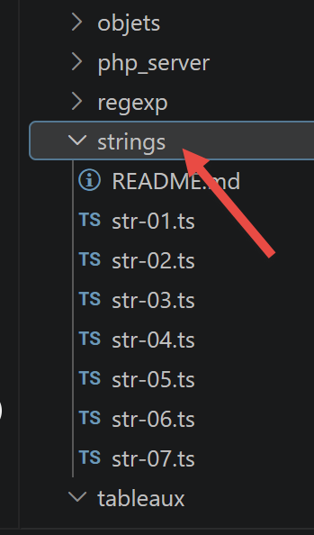
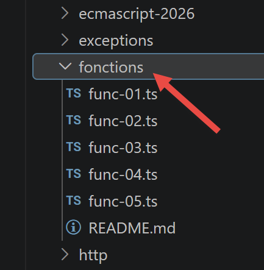
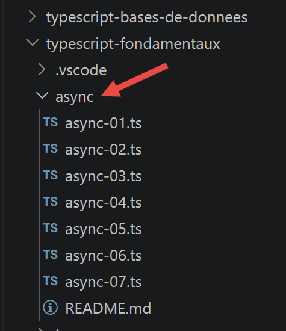
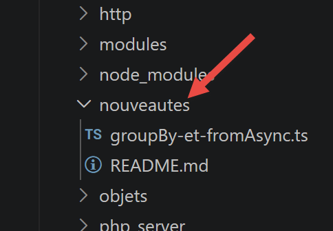
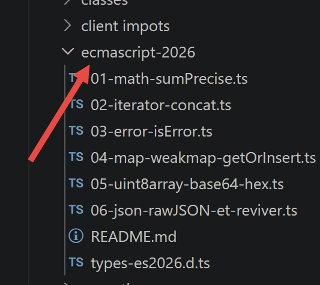
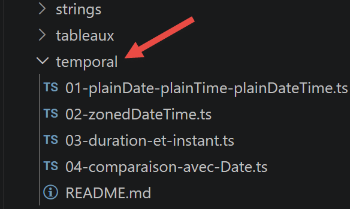

3. The Fundamentals
3.1. The Basics of TypeScript
Note: Hereinafter, the term [TypeScript] will refer to the language as defined by version 6, a typed superset of ECMAScript 2026.
The scripts in this chapter are located in the [bases] folder of the project.

3.1.1. [bases-01] script
This script uses the introductory example from the original JavaScript course, translated and typed as TypeScript:
| /* eslint-disable no-constant-condition */
'use strict';
// this is a comment
// constant
const nom: string = "dupont";
// a screen display
console.log("nom : ", nom);
// an array with elements of different types
// [any] because this array intentionally mixes several types (demonstration)
const tableau: any[] = ["un", "deux", 3, 4];
// its number of elements
let n: any = tableau.length;
// a loop
for (let i = 0; i < n; i++) {
console.log("tableau[", i, "] = ", tableau[i]);
}
// initializing two variables with the contents of an array
let [chaine1, chaine2]: string[] = ["chaine1", "chaine2"];
// concatenation of the two strings
const chaine3 = chaine1 + chaine2;
// displaying the result
console.log([chaine1, chaine2, chaine3]);
// using a function
affiche(chaine1);
// The type of a variable can be determined
afficheType("n", n);
afficheType("chaine1", chaine1);
afficheType("tableau", tableau);
// A variable's type can change during runtime
// [n] is typed as [any] above: this is precisely what allows TypeScript
// to accept this reassignment along the way, as in JavaScript
n = "a changé";
afficheType("n", n);
// a function can return a result
let res1: any = f1(4);
console.log("res1=", res1);
// a function can return an array of values
let res2: any, res3: any;
[res1, res2, res3] = f2();
console.log("(res1,res2,res3)=", [res1, res2, res3]);
// we could have retrieved these values into an array
let t: any[] = f2();
for (let i = 0; i < t.length; i++) {
console.log("t[", i, "]=", t[i]);
}
// tests
for (let i = 0; i < t.length; i++) {
// displays only strings
if (typeof (t[i]) === "string") {
console.log("t[", i, "]=", t[i]);
}
}
// comparison operators == and ===
if ("2" == (2 as any)) {
console.log("avec l'opérateur ==, la chaîne 2 est égale à l'entier 2");
} else {
console.log("avec l'opérateur ==, la chaîne 2 n'est pas égale à l'entier 2");
}
if (("2" as any) === 2) {
console.log("avec l'opérateur ===, la chaîne 2 est égale à l'entier 2");
} else {
console.log("avec l'opérateur ===, la chaîne 2 n'est pas égale à l'entier 2");
}
// more tests
for (let i = 0; i < t.length; i++) {
// displays only integers greater than 10
if (typeof (t[i]) === "number" && Math.floor(t[i]) === t[i] && t[i] > 10) {
console.log("t[", i, "]=", t[i]);
}
}
// a while loop
t = [8, 5, 0, -2, 3, 4];
let i = 0;
let somme = 0;
while (i < t.length && t[i] > 0) {
console.log("t[", i, "]=", t[i]);
somme += t[i];
i++;
}
console.log("somme=", somme);
// the program stops because there is no more executable code
//displays
//----------------------------------
function affiche(chaine: string): void {
// displays a string
console.log("chaine=", chaine);
}
//afficheType
//----------------------------------
function afficheType(name: string, variable: unknown): void {
// displays the variable type
console.log("type[variable ", name, "]=", typeof (variable));
}
//----------------------------------
function f1(param: number): number {
// adds 10 to param
return param + 10;
}
//----------------------------------
function f2(): any[] {
// returns 3 values
return ["un", 0, 100];
}
|
Let’s comment on this code:
- line 5: [const nom: string = "dupont"] — in TypeScript, you can explicitly annotate a variable’s type by adding
type after its name. Here, name is guaranteed to be a string throughout the program;
- line 10: [const tableau: any[] = ...] — this array intentionally mixes strings and numbers. The
any[] type tells TypeScript not to check the types of the elements: this is an explicit choice, distinct from an omission of typing (which strict mode prohibits);
- line 12: [let n: any = tableau.length] —
n is typed as any because, later on (line 32), it is reassigned a string after having been assigned a number. In JavaScript, a variable can change types freely; in TypeScript, this is permitted only if explicitly allowed with any (or a type union, such as number | string);
- line 54: ["2" == (2 as any)] — TypeScript prohibits, by default, comparing two values of incompatible types (string and number) using
==. The expression (2 as any) is a type assertion: we explicitly tell TypeScript “treat this value as any; do not check its type here,” which deliberately illustrates the type coercion specific to the == operator;
- line 93: the function [function afficheType(name: string, variable: unknown): void] types its second parameter as
unknown rather than any. Unlike any, unknown prohibits using the value without first checking it—here, we simply use typeof(variable), which is allowed even on unknown;
- lines 86–108: Functions now have an explicit return type (: number, : void..., etc.), written after the parameter list.
Let’s run this script:
npx tsx bases/bases-01.ts
Execution result:
| nom : dupont
tableau[ 0 ] = un
tableau[ 1 ] = deux
tableau[ 2 ] = 3
tableau[ 3 ] = 4
[ 'chaine1', 'chaine2', 'chaine1chaine2' ]
chaine= chaine1
type[variable n ]= number
type[variable chaine1 ]= string
type[variable tableau ]= object
type[variable n ]= string
res1= 14
(res1,res2,res3)= [ 'un', 0, 100 ]
t[ 0 ]= un
t[ 1 ]= 0
t[ 2 ]= 100
t[ 0 ]= un
avec l'opérateur ==, la chaîne 2 est égale à l'entier 2
avec l'opérateur ===, la chaîne 2 n'est pas égale à l'entier 2
t[ 2 ]= 100
t[ 0 ]= 8
t[ 1 ]= 5
somme= 13
|
3.1.2. script [bases-02]
The script [bases-02] demonstrates the use of the keywords [let] and [const]:
| 'use strict';
// To initialize a variable, use `let` or `const`
// `let` for variables
let x: number = 4;
x++;
console.log(x);
// `const` for constants
const y: number = 10;
x += y;
// is not allowed
y++;
|
- [let] declares a variable whose value can change (lines 4–5);
- [const] declares a constant whose value cannot change (line 8);
- line 11: an attempt is made to reassign the constant y with y++. This is where TypeScript offers a real advantage over JavaScript.
Even before executing the script, the type check flags the error:
Execution result:
| bases/bases-02.ts(11,1): error TS2588: Cannot assign to 'y' because it is a constant.
|
In the original JavaScript, this same error would not have been detected until runtime. Let’s run this script anyway using tsx (which executes the code without first performing type checking, unlike tsc) to see the error as JavaScript actually raises it:
npx tsx bases/bases-02.ts
Execution result:
| 5
TypeError: Assignment to constant variable.
at bases/bases-02.ts:11:1
|
Important: tsx transpiles TypeScript into JavaScript without type checking (as Babel does), for fast execution during development. This is why this script runs (and crashes during execution) even though it does not compile with tsc. To be notified of the error before execution, use VSCode (which runs tsc in the background) or the `npm run check` command.
3.1.3. script [bases-03]
Illustrates the scope of global variables, which are visible inside a function:
| 'use strict';
// Variable scope
let count: number = 1;
function doSomething(): void {
// `count` is known here
console.log("count=", count);
}
// call
doSomething();
|
npx tsx bases/bases-03.ts
Execution result:
3.1.4. script [bases-04]
A local variable within a function hides (masks) a global variable with the same name:
| 'use strict';
// variable scope
const count: number = 1;
function doSomething(): void {
// the local variable masks the global variable
const count = 2;
console.log("count inside function=", count);
}
// global variable
console.log("count outside function=", count);
// local variable
doSomething();
|
npx tsx bases/bases-04.ts
Execution result:
| count outside function= 1
count inside function= 2
|
3.1.5. script [bases-05]
A local variable (const count inside the function) is not visible outside of that function:
| 'use strict';
// variable scope
function doSomething(): void {
// local variable within the function
const count = 2;
console.log("count inside function=", count);
}
// Here, `count` is not defined
console.log("count outside function=", count);
doSomething();
|
Here again, TypeScript detects the problem during compilation—there’s no need to run the script to find out:
Execution result:
| bases/bases-05.ts(9,40): error TS2304: Cannot find name 'count'.
|
And when run with tsx:
npx tsx bases/bases-05.ts
Execution result:
| ReferenceError: count is not defined
at bases/bases-05.ts:9:40
|
3.1.6. script [bases-06]
This script compares the block scope ([let], [const]) to the absence of block scope ([var]):
| 'use strict';
// The keyword [let] is used to define a block-scope variable
{
// The variable [count] is known only within this block
let count: number = 1;
console.log("count=", count);
}
// Here, the variable [count] is not recognized
count++;
// The keyword [const] is used to define a block-scope variable
{
// The variable [count2] is known only within this block
const count2: number = 1;
console.log("count=", count2);
}
// Here, the variable [count2] is not recognized
count2++;
// The keyword [var] cannot be used to define a block-scope variable
{
// The variable [count3] will be globally known
var count3: number = 1;
console.log("count=", count3);
}
// Here, the variable [count3] is known
count3++;
|
- A variable declared with [let] or [const] inside a block { } exists only within that block;
- a variable declared with [var] ignores blocks: it remains visible throughout the entire function (or script) that surrounds it—this was the only behavior available prior to ECMAScript in 2015, which was the source of many bugs, hence the recommendation to always prefer [let]/[const].
Compilation:
Execution result:
| bases/bases-06.ts(9,1): error TS2552: Cannot find name 'count'. Did you mean 'count3'?
bases/bases-06.ts(18,1): error TS2552: Cannot find name 'count2'. Did you mean 'count3'?
|
Execution (the script stops at the first error encountered, on count):
npx tsx bases/bases-06.ts
Execution result:
| count= 1
ReferenceError: count is not defined
at bases/bases-06.ts:9:1
|
3.1.7. script [bases-07]
Overview of the main types TypeScript:
| 'use strict';
// data type jS
const var1: number = 10;
const var2: string = "abc";
const var3: boolean = true;
const var4: number[] = [1, 2, 3];
const var5: { nom: string } = {
nom: 'axèle'
};
const var6: () => number = function () {
return +3;
}
// type display
console.log("typeof(var1)=", typeof (var1));
console.log("typeof(var2)=", typeof (var2));
console.log("typeof(var3)=", typeof (var3));
console.log("typeof(var4)=", typeof (var4));
console.log("typeof(var5)=", typeof (var5));
console.log("typeof(var6)=", typeof (var6));
|
- [var5: { nom: string }] — an inline object type: the expected form of the object is described directly within curly braces, without having to declare a separate interface;
- [var6: () => number] — a function type: a function with no parameters that returns a number;
- at runtime,
typeof remains that of JavaScript (it ignores type annotations, which exist only at compile time and disappear afterward): this is why typeof(var4) (an array) and typeof(var5) (an object) both return "object".
npx tsx bases/bases-07.ts
Execution result:
| typeof(var1)= number
typeof(var2)= string
typeof(var3)= boolean
typeof(var4)= object
typeof(var5)= object
typeof(var6)= function
|
3.1.8. script [bases-08]
Both implicit and explicit type conversions remain as shown in JavaScript (TypeScript does not change the execution):
| 'use strict';
// Implicit type conversions
// type --> bool
console.log("---------------[Conversion implicite vers un booléen]------------------------------");
showBool("abcd");
showBool("");
showBool([1, 2, 3]);
showBool([]);
showBool(null);
showBool(0.0);
showBool(0);
showBool(4.6);
showBool({});
showBool(undefined);
// [any] because this function intentionally accepts any type as input
function showBool(data: any): void {
// The conversion of data to a boolean is done automatically in the following test
console.log("[data=", data, "], [type(data)]=", typeof (data), "[valeur booléenne(data)]=", data ? true : false);
}
// implicit type conversions to a numeric type
console.log("---------------[Conversion implicite vers un nombre]------------------------------");
showNumber("12");
showNumber("45.67");
showNumber("abcd");
function showNumber(data: any): void {
// data + 1 does not work because jS then performs string concatenation rather than addition
const nombre = data * 1;
console.log("[data=", data, "], [type(data)]=", typeof (data), "[nombre]=", nombre, "[type(nombre)]=", typeof (nombre));
}
// Explicit type conversions to a Boolean
console.log("---------------[Conversion explicite vers un booléen]------------------------------");
showBool2("abcd");
showBool2("");
showBool2([1, 2, 3]);
showBool2([]);
showBool2(null);
showBool2(0.0);
showBool2(0);
showBool2(4.6);
showBool2({});
showBool2(undefined);
function showBool2(data: any): void {
// The conversion of `data` to a Boolean is done explicitly in the following test
console.log("[", data, "], [type(data)]=", typeof (data), "[valeur booléenne(data)]=", Boolean(data));
}
// explicit type casts to `Number`
console.log("---------------[Conversion explicite vers un nombre]------------------------------");
showNumber2("12.45");
showNumber2(67.8);
showNumber2(true);
showNumber2(null);
function showNumber2(data: any): void {
const nombre = Number(data);
console.log("[data=", data, "], [type(data)]=", typeof (data), "[nombre]=", nombre, "[type(nombre)]=", typeof (nombre));
}
// to String
console.log("---------------[Conversion explicite vers un string]------------------------------");
showString(5);
showString(6.7);
showString(false);
showString(null);
function showString(data: any): void {
const chaîne = String(data);
console.log("[data=", data, "], [type(data)]=", typeof (data), "[chaîne]=", chaîne, "[type(chaîne)]=", typeof (chaîne));
}
// some unexpected implicit conversions
console.log("---------------[Autres cas]------------------------------");
const string1: string = '1000.78';
// default string concatenation
const data1 = string1 + 1.034;
console.log("data1=", data1, "type=", typeof (data1));
const data2 = 1.034 + string1;
console.log("data2=", data2, "type=", typeof (data2));
// explicit conversion to a number
const data3 = Number(string1) + 1.034;
console.log("data3=", data3, "type=", typeof (data3));
// true is converted to the number 1
const data4 = (true as any) * 1.18;
console.log("data4=", data4, "type=", typeof (data4));
// false is converted to the number 0
const data5 = (false as any) * 1.18;
console.log("data5=", data5, "type=", typeof (data5));
|
- All functions in this script declare their
data parameter as any: this is intentional, since the goal is precisely to show how the same function behaves with values of very different types (string, array, null, undefined, etc.);
- [Boolean(data)], [Number(data)], and [String(data)] are explicit conversions—which are always preferable to implicit conversions, as they are more predictable and more readable;
- last block:
string1 + 1.034 results in string concatenation (the + operator with a string on either side prioritizes concatenation), whereas Number(string1) + 1.034 results in numerical addition.
npx tsx bases/bases-08.ts
Execution result:
| ---------------[Conversion implicite vers un booléen]------------------------------
[data= abcd ], [type(data)]= string [valeur booléenne(data)]= true
[data= ], [type(data)]= string [valeur booléenne(data)]= false
[data= [ 1, 2, 3 ] ], [type(data)]= object [valeur booléenne(data)]= true
[data= [] ], [type(data)]= object [valeur booléenne(data)]= true
[data= null ], [type(data)]= object [valeur booléenne(data)]= false
[data= 0 ], [type(data)]= number [valeur booléenne(data)]= false
[data= 0 ], [type(data)]= number [valeur booléenne(data)]= false
[data= 4.6 ], [type(data)]= number [valeur booléenne(data)]= true
[data= {} ], [type(data)]= object [valeur booléenne(data)]= true
[data= undefined ], [type(data)]= undefined [valeur booléenne(data)]= false
---------------[Conversion implicite vers un nombre]------------------------------
[data= 12 ], [type(data)]= string [nombre]= 12 [type(nombre)]= number
[data= 45.67 ], [type(data)]= string [nombre]= 45.67 [type(nombre)]= number
[data= abcd ], [type(data)]= string [nombre]= NaN [type(nombre)]= number
---------------[Conversion explicite vers un booléen]------------------------------
[ abcd ], [type(data)]= string [valeur booléenne(data)]= true
[ ], [type(data)]= string [valeur booléenne(data)]= false
[ [ 1, 2, 3 ] ], [type(data)]= object [valeur booléenne(data)]= true
[ [] ], [type(data)]= object [valeur booléenne(data)]= true
[ null ], [type(data)]= object [valeur booléenne(data)]= false
[ 0 ], [type(data)]= number [valeur booléenne(data)]= false
[ 0 ], [type(data)]= number [valeur booléenne(data)]= false
[ 4.6 ], [type(data)]= number [valeur booléenne(data)]= true
[ {} ], [type(data)]= object [valeur booléenne(data)]= true
[ undefined ], [type(data)]= undefined [valeur booléenne(data)]= false
---------------[Conversion explicite vers un nombre]------------------------------
[data= 12.45 ], [type(data)]= string [nombre]= 12.45 [type(nombre)]= number
[data= 67.8 ], [type(data)]= number [nombre]= 67.8 [type(nombre)]= number
[data= true ], [type(data)]= boolean [nombre]= 1 [type(nombre)]= number
[data= null ], [type(data)]= object [nombre]= 0 [type(nombre)]= number
---------------[Conversion explicite vers un string]------------------------------
[data= 5 ], [type(data)]= number [chaîne]= 5 [type(chaîne)]= string
[data= 6.7 ], [type(data)]= number [chaîne]= 6.7 [type(chaîne)]= string
[data= false ], [type(data)]= boolean [chaîne]= false [type(chaîne)]= string
[data= null ], [type(data)]= object [chaîne]= null [type(chaîne)]= string
---------------[Autres cas]------------------------------
data1= 1000.781.034 type= string
data2= 1.0341000.78 type= string
data3= 1001.814 type= number
data4= 1.18 type= number
data5= 0 type= number
|
3.1.9. script [bases-09]
[NOUVEAU depuis 2019] This script features operators introduced in ECMAScript 2020–2021, which are now very commonly used:
| 'use strict';
// ========================================================================
// [NOUVEAU depuis 2019] some modern operators that are widely used on a daily basis
// ========================================================================
// ------------------------------------------------------------------------
// 1) the null coalescing operator [??] (ECMAS cript 2020)
// ------------------------------------------------------------------------
// with [||], a "false" value (0, "", false, NaN, ...) triggers the default value,
//, which isn’t always what we want
const quantité1: number = 0;
console.log("avec || : quantité1 || 10 =", quantité1 || 10); // -> 10 (bug! 0 is actually a valid quantity)
// [??] only triggers the default value if the value is null or undefined
console.log("avec ?? : quantité1 ?? 10 =", quantité1 ?? 10); // -> 0 (correct)
const quantité2: number | null = null;
console.log("quantité2 ?? 10 =", quantité2 ?? 10); // -> 10 (quantity2 is null)
const quantité3: number | undefined = undefined;
console.log("quantité3 ?? 10 =", quantité3 ?? 10); // -> 10 (quantity3 is undefined)
// ------------------------------------------------------------------------
// 2) Optional chaining [?.] (EC MAScript 2020)
// ------------------------------------------------------------------------
// Before 2020, to safely access a deep property, you had to
// test each level: if (person && personne.adresse && personne.adresse.ville) ...
// common interface: [adresse] is optional (person2 doesn't have one)
interface PersonneAvecAdresseOptionnelle {
nom: string;
adresse?: { ville: string };
}
const personne1: PersonneAvecAdresseOptionnelle = {
nom: "Dupont",
adresse: {
ville: "Nantes"
}
};
const personne2: PersonneAvecAdresseOptionnelle = {
nom: "Martin"
// no address!
};
// [?.] stops evaluation and returns [undefined] as soon as a step is null or undefined
// instead of throwing a "Cannot read properties of undefined" error
console.log("personne1 ville =", personne1.adresse?.ville);
console.log("personne2 ville =", personne2.adresse?.ville); // -> undefined, no error
// You can combine [?.] and [??] to provide a replacement value
console.log("personne2 ville (avec défaut) =", personne2.adresse?.ville ?? "ville inconnue");
// [?.] also works on method calls...
interface ObjetAvecMéthode {
direBonjour(): string;
direAurevoir?(): string;
}
const objetAvecMéthode: ObjetAvecMéthode = {
direBonjour() {
return "bonjour !";
}
};
console.log("appel méthode existante :", objetAvecMéthode.direBonjour?.());
console.log("appel méthode absente :", objetAvecMéthode.direAurevoir?.()); // -> undefined, no error
// ...and when accessing an array element
const tableauOuNull: number[] | null = null;
console.log("élément d'un tableau absent :", tableauOuNull?.[0]); // -> undefined
// ------------------------------------------------------------------------
// 3) logical assignment operators [||=], [&&=], [??=] (ECMASc ript 2021)
// ------------------------------------------------------------------------
// These operators combine a logical test and an assignment into a single statement
// [a ??= b] is equivalent to [a = a ?? b]: assigns b only if a is null/undefined
interface Configuration {
délai: number;
page?: number;
}
const config: Configuration = { délai: 0, page: undefined };
config.délai ??= 1000; // The delay is already 0 (valid value) -> remains unchanged
config.page ??= 1; // page is undefined -> becomes 1
console.log("config après ??= :", config);
// [a ||= b] is equivalent to [a = a || b]: affects b if a is "false" (0, "", null, undefined, false...)
let messageAffiché: string = "";
messageAffiché ||= "message par défaut";
console.log("messageAffiché après ||= :", messageAffiché);
// [a &&= b] is equivalent to [a = a && b]: assigns a value to b only if a is already "true"
interface UtilisateurConnecté {
nom: string;
connecté?: boolean;
}
let utilisateurConnecté: UtilisateurConnecté | null = { nom: "Ana" };
utilisateurConnecté &&= { ...utilisateurConnecté, connecté: true };
console.log("utilisateurConnecté après &&= :", utilisateurConnecté);
// ------------------------------------------------------------------------
// 4) Numeric separators [_] (EC MAScript 2021)
// ------------------------------------------------------------------------
// purely visual: makes large numbers more readable in the source code
const unMillion: number = 1_000_000;
const carteBancaire: bigint = 1234_5678_9012_3456n; // combined here with a BigInt (see below)
console.log("unMillion =", unMillion);
console.log("carteBancaire =", carteBancaire);
// ------------------------------------------------------------------------
// 5) the [BigInt] type (ECMAScript 2020)
// ------------------------------------------------------------------------
// the [number] type of JavaScript loses precision beyond approximately 2^53
console.log("Number.MAX_SAFE_INTEGER =", Number.MAX_SAFE_INTEGER);
console.log("Number.MAX_SAFE_INTEGER + 1 =", Number.MAX_SAFE_INTEGER + 1);
console.log("Number.MAX_SAFE_INTEGER + 2 =", Number.MAX_SAFE_INTEGER + 2); // -> same result as +1, imprecise!
// A [BigInt] is written with a final [n], or is constructed using BigInt(...)
const grandNombre1: bigint = 9007199254740993n;
const grandNombre2: bigint = BigInt("9007199254740993");
console.log("grandNombre1 =", grandNombre1, ", type =", typeof (grandNombre1));
console.log("grandNombre1 === grandNombre2 :", grandNombre1 === grandNombre2);
// A BigInt and a number cannot be directly combined in a calculation
try {
console.log((grandNombre1 as any) + 1); // causes an error: [TypeError]
} catch (error: any) {
console.log("erreur attendue :", error.message);
}
// You must convert explicitly
console.log("grandNombre1 + 1n =", grandNombre1 + 1n);
|
Let’s discuss the most important new features:
- [??], null coalescing (ECMAScript 2020): unlike [||], which returns its default value for any “false” value (0, "", false...), [??] is triggered only if the value is null or undefined. This is the right choice for a quantity that can legitimately be 0;
- [?.], optional chaining (ECMAScript 2020): stops evaluation and returns
undefined as soon as an intermediate step is null or undefined, instead of throwing an error. Also works on method calls (objet.méthode?.()) and on indexing (array?.[0]);
- [||=], [&&=], [??=], logical assignment operators (ECMAScript 2021): combine a logical test and an assignment into a single expression (a ??= b is equivalent to a = a ?? b);
- the numeric separators 1_000_000 (ECMAScript 2021): purely visual, they make large numbers more readable in the source code;
- the type [BigInt] (ECMAScript 2020), denoted with a final “n” (9007199254740993n): unlike
number, it does not lose precision beyond Number.MAX\_SAFE\_INTEGER. A BigInt and a number cannot be mixed directly in a calculation, as shown by the script’s try/catch block.
npx tsx bases/bases-09.ts
Execution result:
| avec || : quantité1 || 10 = 10
avec ?? : quantité1 ?? 10 = 0
quantité2 ?? 10 = 10
quantité3 ?? 10 = 10
personne1 ville = Nantes
personne2 ville = undefined
personne2 ville (avec défaut) = ville inconnue
appel méthode existante : bonjour !
appel méthode absente : undefined
élément d'un tableau absent : undefined
config après ??= : { 'délai': 0, page: 1 }
messageAffiché après ||= : message par défaut
utilisateurConnecté après &&= : { nom: 'Ana', 'connecté': true }
unMillion = 1000000
carteBancaire = 1234567890123456n
Number.MAX_SAFE_INTEGER = 9007199254740991
Number.MAX_SAFE_INTEGER + 1 = 9007199254740992
Number.MAX_SAFE_INTEGER + 2 = 9007199254740992
grandNombre1 = 9007199254740993n , type = bigint
grandNombre1 === grandNombre2 : true
erreur attendue : Cannot mix BigInt and other types, use explicit conversions
grandNombre1 + 1n = 9007199254740994n
|
3.1.10. Conclusion
We have covered the basics of the TypeScript type system: type annotations on variables, function parameters, and return values; the any and unknown types; the language’s main modern operators (??, ?., ||=/&&=/??=); and the BigInt type. The next chapter covers arrays.
3.2. Arrays
The scripts for this chapter are located in the [tableaux] folder of the project:

3.2.1. script [tab-01]
The following script illustrates a key feature of the TypeScript/JavaScript arrays: they are objects manipulated by reference (via a pointer), rather than data that is copied with each assignment.
| 'use strict';
//: An array is an object accessed via its address
const tab1: number[] = [1, 2, 3];
// copying addresses
const tab2: number[] = tab1;
// tab1 and tab2 point to the same array
console.log("tab1===tab2 :", tab1 === tab2);
// You can modify the array using either tab1 or tab2
tab2[1] = 10;
console.log("tab1=", tab1);
console.log("tab2=", tab2);
|
npx tsx tableaux/tab-01.ts
Execution result:
| tab1===tab2 : true
tab1= [ 1, 10, 3 ]
tab2= [ 1, 10, 3 ]
|
- tab1===tab2 evaluates to true: both variables point to the same array in memory;
- so modifying the array via
tab2 also modifies what is seen through tab1—this is a direct consequence of the fact that tab1 and tab2 refer to the same data.
3.2.2. script [tab-02]
This script shows that the array TypeScript does not have a fixed size and behaves more like a dynamic indexed list than a traditional compiled-language array:
| 'use strict';
// array
// [any] because this array will contain gaps and values of different types
const tab: any[] = [];
console.log("tab=", tab, ", longueur=[", tab.length, "]");
console.log("-------------------------------");
// initializing an element
tab[3] = 100;
tab[1] = "huit";
// array
console.log("tab=", tab, ", longueur=[", tab.length, "]");
console.log("-------------------------------");
// toString
console.log("tab.toString=[", tab.toString(), "]");
console.log("-------------------------------");
// The keys of the array are its indices
for (let key of tab.keys()) {
console.log("clé=[", key, "], valeur=[", tab[key], "]");
}
console.log("-------------------------------");
// the values of the array
for (let value of tab.values()) {
console.log("valeur=[", value, "]");
}
|
- line 5: const tab: any[] = [] — an empty array, typed as
any[] because it will intentionally contain “gaps”;
- lines 9–10: element #3 can be initialized even if elements 0, 1, and 2 do not yet exist—they become “gaps” (empty items), which are distinct from
undefined even though they are often displayed similarly;
- lines 18–20: the keys() and values() methods return iterators that can be traversed using for...of.
npx tsx tableaux/tab-02.ts
Execution result:
| tab= [] , longueur=[ 0 ]
-------------------------------
tab= [ <1 empty item>, 'huit', <1 empty item>, 100 ] , longueur=[ 4 ]
-------------------------------
tab.toString=[ ,huit,,100 ]
-------------------------------
clé=[ 0 ], valeur=[ undefined ]
clé=[ 1 ], valeur=[ huit ]
clé=[ 2 ], valeur=[ undefined ]
clé=[ 3 ], valeur=[ 100 ]
-------------------------------
valeur=[ undefined ]
valeur=[ huit ]
valeur=[ undefined ]
valeur=[ 100 ]
|
3.2.3. script [tab-03]
This script demonstrates the main methods for manipulating an array: iterating, adding, and removing elements.
| 'use strict';
// An array can contain different data types
// [any] because this array intentionally mixes several types (demonstration)
const tab: any[] = [1, 2, "un", "deux", true, [10, 20], { prop1: 10, prop2: "abc" }];
// console.log can display the contents of an array
show(1);
console.log("tab=", tab);
show(2);
// Iterating through the array using `foreach`
tab.forEach(element => {
console.log("élément=", element, typeof (element));
});
show("2b");
// another way to do the same thing
tab.forEach(function (element) {
console.log("élément=", element, typeof (element));
});
show(3);
// Iterating through the array using `for`
for (let i = 0; i < tab.length; i++) {
console.log("i=", i, "tab[i]=", tab[i]);
}
show(4);
// Modifying a table [i]
tab[5] = [];
// display
console.log("tab=", tab);
show(5);
// removing the last element from the array
let element = tab.pop();
console.log("élément=", element, "tab=", tab);
show(6);
// Add an element to the end of the array
tab.push('xyz');
console.log("tab=", tab);
show(7);
// add an element to the beginning of the array
tab.unshift(1000);
console.log("tab=", tab);
show(8);
// remove the first element
element = tab.shift();
console.log("élément=", element, "tab=", tab);
show(9);
// Removes element #2 from the array
element = tab.splice(2, 1);
console.log("élément=", element, "tab=", tab);
show(10);
// Removes two elements from the array, starting with the first element
element = tab.splice(1, 2);
console.log("élément=", element, "tab=", tab);
// function
function show(param: number | string): void {
console.log("[", param, ":::::::::::::::::::::::::::::::::::::::::::::::::::::::::::::::::: ]");
}
|
- Line 4: Although
tab is declared as const, its contents can be modified (line 25, tab[5] = []). It is the pointer to the array that is constant, not the array itself;
- lines 10–12:
forEach iterates through the array and calls the function passed as a parameter for each element—here written using arrow notation: element => { ... };
- lines 15–17: the same thing, written using traditional function syntax—the two forms are equivalent;
- The methods pop(), push(), unshift(), shift(), and splice() modify the array in place (they have side effects): this is an important difference from the “immutable” methods seen in script tab-05.
npx tsx tableaux/tab-03.ts
Execution result (formatted on a single line for readability):
| [ 1 :::::::::::::::::::::::::::::::::::::::::::::::::::::::::::::::::: ]
tab= [ 1, 2, 'un', 'deux', true, [ 10, 20 ], { prop1: 10, prop2: 'abc' } ]
[ 2 :::::::::::::::::::::::::::::::::::::::::::::::::::::::::::::::::: ]
élément= 1 number
élément= 2 number
élément= un string
élément= deux string
élément= true boolean
élément= [ 10, 20 ] object
élément= { prop1: 10, prop2: 'abc' } object
[ 2b :::::::::::::::::::::::::::::::::::::::::::::::::::::::::::::::::: ]
élément= 1 number
élément= 2 number
élément= un string
élément= deux string
élément= true boolean
élément= [ 10, 20 ] object
élément= { prop1: 10, prop2: 'abc' } object
[ 3 :::::::::::::::::::::::::::::::::::::::::::::::::::::::::::::::::: ]
i= 0 tab[i]= 1
i= 1 tab[i]= 2
i= 2 tab[i]= un
i= 3 tab[i]= deux
i= 4 tab[i]= true
i= 5 tab[i]= [ 10, 20 ]
i= 6 tab[i]= { prop1: 10, prop2: 'abc' }
[ 4 :::::::::::::::::::::::::::::::::::::::::::::::::::::::::::::::::: ]
tab= [ 1, 2, 'un', 'deux', true, [], { prop1: 10, prop2: 'abc' } ]
[ 5 :::::::::::::::::::::::::::::::::::::::::::::::::::::::::::::::::: ]
élément= { prop1: 10, prop2: 'abc' } tab= [ 1, 2, 'un', 'deux', true, [] ]
[ 6 :::::::::::::::::::::::::::::::::::::::::::::::::::::::::::::::::: ]
tab= [ 1, 2, 'un', 'deux', true, [], 'xyz' ]
[ 7 :::::::::::::::::::::::::::::::::::::::::::::::::::::::::::::::::: ]
tab= [ 1000, 1, 2, 'un', 'deux', true, [], 'xyz' ]
[ 8 :::::::::::::::::::::::::::::::::::::::::::::::::::::::::::::::::: ]
élément= 1000 tab= [ 1, 2, 'un', 'deux', true, [], 'xyz' ]
[ 9 :::::::::::::::::::::::::::::::::::::::::::::::::::::::::::::::::: ]
élément= [ 'un' ] tab= [ 1, 2, 'deux', true, [], 'xyz' ]
[ 10 :::::::::::::::::::::::::::::::::::::::::::::::::::::::::::::::::: ]
élément= [ 2, 'deux' ] tab= [ 1, true, [], 'xyz' ]
|
3.2.4. script [tab-04]
This script introduces the functional methods for transforming an array: map, reduce, filter, find, findIndex, indexOf, sort.
| 'use strict';
// array manipulation method
// an array
const tab: number[] = [];
for (let i = 0; i < 10; i++) {
tab[i] = i * 10;
}
// display
console.log("tab=", tab);
// map
const tab2 = tab.map(element => {
return { prop1: element, prop2: element * element }
});
// display
console.log("tab=", tab);
console.log("tab2=", tab2);
// reduce without an initial value
const somme = tab.reduce((accumulator, currentValue) => accumulator + currentValue);
console.log("somme tab=", somme);
// reduce with initial value 10
const somme2 = tab.reduce((accumulator, currentValue) => accumulator + currentValue, 10);
console.log("somme2 tab=", somme2);
// filter
const tab4 = tab.filter((element) => {
return element > 50;
});
console.log("tab4=", tab4);
// find
const element1 = tab.find((element) => (element > 20));
console.log("élément1=", element1);
// findIndex
const index1 = tab.findIndex((element) => (element === 20));
console.log("index1 20=", index1);
// indexOf
const index2 = tab.indexOf(30);
console.log("index2 30=", index2);
const index3 = tab.indexOf(31);
console.log("index3 31=", index3);
// lastIndexOf
const index4 = [4, 5, 4, 2].lastIndexOf(4);
console.log("index4 4=", index4);
// sort
const tab5 = [4, 5, 4, 2].sort();
console.log("tab5=", tab5);
// reverse sort
const tab6 = [4, 5, 4, 2].sort((e1, e2) => {
if (e1 > e2) {
return -1;
}
else if (e1 === e2) {
return 0;
} else {
return +1;
}
});
console.log("tab6=", tab6);
|
- [map] transforms each element and returns a new array—the original remains unchanged;
- [reduce] “accumulates” the elements one by one into a single result. The first parameter of its function (accumulator) is the result accumulated so far; the second (currentValue) is the current element. Without an initial value (line 20), the accumulator starts with the first element of the array;
- [filter] retains only the elements for which the function returns a “true” value;
- [find] returns the first element that satisfies the criterion (or
undefined), while [findIndex] returns its index (or -1);
- [sort] without parameters sorts in natural order. With a comparison function (e1, e2) => ..., you have complete control over the order: -1 if e1 must come before e2, +1 otherwise, and 0 in case of a tie.
npx tsx tableaux/tab-04.ts
Execution result:
| tab= [ 0, 10, 20, 30, 40, 50, 60, 70, 80, 90 ]
tab= [ 0, 10, 20, 30, 40, 50, 60, 70, 80, 90 ]
tab2= [
{ prop1: 0, prop2: 0 },
{ prop1: 10, prop2: 100 },
{ prop1: 20, prop2: 400 },
{ prop1: 30, prop2: 900 },
{ prop1: 40, prop2: 1600 },
{ prop1: 50, prop2: 2500 },
{ prop1: 60, prop2: 3600 },
{ prop1: 70, prop2: 4900 },
{ prop1: 80, prop2: 6400 },
{ prop1: 90, prop2: 8100 }
]
somme tab= 450
somme2 tab= 460
tab4= [ 60, 70, 80, 90 ]
élément1= 30
index1 20= 2
index2 30= 3
index3 31= -1
index4 4= 2
tab5= [ 2, 4, 4, 5 ]
tab6= [ 5, 4, 4, 2 ]
|
3.2.5. script [tab-05]
[NOUVEAU depuis 2019] This script demonstrates the new array methods introduced between 2022 and 2023:
| 'use strict';
// ========================================================================
// [NOUVEAU depuis 2019] new array methods
// ========================================================================
// ------------------------------------------------------------------------
// 1) at(index) (ECMAScript 2022)
// ------------------------------------------------------------------------
// Previously, to access the last element of an array, we wrote tab[tab.length - 1]
const tab: number[] = [10, 20, 30, 40, 50];
console.log("tab[tab.length - 1] =", tab[tab.length - 1]); // old way
console.log("tab.at(-1) =", tab.at(-1)); // -> last element, more readable
console.log("tab.at(-2) =", tab.at(-2)); // -> second-to-last element
console.log("tab.at(0) =", tab.at(0)); // -> equivalent to tab[0]
// .at also works on strings
console.log("'bonjour'.at(-1) =", "bonjour".at(-1));
// ------------------------------------------------------------------------
// 2) findLast() and findLastIndex() (ECMAScript 2023)
// ------------------------------------------------------------------------
// symmetric to find() / findIndex()
const nombres: number[] = [5, 12, 8, 21, 3, 17];
const dernierPair = nombres.findLast(n => n % 2 === 0);
console.log("dernier nombre pair =", dernierPair); // -> 8
const indexDernierPair = nombres.findLastIndex(n => n % 2 === 0);
console.log("index du dernier nombre pair =", indexDernierPair);
// ------------------------------------------------------------------------
// 3) "immutable" methods (ECM AScript 2023)
// ------------------------------------------------------------------------
// `sort()`, `reverse()`, and `splice()` modify the original array (side effect) — see tab-04.js
// Their “to...” equivalents return an array and leave the original intact
// [(number | string)[]] because toSpliced() inserts strings further down in this array
const original: (number | string)[] = [4, 5, 4, 2];
// toSorted: like sort(), but without modifying the original
const trié = original.toSorted();
console.log("original =", original, " (inchangé)");
console.log("trié =", trié);
// toReversed: like `reverse()`, but without modifying the original
const inversé = original.toReversed();
console.log("inversé =", inversé, ", original toujours =", original);
// toSpliced: like `splice()`, but without modifying the original
// toSpliced(indexDépart, nbÀSupprimer, ...elements to insert)
const modifié: (number | string)[] = original.toSpliced(1, 2, "a", "b", "c");
console.log("modifié =", modifié, ", original toujours =", original);
// with(index, value): returns a copy of the array with a single element replaced
const remplacé = original.with(0, 999);
console.log("remplacé =", remplacé, ", original toujours =", original);
// ------------------------------------------------------------------------
// why this is useful: these methods prevent side effects, which is
// particularly appreciated in front-end frameworks (React, Angular, Vue...)
// where you often need to produce a new state without modifying the old one.
// ------------------------------------------------------------------------
|
- [at(index)] (ES2022): secure and readable access, including with negative indices (at(-1) = last element) — more readable than tab[tab.length - 1];
- [findLast]/[findLastIndex] (ES2023): same as find/findIndex, but returns the last element that satisfies the condition;
- [toSorted], [toReversed], [toSpliced], [with] (ES2023): the immutable equivalents of sort, reverse, splice, and indexed assignment—they return a new array without modifying the original, unlike the methods in the tab-03 script. Very useful in front-end frameworks (React, Vue...) where you need to produce a new state without modifying the old one.
npx tsx tableaux/tab-05.ts
Execution result:
| tab[tab.length - 1] = 50
tab.at(-1) = 50
tab.at(-2) = 40
tab.at(0) = 10
'bonjour'.at(-1) = r
dernier nombre pair = 8
index du dernier nombre pair = 2
original = [ 4, 5, 4, 2 ] (inchangé)
trié = [ 2, 4, 4, 5 ]
inversé = [ 2, 4, 5, 4 ] , original toujours = [ 4, 5, 4, 2 ]
modifié = [ 4, 'a', 'b', 'c', 2 ] , original toujours = [ 4, 5, 4, 2 ]
remplacé = [ 999, 5, 4, 2 ] , original toujours = [ 4, 5, 4, 2 ]
|
3.2.6. Conclusion
The key takeaway from this chapter is that an array is an object referenced by a pointer, with no fixed size, and equipped with a rich set of methods—some of which modify the array in place (push, sort…), while others, more recent ones, consistently return a new array (toSorted, with…). The next chapter covers literal objects.
3.3. Literal Objects
Here, we refer to “literal objects” as objects defined directly in the code, as opposed to instances of [class] (discussed in the chapter “Classes”). The scripts for this chapter are located in the [objets] folder of the project:

3.3.1. script [obj-01]
As with arrays, an object is accessed via a pointer. In TypeScript, you must also define the object's structure using an interface before you can dynamically add properties to it.
| 'use strict';
// an empty object
// interface: you declare in advance the properties you’re going to add dynamically,
// because TypeScript (unlike JavaScript) requires knowing the structure of an object
interface Obj1 {
prop1?: string;
prop2?: number[];
prop3?: boolean;
[clé: string]: unknown;
}
const obj1: Obj1 = {};
// the object’s properties can be created dynamically
obj1.prop1 = "abcd";
console.log('obj1=', obj1);
// another property
obj1.prop2 = [1, 2, 3];
console.log("obj1=", obj1);
// another property with a different notation
obj1['prop3'] = true;
console.log("obj1=", obj1);
// obj1 is a reference to the object (pointer), not the object itself
const obj2: Obj1 = obj1;
// obj2 and obj1 point to the same object
obj2.prop1 = "xyzt";
console.log("obj1=", obj1);
console.log("obj2=", obj2);
// Properties can be variables
const var1: string = 'prop1';
console.log('prop1=', obj1[var1]);
|
- Lines 5–9: [interface] Obj1 declares in advance the properties that will be added (prop1, prop2, prop3, all optional with ?). The line [clé: string]: unknown is an index signature: it also allows the addition of any other property not specified in advance;
- line 19: obj1.prop3 can also be written as obj1['prop3']—this notation is essential when the property name is actually the value of a variable (lines 28–29);
- lines 22–25:
const obj2: Obj1 = obj1 is a reference copy, not a copy of the object—therefore, modifying obj2 also modifies what is seen through obj1, just as with arrays.
Execution result:
| obj1= { prop1: 'abcd' }
obj1= { prop1: 'abcd', prop2: [ 1, 2, 3 ] }
obj1= { prop1: 'abcd', prop2: [ 1, 2, 3 ], prop3: true }
obj1= { prop1: 'xyzt', prop2: [ 1, 2, 3 ], prop3: true }
obj2= { prop1: 'xyzt', prop2: [ 1, 2, 3 ], prop3: true }
prop1= xyzt
|
3.3.2. script [obj-02]
This script demonstrates a multi-level object and introduces the global object [JSON], which converts an object to a string and vice versa.
| 'use strict';
// a multi-level object
interface PersonneFamille {
prénom: string;
âge: number;
père: { prénom: string; âge: number };
mère: { prénom: string; âge: number };
}
const personne: PersonneFamille = {
prénom: "martin",
âge: 12,
père: {
prénom: "paul",
âge: 45
},
mère: {
prénom: "micheline",
âge: 42
}
}
// Accessing properties
console.log("prénom personne=", personne.prénom);
console.log("prénom mère=", personne.mère.prénom);
personne.mère.âge = 40;
console.log("âge mère=", personne.mère.âge);
// console.log can display objects
console.log("personne=", personne);
console.log("mère=", personne.mère);
// You can also display the object's string jSON
let json: string = JSON.stringify(personne);
console.log("jSON=", json);
// the jSON can be read again
let personne2: PersonneFamille = JSON.parse(json);
console.log("père=", personne2.père);
|
- Lines 3–8: A [interface] can itself contain nested object types (parent, child);
- line 30: [JSON.stringify] converts a TypeScript object into a JSON string;
- line 33: [JSON.parse] does the reverse—note that the result is of type PersonneFamille, which implies that the string JSON does indeed conform to this format (TypeScript does not check this at runtime, only at compile time).
Execution result:
| prénom personne= martin
prénom mère= micheline
âge mère= 40
personne= {
'prénom': 'martin',
'âge': 12,
'père': { 'prénom': 'paul', 'âge': 45 },
'mère': { 'prénom': 'micheline', 'âge': 40 }
}
mère= { 'prénom': 'micheline', 'âge': 40 }
jSON= {"prénom":"martin","âge":12,"père":{"prénom":"paul","âge":45},"mère":{"prénom":"micheline","âge":40}}
père= { 'prénom': 'paul', 'âge': 45 }
|
3.3.3. script [obj-03]
This script introduces the concept of getters and setters for an object’s property:
| 'use strict';
// getters and setters of an object
interface PersonneAvecNom {
_nom?: string;
nom: string;
}
const personne: PersonneAvecNom = {
// getter
get nom() {
console.log("getter nom");
return this._nom as string;
},
// setter
set nom(unNom: string) {
console.log("setter nom");
this._nom = unNom;
}
};
// setter
personne.nom = "Hercule";
// getter
console.log(personne.nom);
// the object itself
console.log("personne=", personne);
// this does not prevent direct access to the property [_nom]
personne._nom = "xyz";
console.log("personne=", personne);
|
- Lines 3–6: [interface] and PersonneAvecNom declare _nom as an optional property (prefixed with an underscore by convention, to indicate that it is a “private” property, even though TypeScript does not prevent access to it—see true encapsulation with #field in the chapter “Classes”);
- lines 8–11: [getter]—using the
get keyword rather than a function—returns the value of _nom;
- lines 13–16: [setter]—using the
set keyword—receives the assigned value and can validate it before storing it;
- line 20: personne.nom = "Hercule" implicitly calls the setter;
- line 22: personne.nom implicitly calls the getter;
- line 26: nothing prevents direct access to _nom—encapsulation by convention depends on the developer’s discipline.
Execution result:
| setter nom
getter nom
Hercule
personne= { nom: [Getter/Setter], _nom: 'Hercule' }
personne= { nom: [Getter/Setter], _nom: 'xyz' }
|
Note that [console.log] displays [Getter/Setter] to indicate that "nom" is managed by accessors rather than being a direct value.
3.3.4. script [obj-04]
Three ways to write a property name, two ways to access it, and a shorthand notation:
| 'use strict';
// The names of an object's properties can be literals [nom], enclosed in single quotes ['nom']
// or enclosed in quotation marks ["nom"]
interface NomPrénom {
nom: string;
prénom: string;
}
// literals
const obj1: NomPrénom = {
nom: "martin",
prénom: "jean"
};
console.log("prénom=", obj1.prénom);
// enclosed in single quotes
const obj2: NomPrénom = {
'nom': "martin",
'prénom': "jean"
};
console.log("nom=", obj2.nom);
// enclosed in double quotes
const obj3: NomPrénom = {
"nom": "martin",
"prénom": "jean"
};
// two possible syntaxes for accessing the property [nom]
console.log("nom=", obj3.nom);
console.log("nom=", obj3['nom']);
// shorthand notation equivalent to {obj1:obj1, obj2:obj2}
const obj4 = {
obj1, obj2
}
console.log("obj4=", obj4)
|
- Property names can be written literally (name:), enclosed in single quotes ('name':), or enclosed in double quotes ("name":)—all three are equivalent;
- Line 31: obj3.nom and obj3['nom'] access the same property;
- Lines 34–36:
const obj4 = { obj1, obj2 } is the shorthand notation for { obj1: obj1, obj2: obj2 }—widely used when grouping existing variables into an object.
Execution result:
| prénom= jean
nom= martin
nom= martin
nom= martin
obj4= {
obj1: { nom: 'martin', 'prénom': 'jean' },
obj2: { nom: 'martin', 'prénom': 'jean' }
}
|
3.3.5. script [obj-05]
An object literal can have properties of type function—this brings us closer to the concept of a class (properties + methods):
| 'use strict';
// an object can have properties of type [function]
interface PersonneAvecToString {
prénom: string;
âge: number;
père: { prénom: string; âge: number };
mère: { prénom: string; âge: number };
toString: () => string;
}
const personne: PersonneAvecToString = {
// properties
prénom: "martin",
âge: 12,
père: {
prénom: "paul",
âge: 45
},
mère: {
prénom: "micheline",
âge: 42
},
// method
toString: function () {
return JSON.stringify(this);
}
}
// usage
console.log("personne=", personne);
console.log("personne.toString=", personne.toString());
|
- line 4: [interface] declares toString: () => string—the type of a method is declared as that of a function property;
- line 25: inside the method, [this] refers to the object itself—this.prénom is the “first_name” property of that object.
Execution result:
| personne= {
'prénom': 'martin',
'âge': 12,
'père': { 'prénom': 'paul', 'âge': 45 },
'mère': { 'prénom': 'micheline', 'âge': 42 },
toString: [Function: toString]
}
personne.toString= {"prénom":"martin","âge":12,"père":{"prénom":"paul","âge":45},"mère":{"prénom":"micheline","âge":42}}
|
3.3.6. script [obj-06]
This script demonstrates how to iterate through an object’s properties without knowing their names in advance:
| 'use strict';
// An object can have properties of type [function]
interface PersonneAvecToString {
prénom: string;
âge: number;
père: { prénom: string; âge: number };
mère: { prénom: string; âge: number };
toString: () => string;
// signature index required to enable dynamic traversal of for..in below
[clé: string]: unknown;
}
let personne: PersonneAvecToString = {
// properties
prénom: "martin",
âge: 12,
père: {
prénom: "paul",
âge: 45
},
mère: {
prénom: "micheline",
âge: 42
},
// method
toString: function () {
return JSON.stringify(this);
}
}
// usage
console.log(personne);
// properties
console.log("-----------------------");
for (const key in personne) {
// eslint-disable-next-line no-prototype-builtins
if (personne.hasOwnProperty(key)) {
const element = personne[key];
console.log(key, "=", element);
}
}
// to avoid the ESLint warning (1)
console.log("-----------------------");
for (const key in personne) {
if (Object.prototype.hasOwnProperty.call(personne, key)) {
const element = personne[key];
console.log(key, "=", element);
}
}
// to avoid the ESLint warning (2)
console.log("-----------------------");
for (const key in personne) {
// eslint-disable-next-line no-prototype-builtins
if (personne.hasOwnProperty(key)) {
const element = personne[key];
console.log(key, "=", element);
}
}
|
- Line 11: The index signature [clé: string]: unknown is required here so that TypeScript allows dynamic access to personne[key] from the loop for...in;
- Lines 35–41:
for (const key in personne) iterates through the property names. The hasOwnProperty test filters out any inherited properties (not present in this script, but a good practice to follow systematically);
- this script offers three equivalent ways to write this test—the second (Object.prototype.hasOwnProperty.call(...)) is the most robust, while the third simply suppresses the corresponding warning ESLint. Since 2022, the Object.hasOwn() method (next chapter, obj-09) has made this choice unnecessary.
Execution result:
| {
'prénom': 'martin',
'âge': 12,
'père': { 'prénom': 'paul', 'âge': 45 },
'mère': { 'prénom': 'micheline', 'âge': 42 },
toString: [Function: toString]
}
-----------------------
prénom = martin
âge = 12
père = { 'prénom': 'paul', 'âge': 45 }
mère = { 'prénom': 'micheline', 'âge': 42 }
toString = [Function: toString]
-----------------------
prénom = martin
âge = 12
père = { 'prénom': 'paul', 'âge': 45 }
mère = { 'prénom': 'micheline', 'âge': 42 }
toString = [Function: toString]
-----------------------
prénom = martin
âge = 12
père = { 'prénom': 'paul', 'âge': 45 }
mère = { 'prénom': 'micheline', 'âge': 42 }
toString = [Function: toString]
|
3.3.7. [obj-07] script
This script demonstrates object destructuring—a syntax that directly extracts properties into variables:
| 'use strict';
// destructuring
interface NomPrénom {
nom: string;
prénom: string;
}
// literals
const obj1: NomPrénom = {
nom: "martin",
prénom: "jean"
};
// destructuring obj1 into variables [n,p]
const { nom: n, prénom: p } = obj1;
console.log("n=", n, "p=", p);
// destructuring obj1 into variables [n2,p2]
function f({ nom: n2, prénom: p2 }: NomPrénom): void {
console.log("f-n2=", n2, "f-p2=", p2);
}
f(obj1);
// unpacking obj1 into variables [nom,prénom]
function g({ nom: nom, prénom: prénom }: NomPrénom): void {
console.log("g-nom=", nom, "g-prénom=", prénom);
}
g(obj1);
// unpacking obj1 into variables [nom,prénom]
// using shorthand notation equivalent to h({last_name:last_name,first_name:first_name})
function h({ nom, prénom }: NomPrénom): void {
console.log("h-nom=", nom, "h-prénom=", prénom);
}
h(obj1);
|
- line 16: const { name: n, first_name: p } = obj1 creates two variables n and p, equivalent to const n = obj1.nom; const p = obj1.prénom;
- lines 19–22, 24–27, 30–33: destructuring also works directly on function parameters—very common in TypeScript/React for extracting properties from a configuration object or props;
- line 33: function h({ firstName, lastName }: NomPrénom) is a shorthand for { firstName: firstName, lastName: lastName }—when the name of the created variable is identical to the property name, it can be omitted.
Execution result:
| n= martin p= jean
f-n2= martin f-p2= jean
g-nom= martin g-prénom= jean
h-nom= martin h-prénom= jean
|
3.3.8. script [obj-08]
This script demonstrates how to create a shallow copy of an object using the spread operator ... :
| 'use strict'
// cloning objects
interface NomPrénom {
nom: string;
prénom: string;
}
const obj1: NomPrénom = {
nom: "martin",
prénom: "jean"
};
// clones obj1 using the spread operator
const obj2: NomPrénom = { ...obj1 }
// checks
// obj2 points to a copy of obj1
console.log("obj2===obj1 :", obj1 === obj2)
console.log("obj2=", obj2)
|
Execution result:
| obj2===obj1 : false
obj2= { nom: 'martin', 'prénom': 'jean' }
|
- obj2===obj1 evaluates to false: the two references do not point to the same object;
- obj2 does indeed contain a copy of obj1's properties—but be careful, as we'll see in the next script, it's only a shallow copy.
3.3.9. script [obj-09]
[NOUVEAU depuis 2019] This script demonstrates three useful additions introduced since 2020: [Object.hasOwn], [structuredClone], and the combination of optional chaining with null coalescing on nested objects.
| 'use strict';
// ========================================================================
// [NOUVEAU depuis 2019] Object manipulation: some practical additions
// ========================================================================
// ------------------------------------------------------------------------
// 1) Object.hasOwn(object, property) (ECMAScript 2022)
// ------------------------------------------------------------------------
// Previously, to determine whether a property belongs directly to an object (and is not
// inherited through the prototype chain), we would write:
// objet.hasOwnProperty(property) -> may crash if the object redefines hasOwnProperty
// Object.prototype.hasOwnProperty.call(object, property ) -> correct but verbose (see objects/obj-06.js)
// [Object.hasOwn] does this job simply and safely
interface NomPrénom {
nom: string;
prénom: string;
[clé: string]: unknown;
}
const personne: NomPrénom = { nom: "Dupont", prénom: "Jean" };
console.log("Object.hasOwn(personne, 'nom') =", Object.hasOwn(personne, "nom"));
console.log("Object.hasOwn(personne, 'âge') =", Object.hasOwn(personne, "âge"));
// typical use in a property traversal
console.log("-----------------------");
for (const clé in personne) {
if (Object.hasOwn(personne, clé)) {
console.log(clé, "=", personne[clé]);
}
}
// ------------------------------------------------------------------------
// 2) structuredClone (object ) (Global API available since Node 17)
// ------------------------------------------------------------------------
// obj-08.js demonstrates shallow cloning using the spread operator [...obj]
// but a spread only clones the first level: the subobjects remain shared!
interface PersonneAvecAdresse {
nom: string;
adresse: { ville: string; codePostal: string };
}
const original: PersonneAvecAdresse = {
nom: "Dupont",
adresse: { ville: "Nantes", codePostal: "44000" }
};
// superficial cloning with spread
const copieSuperficielle: PersonneAvecAdresse = { ...original };
copieSuperficielle.adresse.ville = "Angers"; // also modifies the address of [original]!
console.log("copie superficielle a modifié l'original :", original.adresse.ville === "Angers");
// reset for the next test
original.adresse.ville = "Nantes";
// [structuredClone] performs a deep clone: all subobjects are copied
const copieProfonde: PersonneAvecAdresse = structuredClone(original);
copieProfonde.adresse.ville = "Angers";
console.log("copie profonde n'a pas modifié l'original :", original.adresse.ville === "Nantes");
console.log("original =", original);
console.log("copieProfonde =", copieProfonde);
// ------------------------------------------------------------------------
// 3) Optional chaining + nullish checks on nested object methods
// ------------------------------------------------------------------------
// A very common combination in practice for reading a partial configuration
interface ConfigurationApparence {
apparence?: { thème?: string };
}
function afficheThème(configuration?: ConfigurationApparence): void {
// if configuration, configuration.apparence or configuration.apparence.thème is missing,
// it reverts to "clear" without ever crashing
const thème = configuration?.apparence?.thème ?? "clair";
console.log("thème =", thème);
}
afficheThème({ apparence: { thème: "sombre" } });
afficheThème({ apparence: {} });
afficheThème({});
afficheThème(undefined);
|
- [Object.hasOwn(objet, propriété)] (ES2022) is a better replacement for objet.hasOwnProperty(...) (see script obj-06): easier to read, and never encounters issues if the object itself redefines hasOwnProperty;
- [structuredClone(objet)] (available natively since Node 17) performs a deep clone: unlike the spread { ...obj } in the obj-08 script, which copies only the first level, structuredClone also copies the subobjects—modifying the copy never modifies the original, at any level;
- the function afficheThème combines ?. and ?? to read a multi-level, potentially incomplete configuration without ever crashing and with a clear fallback value.
Execution result:
| Object.hasOwn(personne, 'nom') = true
Object.hasOwn(personne, 'âge') = false
-----------------------
nom = Dupont
prénom = Jean
copie superficielle a modifié l'original : true
copie profonde n'a pas modifié l'original : true
original = { nom: 'Dupont', adresse: { ville: 'Nantes', codePostal: '44000' } }
copieProfonde = { nom: 'Dupont', adresse: { ville: 'Angers', codePostal: '44000' } }
thème = sombre
thème = clair
thème = clair
thème = clair
|
3.3.10. Conclusion
The scripts in this chapter have shown that the literal object TypeScript is similar to a class instance: you can define properties, methods, and getters/setters—with the added benefit of a [interface] that precisely describes its form at compile time. It is a dynamic object, comparable to a dictionary, whose elements can be of any type, including functions.
3.4. Strings
The scripts for this chapter are located in the [strings] folder of the project:

3.4.1. script [str-01]
The first thing to understand is that once a string is created, it can no longer be modified (it is immutable). There are many methods available to create a new string from the original one, but the original string always remains unchanged.
| 'use strict';
// the strings are read-only (they cannot be modified)
// a string
const chaîne1: string = "abcd ";
// type
console.log("typeof(chaîne1)=", typeof (chaîne1));
// character #2
console.log("chaîne1[2]=", chaîne1[2]);
// causes an error
// [mise à jour TypeScript] TypeScript detects the error during compilation:
// a string has read-only access by index
// @ts-expect-error: a string is read-only
chaîne1[2] = "0";
|
- Line 10: string1[2] reads the third character of the string (index 0);
- line 15: string1[2] = "0" attempts a write operation, which TypeScript rejects at compile time, thanks to @ts-expect-error—the comment above confirms that this error is expected and is intended precisely to demonstrate it.
Type checking:
Execution result:
| strings/str-01.ts(15,1): error TS2540: Cannot assign to '2' because it is a read-only property.
|
Execution with tsx (without prior type checking):
npx tsx strings/str-01.ts
Execution result:
| typeof(chaîne1)= string
chaîne1[2]= c
TypeError: Cannot assign to read only property '2' of string 'abcd '
at strings/str-01.ts:15:10
|
3.4.2. script [str-02]
A character string can be one of two types: [string] (literal string) or [object] (instance of the [String] class):
| 'use strict';
// String literals can be of two types
// a string literal
const chaîne1: string = "abcd ";
// type
console.log("typeof(chaîne1)=", typeof (chaîne1));
// String instance
// eslint-disable-next-line @typescript-eslint/ban-types -- here, [String] (object) is the exact type needed, not [string] (primitive): that is precisely the point of the demo
const chaîne2: String = new String("xyzt");
// type
console.log("typeof(chaîne2)=", typeof (chaîne2));
// alternative notation (without `new`)
const chaîne3: string = String("12 34");
// type
console.log("typeof(chaîne3)=", typeof (chaîne3));
// The type [string] and the type [object] offer the same methods—those of the String class
console.log("chaîne1.length=", chaîne1.length);
console.log("chaîne2.length=", chaîne2.length);
|
- Line 6: The standard way to define a string—string1 will be of type string;
- Line 11:
new String(...) creates a string object—string2 will be of type object. Here, the declared type TypeScript is String (with a capital S), the *wrapper object* type, which is different from the primitive type string (lowercase);
- Both types offer the same methods—those of the String class.
npx tsx strings/str-02.ts
Execution result:
| typeof(chaîne1)= string
typeof(chaîne2)= object
typeof(chaîne3)= string
chaîne1.length= 5
chaîne2.length= 4
|
3.4.3. script [str-03]
This script demonstrates variable interpolation in a string:
| 'use strict';
// string
const chaîne: string = "Introduction à Javascript par l'exemple";
// string with variable interpolation
const str: string = `[${chaîne}].substr(3, 2)=` + chaîne.substr(3, 2)
console.log(str);
|
- Line 6: A string enclosed in backticks (*backticks*, AltGr-7 on a French keyboard) can contain ${variable} expressions, which are replaced by the variable’s value—this is called a template string.
npx tsx strings/str-03.ts
Result of execution:
| [Introduction à Javascript par l'exemple].substr(3, 2)=ro
|
3.4.4. script [str-04]
The template string alone is insufficient for precise formatting (width, alignment, decimal precision, etc.). For this purpose, we use an external package, [sprintf-js], which replicates the printf/sprintf functions familiar from other languages. It is installed with npm install sprintf-js and can be easily imported:
| 'use strict';
// using an external package to access the sprintf function
import { sprintf } from 'sprintf-js';
// string
const chaîne: string = "Introduction à Javascript par l'exemple";
// method
console.log(sprintf("[%s].substr(3,2)=[%s]", chaîne, chaîne.substr(3, 2)));
|
Background: In 2019, the `import` statement caused issues with Node.js (which did not yet natively support ECMAScript modules) and required an intermediate package called `esm`. This is no longer the case since Node 12+: our project, with "type": "module" in package.json, uses import/export natively, without any additional configuration.
npx tsx strings/str-04.ts
Execution result:
| [Introduction à Javascript par l'exemple].substr(3,2)=[ro]
|
3.4.5. script [str-05]
The [sprintf] function accepts, as in C, "formats" introduced by %: %s (string), %d (integer), %f (floating-point), %j (JSON), %T (type), %t (boolean), along with width and alignment modifiers (%20s, %-20s, %04d...):
| 'use strict';
// using an external package to access the sprintf function
import { sprintf } from 'sprintf-js';
// string
const chaîne: string = "Javascript";
// strings
console.log(sprintf("[%s, %%s]=>[%s]", chaîne, chaîne));
console.log(sprintf("[%s, %%20s]=>[%20s]", chaîne, chaîne));
console.log(sprintf("[%s, %%-20s]=>[%-20s]", chaîne, chaîne));
// integers
console.log(sprintf("[%d, %%d]=>[%d]", 10, 10));
console.log(sprintf("[%d, %%4d]=>[%4d]", 10, 10));
console.log(sprintf("[%d, %%-4d]=>[%-4d]", 10, 10));
console.log(sprintf("[%d, %%04d]=>[%04d]", 10, 10));
// floating-point numbers
console.log(sprintf("[%f, %%f]=>[%f]", -10.5, -10.5));
console.log(sprintf("[%f, %%10.2f]=>[%10.2f]", -10.5, -10.5));
console.log(sprintf("[%f, %%-10.2f]=>[%-10.2f]", -10.5, -10.5));
console.log(sprintf("[%f, %%010.3f]=>[%010.3f]", -10.5, -10.5));
// json
console.log(sprintf("personne (%%j)=%j", { nom: "mathieu", âge: 34 }));
// type
console.log(sprintf("type personne (%%T)=%T", { nom: "mathieu", âge: 34 }));
// boolean
console.log(sprintf("booléen (%%t)=%t", 4 === 4));
|
npx tsx strings/str-05.ts
Execution result:
| [Javascript, %s]=>[Javascript]
[Javascript, %20s]=>[ Javascript]
[Javascript, %-20s]=>[Javascript ]
[10, %d]=>[10]
[10, %4d]=>[ 10]
[10, %-4d]=>[10 ]
[10, %04d]=>[0010]
[-10.5, %f]=>[-10.5]
[-10.5, %10.2f]=>[ -10.50]
[-10.5, %-10.2f]=>[-10.50 ]
[-10.5, %010.3f]=>[-00010.500]
personne (%j)={"nom":"mathieu","âge":34}
type personne (%T)=object
booléen (%t)=true
|
3.4.6. [str-06] script
This script lists the most common methods of the [String] class:
| 'use strict';
// using an external package to access the sprintf function
import { sprintf } from 'sprintf-js';
// string
const chaîne: string = " Introduction à Javascript ";
// a few methods
// substr(10,2): 2 characters starting at position 10
console.log(sprintf("[%s].substr(10,2)=[%s]", chaîne, chaîne.substr(10, 2)));
// trim: removes whitespace at the beginning and end of a string (whitespace = \b \t \r \n \f)
console.log(sprintf("[%s].trim()=[%s]", chaîne, chaîne.trim()));
// toLowerCase: conversion to lowercase
console.log(sprintf("[%s].toLowerCase=[%s]", chaîne, chaîne.toLowerCase()));
// toUpperCase: conversion to uppercase
console.log(sprintf("[%s].toUpperCase=[%s]", chaîne, chaîne.toUpperCase()));
// indexOf: position of a searched string within the string; -1 if the substring does not exist
console.log(sprintf("[%s].indexOf('Java')=[%s]", chaîne, chaîne.indexOf('Java')));
console.log(sprintf("[%s].trim().indexOf('abcd')=[%s]", chaîne, chaîne.indexOf('abcd')));
// includes: true if the searched string is in the string
console.log(sprintf("[%s].includes('Java')=[%s]", chaîne, chaîne.includes('Java')));
// length: length of the string—this is not a method but a property
console.log(sprintf("[%s].length=[%s]", chaîne, chaîne.length));
// slice (7,10): characters 7 through 9
console.log(sprintf("[%s].slice(7,10)=[%s]", chaîne, chaîne.slice(7, 10)));
// match: searches for an expression in the string—this expression can be a regular expression
// /intro/i: regular expression matching the string [intro] in either uppercase or lowercase
// returns the found string
console.log(sprintf("[%s].match(/intro/i)=[%s]", chaîne, chaîne.match(/intro/i)));
// replace: replaces string1 with string2 in string
// replaces the first occurrence of i with x
console.log(sprintf("[%s].replace('i','x')=[%s]", chaîne, chaîne.replace('i', 'x')));
// replaces all occurrences of i with x
// /i/g is a regular expression that matches all (g) occurrences of i
console.log(sprintf("[%s].replace(/i/g,'x')=[%s]", chaîne, chaîne.replace(/i/g, 'x')));
// split: splits the string into words separated by the split parameter
// returns an array of these words
// /\s*/: words separated by zero or more spaces
console.log(sprintf("[%s].split(/\\s*/)=[%s]", chaîne, chaîne.split(/\s*/)));
// /\s+/: words separated by one or more spaces
console.log(sprintf("[%s].split(/\\s+/)=[%s]", chaîne, chaîne.split(/\s+/)));
|
- [trim] removes leading and trailing whitespace; [toLowerCase]/[toUpperCase] change case;
- [indexOf] returns the position of a substring (-1 if absent); [includes] returns a Boolean;
- [slice] extracts a substring by position; [match] matches the string against a regular expression (see the next chapter);
- [replace] replaces the first occurrence found (or all occurrences, using a /g regex); [split] splits the string into an array of words.
npx tsx strings/str-06.ts
Execution result:
| [ Introduction à Javascript ].substr(10,2)=[ti]
[ Introduction à Javascript ].trim()=[Introduction à Javascript]
[ Introduction à Javascript ].toLowerCase=[ introduction à javascript ]
[ Introduction à Javascript ].toUpperCase=[ INTRODUCTION À JAVASCRIPT ]
[ Introduction à Javascript ].indexOf('Java')=[17]
[ Introduction à Javascript ].trim().indexOf('abcd')=[-1]
[ Introduction à Javascript ].includes('Java')=[true]
[ Introduction à Javascript ].length=[28]
[ Introduction à Javascript ].slice(7,10)=[duc]
[ Introduction à Javascript ].match(/intro/i)=[Intro]
[ Introduction à Javascript ].replace('i','x')=[ Introductxon à Javascript ]
[ Introduction à Javascript ].replace(/i/g,'x')=[ Introductxon à Javascrxpt ]
[ Introduction à Javascript ].split(/\s*/)=[,I,n,t,r,o,d,u,c,t,i,o,n,à,J,a,v,a,s,c,r,i,p,t,]
[ Introduction à Javascript ].split(/\s+/)=[,Introduction,à,Javascript,]
|
3.4.7. script [str-07]
[NOUVEAU depuis 2019] Three new features introduced between 2020 and 2024: [replaceAll], [matchAll], and the detection/correction of “malformed” strings:
| 'use strict';
// ========================================================================
// [NOUVEAU depuis 2019] new string methods
// ========================================================================
// ------------------------------------------------------------------------
// 1) replaceAll (search, replace) (E CMAScript 2021)
// ------------------------------------------------------------------------
// str-06.js shows that replace() with a string only replaces the first occurrence
// and that a regular expression with /i/g was needed to replace everything
const chaîne: string = "un chat, deux chats, trois chats";
console.log("replace (1 seule occurrence) :", chaîne.replace("chat", "chien"));
console.log("replaceAll (toutes les occurrences) :", chaîne.replaceAll("chat", "chien"));
// replaceAll also accepts a regular expression, but it must have the flag [g]
console.log("replaceAll avec regexp :", chaîne.replaceAll(/chat/g, "chien"));
// ------------------------------------------------------------------------
// 2) matchAll(regexp) (ECMAScript 2020)
// ------------------------------------------------------------------------
// `match()` with the `[g]` flag returns only the matched strings, without their positions or groups
// matchAll() returns an iterator that provides, for each occurrence, all the information (like exec())
const texte: string = "Jean a 30 ans, Marie a 25 ans, Paul a 40 ans";
const modèle: RegExp = /(\w+) a (\d+) ans/g;
// With `match` (flag `g`): the details of the captured groups are lost
console.log("match =", texte.match(modèle));
// with matchAll: the details are retained (captured name, captured age, position...)
console.log("-----------------------");
for (const résultat of texte.matchAll(modèle)) {
console.log("nom =", résultat[1], ", âge =", résultat[2], ", position =", résultat.index);
}
// You can also convert the iterator into an array using the spread operator
const tousLesRésultats = [...texte.matchAll(modèle)];
console.log("nombre de correspondances =", tousLesRésultats.length);
// ------------------------------------------------------------------------
// 3) isWellFormed() / toWellFormed() (ECMAScript 2024)
// ------------------------------------------------------------------------
// A string JavaScript may contain an isolated invalid "half-Unicode character"
// (for example, when a string has been incorrectly split). This can cause
// certain functions (encodeURIComponent, ...)
const chaîneValide: string = "café ☕";
const chaîneMalFormée: string = "abc\uD800def"; // \uD800 is an isolated “half-character” that is invalid on its own
console.log("chaîneValide.isWellFormed() =", chaîneValide.isWellFormed());
console.log("chaîneMalFormée.isWellFormed() =", chaîneMalFormée.isWellFormed());
// toWellFormed() replaces invalid characters with the replacement character �
console.log("chaîneMalFormée.toWellFormed() =", chaîneMalFormée.toWellFormed());
|
- [replaceAll] (ES2021) replaces all occurrences of a string without requiring a /g regular expression, as in the str-06 script;
- [matchAll] (ES2020) returns an iterator of all results found, each with its captured groups and position (ET)—whereas a match with the
g flag returns only the found strings, without this detail;
- [isWellFormed]/[toWellFormed] (ES2024) detects and corrects strings containing an isolated “half Unicode character” (often caused by incorrect string splitting), which can cause certain functions—such as encodeURIComponent—to crash.
npx tsx strings/str-07.ts
Execution result:
| replace (1 seule occurrence) : un chien, deux chats, trois chats
replaceAll (toutes les occurrences) : un chien, deux chiens, trois chiens
replaceAll avec regexp : un chien, deux chiens, trois chiens
match = [ 'Jean a 30 ans', 'Marie a 25 ans', 'Paul a 40 ans' ]
-----------------------
nom = Jean , âge = 30 , position = 0
nom = Marie , âge = 25 , position = 15
nom = Paul , âge = 40 , position = 31
nombre de correspondances = 3
chaîneValide.isWellFormed() = true
chaîneMalFormée.isWellFormed() = false
chaîneMalFormée.toWellFormed() = abc�def
|
3.5. Regular Expressions
The scripts in this chapter are located in the [regexp] folder of the project. In both TypeScript and JavaScript, a regular expression is not a string but a separate object, such as RegExp—therefore, you do not enclose a regular expression in quotes.

3.5.1. script [regexp-01]
This script matches several strings against different patterns (a sequence of digits, a dd/mm/yy date, a decimal number) and retrieves the matched groups:
| 'use strict';
/// regular expressions in JavaScript
// extract the various fields from a string
// The pattern: a sequence of digits surrounded by any characters
// we only want to extract the sequence of digits
let modèle: RegExp = /(\d+)/;
console.log("type d'une expression régulière : ", typeof (modèle));
// We compare the string to the pattern
compareModèleToChaîne(modèle, "xyz1234abcd");
compareModèleToChaîne(modèle, "12 34");
compareModèleToChaîne(modèle, "abcd");
// The pattern: a sequence of digits surrounded by any characters
// We want the sequence of digits as well as the fields that come before and after it
modèle = /^(.*?)(\d+)(.*?)$/;
// We match the string against the pattern
compareModèleToChaîne(modèle, "xyz1234abcd");
compareModèleToChaîne(modèle, "12 34");
compareModèleToChaîne(modèle, "abcd");
// the pattern: a date in dd/mm/yy format
modèle = /^\s*(\d\d)\/(\d\d)\/(\d\d)\s*$/;
compareModèleToChaîne(modèle, "10/05/97");
compareModèleToChaîne(modèle, " 04/04/01 ");
compareModèleToChaîne(modèle, "5/1/01");
// The pattern—a decimal number
modèle = /^\s*([+|-]?)\s*(\d+\.\d*|\.\d+|\d+)\s*$/;
compareModèleToChaîne(modèle, "187.8");
compareModèleToChaîne(modèle, "-0.6");
compareModèleToChaîne(modèle, "4");
compareModèleToChaîne(modèle, ".6");
compareModèleToChaîne(modèle, "4.");
compareModèleToChaîne(modèle, " + 4");
// --------------------------------------------------------------------------
function compareModèleToChaîne(modèle: RegExp, chaîne: string): void {
// compares the string [chaîne] to the pattern [modèle]
console.log(`----------- chaîne=${chaîne}, modèle=${modèle}`)
// the string is compared to the pattern
const result1 = modèle.exec(chaîne);
console.log(`comparaison avec exec=`, result1);
// another way to do it
const result2 = chaîne.match(modèle);
console.log(`comparaison avec match=`, result2);
}
|
- line 7: let pattern: RegExp = /(\d+)/ — the type RegExp is explicit here, but TypeScript would have deduced it automatically from the /.../ syntax anyway;
- The methods [modèle.exec(chaîne)] and [chaîne.match(modèle)] return the same result: either null (no match) or an array where:
- the element [0] is the entire string that matches the pattern;
- the elements [1], [2]... correspond to the groups captured in parentheses, in order;
- the .index property returns the position of the match within the string;
- the .input property returns the original string.
npx tsx regexp/regexp-01.ts
Execution result:
| type d'une expression régulière : object
----------- chaîne=xyz1234abcd, modèle=/(\d+)/
comparaison avec exec= [ '1234', '1234', index: 3, input: 'xyz1234abcd', groups: undefined ]
comparaison avec match= [ '1234', '1234', index: 3, input: 'xyz1234abcd', groups: undefined ]
----------- chaîne=12 34, modèle=/(\d+)/
comparaison avec exec= [ '12', '12', index: 0, input: '12 34', groups: undefined ]
comparaison avec match= [ '12', '12', index: 0, input: '12 34', groups: undefined ]
----------- chaîne=abcd, modèle=/(\d+)/
comparaison avec exec= null
comparaison avec match= null
----------- chaîne=xyz1234abcd, modèle=/^(.*?)(\d+)(.*?)$/
comparaison avec exec= [ 'xyz1234abcd', 'xyz', '1234', 'abcd', index: 0, input: 'xyz1234abcd', groups: undefined ]
comparaison avec match= [ 'xyz1234abcd', 'xyz', '1234', 'abcd', index: 0, input: 'xyz1234abcd', groups: undefined ]
----------- chaîne=12 34, modèle=/^(.*?)(\d+)(.*?)$/
comparaison avec exec= [ '12 34', '', '12', ' 34', index: 0, input: '12 34', groups: undefined ]
comparaison avec match= [ '12 34', '', '12', ' 34', index: 0, input: '12 34', groups: undefined ]
----------- chaîne=abcd, modèle=/^(.*?)(\d+)(.*?)$/
comparaison avec exec= null
comparaison avec match= null
----------- chaîne=10/05/97, modèle=/^\s*(\d\d)\/(\d\d)\/(\d\d)\s*$/
comparaison avec exec= [ '10/05/97', '10', '05', '97', index: 0, input: '10/05/97', groups: undefined ]
comparaison avec match= [ '10/05/97', '10', '05', '97', index: 0, input: '10/05/97', groups: undefined ]
----------- chaîne= 04/04/01 , modèle=/^\s*(\d\d)\/(\d\d)\/(\d\d)\s*$/
comparaison avec exec= [ ' 04/04/01 ', '04', '04', '01', index: 0, input: ' 04/04/01 ', groups: undefined ]
comparaison avec match= [ ' 04/04/01 ', '04', '04', '01', index: 0, input: ' 04/04/01 ', groups: undefined ]
----------- chaîne=5/1/01, modèle=/^\s*(\d\d)\/(\d\d)\/(\d\d)\s*$/
comparaison avec exec= null
comparaison avec match= null
----------- chaîne=187.8, modèle=/^\s*([+|-]?)\s*(\d+\.\d*|\.\d+|\d+)\s*$/
comparaison avec exec= [ '187.8', '', '187.8', index: 0, input: '187.8', groups: undefined ]
comparaison avec match= [ '187.8', '', '187.8', index: 0, input: '187.8', groups: undefined ]
----------- chaîne=-0.6, modèle=/^\s*([+|-]?)\s*(\d+\.\d*|\.\d+|\d+)\s*$/
comparaison avec exec= [ '-0.6', '-', '0.6', index: 0, input: '-0.6', groups: undefined ]
comparaison avec match= [ '-0.6', '-', '0.6', index: 0, input: '-0.6', groups: undefined ]
----------- chaîne=4, modèle=/^\s*([+|-]?)\s*(\d+\.\d*|\.\d+|\d+)\s*$/
comparaison avec exec= [ '4', '', '4', index: 0, input: '4', groups: undefined ]
comparaison avec match= [ '4', '', '4', index: 0, input: '4', groups: undefined ]
----------- chaîne=.6, modèle=/^\s*([+|-]?)\s*(\d+\.\d*|\.\d+|\d+)\s*$/
comparaison avec exec= [ '.6', '', '.6', index: 0, input: '.6', groups: undefined ]
comparaison avec match= [ '.6', '', '.6', index: 0, input: '.6', groups: undefined ]
----------- chaîne=4., modèle=/^\s*([+|-]?)\s*(\d+\.\d*|\.\d+|\d+)\s*$/
comparaison avec exec= [ '4.', '', '4.', index: 0, input: '4.', groups: undefined ]
comparaison avec match= [ '4.', '', '4.', index: 0, input: '4.', groups: undefined ]
----------- chaîne= + 4, modèle=/^\s*([+|-]?)\s*(\d+\.\d*|\.\d+|\d+)\s*$/
comparaison avec exec= [ ' + 4', '+', '4', index: 0, input: ' + 4', groups: undefined ]
comparaison avec match= [ ' + 4', '+', '4', index: 0, input: ' + 4', groups: undefined ]
|
3.5.2. script [regexp-02]
Sometimes, you don’t want to extract elements from the tested string but only want to know if it matches the pattern. In that case, use [RegExp.test] instead of exec/match, and you can remove the capture parentheses, which are no longer needed:
| 'use strict';
/// regular expressions in JavaScript
// Extracting the different fields from a string
// The pattern: a sequence of digits surrounded by any characters
// We only want to extract the sequence of digits
let modèle: RegExp = /\d+/;
console.log("type d'une expression régulière : ", typeof (modèle));
// We match the string against the pattern
compareModèleToChaîne(modèle, "xyz1234abcd");
compareModèleToChaîne(modèle, "12 34");
compareModèleToChaîne(modèle, "abcd");
// The pattern: a sequence of digits surrounded by any characters
// We want the sequence of digits as well as the fields that come before and after it
modèle = /^.*?\d+.*?$/;
// We match the string against the pattern
compareModèleToChaîne(modèle, "xyz1234abcd");
compareModèleToChaîne(modèle, "12 34");
compareModèleToChaîne(modèle, "abcd");
// the pattern: a date in dd/mm/yy format
modèle = /^\s*\d\d\/\d\d\/\d\d\s*$/;
compareModèleToChaîne(modèle, "10/05/97");
compareModèleToChaîne(modèle, " 04/04/01 ");
compareModèleToChaîne(modèle, "5/1/01");
// the pattern—a decimal number
modèle = /^\s*[+|-]?\s*\d+\.\d*|\.\d+|\d+\s*$/;
compareModèleToChaîne(modèle, "187.8");
compareModèleToChaîne(modèle, "-0.6");
compareModèleToChaîne(modèle, "4");
compareModèleToChaîne(modèle, ".6");
compareModèleToChaîne(modèle, "4.");
compareModèleToChaîne(modèle, " + 4");
// --------------------------------------------------------------------------
function compareModèleToChaîne(modèle: RegExp, chaîne: string): void {
// test
const correspond = modèle.test(chaîne);
// compares the string [chaîne] to the pattern [modèle]
console.log(`----------- chaîne=${chaîne}, modèle=${modèle}, correspond=${correspond}`);
}
|
npx tsx regexp/regexp-02.ts
Execution result:
| type d'une expression régulière : object
----------- chaîne=xyz1234abcd, modèle=/\d+/, correspond=true
----------- chaîne=12 34, modèle=/\d+/, correspond=true
----------- chaîne=abcd, modèle=/\d+/, correspond=false
----------- chaîne=xyz1234abcd, modèle=/^.*?\d+.*?$/, correspond=true
----------- chaîne=12 34, modèle=/^.*?\d+.*?$/, correspond=true
----------- chaîne=abcd, modèle=/^.*?\d+.*?$/, correspond=false
----------- chaîne=10/05/97, modèle=/^\s*\d\d\/\d\d\/\d\d\s*$/, correspond=true
----------- chaîne= 04/04/01 , modèle=/^\s*\d\d\/\d\d\/\d\d\s*$/, correspond=true
----------- chaîne=5/1/01, modèle=/^\s*\d\d\/\d\d\/\d\d\s*$/, correspond=false
----------- chaîne=187.8, modèle=/^\s*[+|-]?\s*\d+\.\d*|\.\d+|\d+\s*$/, correspond=true
----------- chaîne=-0.6, modèle=/^\s*[+|-]?\s*\d+\.\d*|\.\d+|\d+\s*$/, correspond=true
----------- chaîne=4, modèle=/^\s*[+|-]?\s*\d+\.\d*|\.\d+|\d+\s*$/, correspond=true
----------- chaîne=.6, modèle=/^\s*[+|-]?\s*\d+\.\d*|\.\d+|\d+\s*$/, correspond=true
----------- chaîne=4., modèle=/^\s*[+|-]?\s*\d+\.\d*|\.\d+|\d+\s*$/, correspond=true
----------- chaîne= + 4, modèle=/^\s*[+|-]?\s*\d+\.\d*|\.\d+|\d+\s*$/, correspond=true
|
3.6. The Functions
The scripts in this chapter are located in the [fonctions] folder of the project:

3.6.1. script [func-01]
This script focuses on how parameters are passed to a function: by value for numbers, strings, and booleans; by reference for arrays, literal objects, and functions.
| 'use strict';
// function parameter passing mode
// -----------------------number - pass-by-value
function doSomethingWithNumber(param: number): void {
param++;
console.log("[param inside function]=", param, "[type]=", typeof (param), "[passage par référence]=", param === count);
}
// call code
let count: number = 10;
doSomethingWithNumber(count);
console.log("[count outside function]=", count);
// --------------------- string - passed by value
function doSomethingWithString(param: string): void {
param += " xyz"
console.log("[param inside function]=", param, "[type]=", typeof (param), "[passage par référence]=", param === text);
}
// call code
let text: string = "abcd";
doSomethingWithString(text);
console.log("[text outside function]=", text);
// --------------------- Boolean - passed by value
function doSomethingWithBoolean(param: boolean): void {
param = !param;
console.log("[param inside function]=", param, "[type]=", typeof (param), "[passage par référence]=", param === bool);
}
// call code
let bool: boolean = true;
doSomethingWithBoolean(bool);
console.log("bool [outside function]=", bool);
// --------------------- array - passed by reference
function doSomethingWithArray(param: number[]): void {
param.push(1000);
console.log("[param inside function]=", param, "[type]=", typeof (param), "[passage par référence]=", param === tab);
}
// call code
const tab: number[] = [10, 20, 30];
doSomethingWithArray(tab);
console.log("[tab outside function]=", tab);
// --------------------- object - passed by reference
// [any] to be able to dynamically add [unePropriétéNouvelle], as in JS
function doSomethingWithObject(param: any): void {
param.unePropriétéNouvelle = "xyz";
console.log("[param inside function]=", param, "[type]=", typeof (param), "[passage par référence]=", param === obj);
}
// call code
const obj: any = [10, 20, 30];
doSomethingWithObject(obj);
console.log("[obj outside function]=", obj);
// --------------------- function - passed by reference
// [any] because a property is dynamically assigned to the function itself (see below)
function doSomethingWithFunction(param: any): void {
// something rather odd, but it works anyway
param.unePropriétéNouvelle = "xyz";
console.log("[param inside function]=", param, "[type]=", typeof (param), "[passage par référence]=", param === f);
}
// call code
const f: any = (x: number) => x + 4;
doSomethingWithFunction(f);
console.log("[f outside function]=", f, f.unePropriétéNouvelle, typeof (f));
|
- Primitive types (number, string, boolean) are passed by value: modifying
param inside the function never changes the original variable (pass-by-reference = false in each case);
- arrays, objects, and functions are passed by reference:
param === tab (or obj, or f) evaluates to true, and a modification made inside the function is clearly visible outside;
- line 45: function doSomethingWithObject(param: any) — typed as
any because a property (unePropriétéNouvelle) not provided for in the original type of the obj array is dynamically added;
- line 58: same thing for doSomethingWithFunction — a property is added to the function itself; this behavior (JavaScript) is a bit confusing but perfectly valid (a function is also an object).
npx tsx fonctions/func-01.ts
Execution result:
| [param inside function]= 11 [type]= number [passage par référence]= false
[count outside function]= 10
[param inside function]= abcd xyz [type]= string [passage par référence]= false
[text outside function]= abcd
[param inside function]= false [type]= boolean [passage par référence]= false
bool [outside function]= true
[param inside function]= [ 10, 20, 30, 1000 ] [type]= object [passage par référence]= true
[tab outside function]= [ 10, 20, 30, 1000 ]
[param inside function]= [ 10, 20, 30, 'unePropriétéNouvelle': 'xyz' ] [type]= object [passage par référence]= true
[obj outside function]= [ 10, 20, 30, 'unePropriétéNouvelle': 'xyz' ]
[param inside function]= [Function: f] { 'unePropriétéNouvelle': 'xyz' } [type]= function [passage par référence]= true
[f outside function]= [Function: f] { 'unePropriétéNouvelle': 'xyz' } xyz function
|
3.6.2. script [func-02]
This script shows that [function] is a data type like any other: a variable can have this type, and there are two ways to define a function—using the function keyword or the arrow notation =>.
| 'use strict';
// You can assign a function to a variable
const variable1: (a: number, b: number) => number = function (a, b) {
return a + b;
};
console.log("typeof(variable1)=", typeof (variable1));
// the variable can then be used as a function
console.log("variable1(10,12)=", variable1(10, 12));
// The function can be defined using the => notation
const variable2: (a: number, b: number, c: number) => number = (a, b, c) => {
return a - b + c;
};
console.log("variable2(10,12,14)=", variable2(10, 12, 14));
// curly braces are optional if there is only one expression in the function body
// This expression is then the function’s return value
const variable3 = (a: number, b: number, c: number): number => a + b + c;
console.log("variable3(10,12,14)=", variable3(10, 12, 14));
|
- line 3: const variable1: (a: number, b: number) => number = function (a, b) {...} — the type of a function variable is declared as a signature (parameters) => typeDeRetour;
- lines 10–12: the same thing using arrow notation (a, b, c) => { ... };
- line 16: without curly braces, the function body is reduced to a single expression, which automatically becomes the return value — (a, b, c): number => a + b + c.
npx tsx fonctions/func-02.ts
Execution result:
| typeof(variable1)= function
variable1(10,12)= 22
variable2(10,12,14)= 12
variable3(10,12,14)= 36
|
3.6.3. script [func-03]
This script demonstrates that a function can be passed as an argument to another function—a technique widely used in the TypeScript/JavaScript frameworks (callbacks, map/filter/reduce from the “Arrays” chapter...):
| 'use strict';
// A function's parameters can be of type [fonction]
// function f1
function f1(param1: number, param2: number): number {
return param1 + param2 + 10;
}
// function f2
function f2(param1: number, param2: number): number {
return param1 + param2 + 20;
}
// function g with function f as a parameter
function g(param1: number, param2: number, f: (a: number, b: number) => number): number {
return f(param1, param2) + 100;
}
// Uses of g
console.log(g(0, 10, f1));
console.log(g(0, 10, f2));
// the actual function-type parameter can be passed by reference - form 1
console.log(g(0, 10, (param1, param2) => {
return param1 + param2 + 30;
}));
// The actual function-type parameter can be passed by reference—form 2
console.log(g(0, 10, function (param1, param2) {
return param1 + param2 + 40;
}));
|
- line 13: function g(param1: number, param2: number, f: (a: number, b: number) => number): number — the third parameter, f, is itself typed as a function;
- lines 20–22 and 24–26: the actual function-type parameter can be passed directly, either as an arrow function or a regular function, without first being stored in a variable.
npx tsx fonctions/func-03.ts
Execution result:
3.6.4. script [func-04]
This script demonstrates that a function can behave like a class—a mechanism that predates ES6 but is still valid, although it has now been replaced by the class keyword (see the chapter “Classes”):
| 'use strict';
// A function can be used as an object
// An empty shell
// [any]: The type of [this] is intentionally flexible here, because we assign
// properties to the function itself, APRÈS, in its definition (see below) —
// a schema that TypeScript cannot deduce on its own
function f(this: any): void {
}
// to which properties are assigned from the outside
(f as any).prop1 = "val1";
(f as any).show = function (this: any) {
console.log(this.prop1);
};
// use of f
(f as any).show();
// a function g that behaves like a class
function g(this: any): void {
this.prop2 = "val2";
this.show = function (this: any) {
console.log(this.prop2);
};
}
// instantiation of the function with [new]
new (g as any)().show();
|
- lines 5–10: f is an “empty shell” function, typed as
this: any—this special annotation on the first parameter tells TypeScript the type of this inside the function, which is necessary here because properties are added to it from the outside, a pattern that TypeScript cannot deduce on its own;
- lines 12–15: properties are assigned to f from the outside — (f as any).prop1 = ...;
- Line 17: We call f.show(), not f()—this is indeed the notation for using an object, not a standard function call;
- Lines 20–25: g defines this.prop2 and this.show within itself, just as a class constructor would;
- line 27:
new (g as any)() **instantiates **g as a class.
npx tsx fonctions/func-04.ts
Execution result:
Note: ES6 introduced the `class` keyword (see the chapter “Classes”), which allows you to achieve this result directly without using this functional workaround.
3.6.5. script [func-05]
This script demonstrates the use of [rest operator] (...), which collects all remaining arguments from a call into an array:
| 'use strict';
// rest operator
function f(arg1: number, ...otherArgs: unknown[]): void {
// first argument
console.log("arg1=", arg1);
// the other arguments
let i = 0;
otherArgs.forEach(element => {
console.log("otherArguments[", i, "]=", element);
i++;
});
}
// call
f(1, "deux", "trois", { x: 2, y: 3 })
|
- line 3: function f(arg1: number, ...otherArgs: unknown[]): void — otherArgs collects all arguments passed after arg1, regardless of their number. The
unknown[] type is appropriate here because otherArgs intentionally mixes different types (strings and objects, in the call on line 15).
npx tsx fonctions/func-05.ts
Execution result:
| arg1= 1
otherArguments[ 0 ]= deux
otherArguments[ 1 ]= trois
otherArguments[ 2 ]= { x: 2, y: 3 }
|
3.7. Errors and Exceptions
TypeScript inherits the exception handling system from JavaScript, which is rather basic: the [throw] statement signals an error, and the [try / catch / finally] structure catches it. The scripts in this chapter are located in the [exceptions] folder of the project.

3.7.1. [excep-01] script
This script displays the current time in the format hours:minutes:seconds:milliseconds using the [moment.js] library (npm install moment), then demonstrates how try/catch/finally works by triggering an error based on the parity of the current milliseconds:
| 'use strict';
// package moment
import moment from 'moment';
// the try/catch/finally principle
for (let i = 0; i < 10; i++) {
// current date and time
const now = Date.now();
// time formatting to include milliseconds
const time = moment(now).format("HH:mm:ss:SSS");
// milliseconds
const milli = Number(time.substr(time.length - 3));
// display
console.log("--------------------itération n° ", i, "à", time);
try {
// random number
const nbre = milli % 2;
if (nbre === 0) {
// display an error message
throw "erreur";
}
// If you've reached this point, it means there was no error
console.log("pas d'erreur");
} catch (error) {
// If you've reached this point, an error occurred
console.log("erreur1=", error);
} finally {
// executed in all cases, whether there is an error or not
console.log("finally")
}
}
|
- line 4: import moment from 'moment' — imports a third-party library, just like sprintf-js in the “Strings” chapter;
- on each loop iteration, if the current number of milliseconds is even, an error is thrown (line 21) and caught by the
catch block; otherwise, the message “no error” is displayed;
- The [finally] clause is executed systematically, regardless of whether an error occurred or not.
This script depends on the exact execution time: the result below (obtained from an actual run) will therefore differ each time it is run—only the principle (the finally block is always executed) is guaranteed:
npx tsx exceptions/excep-01.ts
Execution result:
| --------------------itération n° 0 à 07:40:11:070
erreur1= erreur
finally
--------------------itération n° 1 à 07:40:11:076
erreur1= erreur
finally
--------------------itération n° 2 à 07:40:11:076
erreur1= erreur
finally
--------------------itération n° 3 à 07:40:11:077
pas d'erreur
finally
--------------------itération n° 4 à 07:40:11:077
pas d'erreur
finally
--------------------itération n° 5 à 07:40:11:077
pas d'erreur
finally
--------------------itération n° 6 à 07:40:11:077
pas d'erreur
finally
--------------------itération n° 7 à 07:40:11:077
pas d'erreur
finally
--------------------itération n° 8 à 07:40:11:077
pas d'erreur
finally
--------------------itération n° 9 à 07:40:11:077
pas d'erreur
finally
|
3.7.2. script [excep-02]
This script demonstrates that [throw] can throw any type of data—string, array, object, or Error instance—and that this data is fully captured by the catch clause:
| 'use strict';
// You can "throw" just about anything to signal an error
let i = 0;
console.log("--------------------essai n° ", i);
// Throw a string
try {
throw "msg d'erreur";
} catch (error) {
// An error occurred
console.log("erreur=[", error, "], type=", typeof (error));
}
// Throw a literal object
i++;
console.log("--------------------essai n° ", i);
try {
throw [1, 2, 3]
} catch (error) {
// An error occurred
console.log("erreur=[", error, "], type=", typeof (error));
}
// Throw an object
i++;
console.log("--------------------essai n° ", i);
try {
throw { nom: "hercule", pays: "grèce antique" }
} catch (error) {
// An error occurred
console.log("erreur=[", error, "], type=", typeof (error));
}
// Throw an Error type
i++;
console.log("--------------------essai n° ", i);
try {
throw new Error("erreur de connexion au réseau");
} catch (error) {
// An error occurred
console.log("erreur=[", error, "], type=", typeof (error));
}
// Throw an "Error" type
i++;
console.log("--------------------essai n° ", i);
try {
throw new Error("erreur de connexion au réseau");
} catch (error: any) {
// An error occurred—the message is in [error.message]
// [any] because TypeScript catches the variables in [unknown] by default (see the other
// try/catch blocks above, where it is sufficient to display [error] without accessing a property)
console.log("erreur.message=[", error.message, "], type(error)=", typeof (error));
}
|
- [Error] is a built-in class whose constructor accepts an error message as its first parameter, which can be retrieved in error.message;
- TypeScript sets the catch variable to "unknown" by default (see the note on line 47): accessing a property such as .message then requires either a type check (instanceof, see the following script) or an explicit catch annotation (error: any) as shown on line 47 here;
- There are other classes besides
Error that can be used to signal an error: EvalError, RangeError, ReferenceError, SyntaxError, TypeError, URIError.
npx tsx exceptions/excep-02.ts
Execution result:
| --------------------essai n° 0
erreur=[ msg d'erreur ], type= string
--------------------essai n° 1
erreur=[ [ 1, 2, 3 ] ], type= object
--------------------essai n° 2
erreur=[ { nom: 'hercule', pays: 'grèce antique' } ], type= object
--------------------essai n° 3
erreur=[ Error: erreur de connexion au réseau
at exceptions/excep-02.ts:35:9 ], type= object
--------------------essai n° 4
erreur.message=[ erreur de connexion au réseau ], type(error)= object
|
3.7.3. script [excep-03]
This script demonstrates how to distinguish, within a catch block, the specific type of error that was caught, using the [instanceof] operator:
| 'use strict';
// package moment
import moment from 'moment';
// distinguish the Error instance received in a [catch]
for (let i = 0; i < 10; i++) {
// current date and time
const now = Date.now();
// formatting the time to include milliseconds
const time = moment(now).format("HH:mm:ss:SSS");
// milliseconds
const milli = Number(time.substr(time.length - 3));
console.log("--------------------itération n° ", i);
try {
// random number
const nbre = milli % 3;
switch (nbre) {
case 0:
throw new ReferenceError("erreur 1");
case 1:
throw new RangeError("erreur 2");
default:
throw new EvalError("erreur 3");
}
} catch (error) {
// an error occurred
if (error instanceof ReferenceError) {
console.log("ReferenceError :", error.message);
} else {
if (error instanceof RangeError) {
console.log("RangeError :", error.message);
}
else {
if (error instanceof EvalError) {
console.log("EvalError :", error.message);
}
}
}
}
}
|
Again, the result depends on the exact time of execution—each run yields a different distribution among the three error types:
npx tsx exceptions/excep-03.ts
Execution result:
| --------------------itération n° 0
RangeError : erreur 2
--------------------itération n° 1
ReferenceError : erreur 1
--------------------itération n° 2
ReferenceError : erreur 1
--------------------itération n° 3
ReferenceError : erreur 1
--------------------itération n° 4
RangeError : erreur 2
--------------------itération n° 5
RangeError : erreur 2
--------------------itération n° 6
RangeError : erreur 2
--------------------itération n° 7
EvalError : erreur 3
--------------------itération n° 8
EvalError : erreur 3
--------------------itération n° 9
EvalError : erreur 3
|
3.7.4. script [excep-04]
[NOUVEAU depuis 2019] This script includes two important additions introduced with ECMAScript 2022: the [cause] option for Error, and custom error classes.
| 'use strict';
// ========================================================================
// [NOUVEAU depuis 2019] the [cause] property of an error (ECMAScript 2022)
// ========================================================================
// It is common to encounter a technical (low-level) error and to
// trigger it again in the form of a more explicit (high-level) error, so that
// the calling code can better understand the business context.
// AVANT In 2022, doing this caused us to lose track of the original error.
function lireConfiguration(): void {
// simulates a low-level technical error (e.g., file not found)
throw new Error("ENOENT: fichier 'config.json' introuvable");
}
function démarrerApplication(): void {
try {
lireConfiguration();
} catch (erreurTechnique) {
// The second parameter {cause} allows the original error to be linked
// to the new error, without losing the information
throw new Error("impossible de démarrer l'application", { cause: erreurTechnique });
}
}
try {
démarrerApplication();
} catch (erreur: any) {
console.log("erreur=", erreur.message);
// erreur.cause provides access to the original error, which is very useful for debugging
console.log("cause=", erreur.cause?.message);
}
// ------------------------------------------------------------------------
// custom error classes (possible since ECMAScript 2015,
// but very often used with [cause] since 2022, so reviewed here)
// ------------------------------------------------------------------------
// you can create your own error types by extending [Error], which allows
// to distinguish them using [instanceof], as with ReferenceError or RangeError
// (see exceptions/excep-03.js)
class ErreurValidation extends Error {
champEnErreur: string;
constructor(message: string, champEnErreur: string, options?: ErrorOptions) {
// the message and the [options] (including any cause) are forwarded to the parent [Error]
super(message, options);
// The default name would be "Error"; it can be customized
this.name = "ErreurValidation";
// Business-specific information for this type of error can be added
this.champEnErreur = champEnErreur;
}
}
function valider(âge: unknown): boolean {
if (typeof (âge) !== "number") {
throw new ErreurValidation("l'âge doit être un nombre", "âge");
}
if (âge < 0 || âge > 130) {
throw new ErreurValidation("l'âge doit être compris entre 0 et 130", "âge");
}
return true;
}
// Testing with different values
for (const valeur of [25, -5, "trente", 200]) {
try {
valider(valeur);
console.log(`valeur [${valeur}] : validation OK`);
} catch (erreur) {
// We can distinguish our business errors from other errors using `instanceof`
if (erreur instanceof ErreurValidation) {
console.log(`valeur [${valeur}] : erreur de validation sur [${erreur.champEnErreur}] - ${erreur.message}`);
} else {
// An unexpected error not anticipated by our code
throw erreur;
}
}
}
|
- lines 17–22: When catching a low-level technical error to rethrow it in a more explicit form, the second parameter {cause} of
new Error(...) allows you to preserve the trace of the original error, which would otherwise be lost (pre-2022 behavior);
- line 31: erreur.cause?.message retrieves the message from the original error, which is very useful for debugging;
- lines 41–53: A custom error class (ErreurValidation extends Error) allows you to create your own business error types, which can then be distinguished using
instanceof (line 72), just like ReferenceError or RangeError in the previous script.
npx tsx exceptions/excep-04.ts
Execution result:
| erreur= impossible de démarrer l'application
cause= ENOENT: fichier 'config.json' introuvable
valeur [25] : validation OK
valeur [-5] : erreur de validation sur [âge] - l'âge doit être compris entre 0 et 130
valeur [trente] : erreur de validation sur [âge] - l'âge doit être un nombre
valeur [200] : erreur de validation sur [âge] - l'âge doit être compris entre 0 et 130
|
3.8. Modules
The ECMAScript modules allow you to build applications structured into independent, reusable files, each of which exports what it wants to make available to the others. The scripts in this chapter are located in the [modules] folder of the project.

3.8.1. [import-01, export-01] scripts
The [import-01] script uses the [export-01] module:
| // default export of an unnamed object
export default {
data: 2,
do() {
console.log(this.data);
}
};
|
- [export default] exports an unnamed object—only one default export is allowed per module.
| 'use strict';
// Import of an object exported by default
import export01 from './export-01.js';
// Use of this object
export01.do();
// A default export can be imported under any name
import data from './export-01.js';
console.log(data.data);
|
- Lines 3 and 7 import the module’s default export under two different names (export01, then data)—the name given to the import is arbitrary; it does not need to correspond to anything in the source module;
- Once imported, the object can be used as if it had been defined locally.
npx tsx modules/import-01.ts
Execution result:
3.8.2. [import-02, export-02] scripts
These scripts show that exporting a named object (previously stored in a variable) works exactly the same way:
| // default export of a named object
const data = {
data: 2,
do() {
console.log(this.data);
}
};
// export
export default data;
|
| 'use strict';
// Importing a default export object
import module1 from './export-02.js';
// Using this object
module1.do();
// You can import a default export under any name
import module2 from './export-02.js';
console.log(module2.data);
|
npx tsx modules/import-02.ts
Execution result:
3.8.3. [import-03, export-03] scripts
A module can export multiple elements using the syntax export { element }:
| // multi-exports
// export object
const data = {
data: 2,
do() {
console.log(this.data);
}
};
// export function
export { data };
function doSomething(): void {
console.log("doSomething");
}
export { doSomething };
|
| 'use strict';
// Importing a module [export03]
import {data, doSomething} from './export-03.js';
// using imports
data.do();
doSomething();
// other syntax
import * as module from './export-03.js';
// using the import
console.log(module.data);
module.doSomething();
|
- Line 3: Named imports use the exact names of the exported elements, enclosed in curly braces;
- line 8:
import \* as module from '...' imports all exported elements, grouped into a named object (here, module).
npx tsx modules/import-03.ts
Execution result:
| 2
doSomething
{ data: 2, do: [Function: do] }
doSomething
|
3.8.4. [import-04, config-distante] scripts — top-level await
[NOUVEAU depuis 2019] ECMAScript Version 2022 introduced top-level await: the ability to use await directly at the top level of a module, without wrapping it in an async function. Previously, you had to create an async “main” function and call it immediately (see the next chapter, script async-06).
The [config-distante] module simulates the loading of a remote configuration and uses top-level await:
| // Module simulating the reading of a remote configuration (e.g., network call)
// Used by modules/import-04.js to illustrate top-level await
interface Configuration {
nomApplication: string;
version: string;
}
// A function that simulates an asynchronous call (e.g., fetching a configuration file)
function chargerDepuisLeRéseau(): Promise<Configuration> {
return new Promise(resolve => {
setTimeout(() => {
resolve({ nomApplication: "cours ECMAScript", version: "2026" });
}, 300);
});
}
// [NOUVEAU depuis 2022] top-level await: you can use [await] directly
// at the top level of a module, without wrapping it in an `async` function.
// The module ENTIER (and any module that imports it) waits for this line to complete
// before continuing: this is very useful for initializing a configuration
// just once, when the module loads.
console.log("[config-distante] chargement de la configuration en cours...");
const configuration: Configuration = await chargerDepuisLeRéseau();
console.log("[config-distante] configuration chargée");
// The result is exported, already resolved (rather than a promise that needs to be re-resolved)
export default configuration;
|
The script [import-04] imports this module:
| 'use strict';
// ========================================================================
// [NOUVEAU depuis 2019] top-level await (ECMAScript 2022)
// ========================================================================
// Before ECMAScript 2022, it was impossible to use [await] outside
// a function [async]: at the top level of a script, you had to create
// an async "main" function and call it immediately (see async/async-06.js)
// Note on execution order: with the modules ES, the [import] are always
// evaluated as AVANT—the code from the importing module—even if written on the first line.
// This is why the logs for [config-distante.js] are displayed before this one,
// even though the following line is literally placed before the import in this file.
console.log("[import-04] avant l'import du module config-distante");
// Thanks to the top-level `await` used in DANS config-distante.js, the import below
// completes only after the configuration has finished loading: there is no need
// to call .then() or create an async function here
import configuration from './config-distante.js';
console.log("[import-04] après l'import : la configuration est déjà disponible");
console.log("configuration =", configuration);
// you can also use [await] directly here, in this module, at the top level
console.log("[import-04] attente de 200ms en top-level await...");
await new Promise(resolve => setTimeout(resolve, 200));
console.log("[import-04] terminé");
|
- Line 19: Thanks to the top-level
await used **in **config-distante.ts, the import on line 19 completes only after the configuration has finished loading—no need for .then() or an async function here;
- ES modules are always evaluated before the code in the module that imports them, even if the import statement isn’t on the first line of the file: this is why the messages from config-distante.ts are displayed before those from import-04.ts, even though the latter is literally placed before the import in the file;
- line 26: You can also use
await directly within import-04.ts itself, at its own top level.
npx tsx modules/import-04.ts
Execution result:
| [config-distante] chargement de la configuration en cours...
[config-distante] configuration chargée
[import-04] avant l'import du module config-distante
[import-04] après l'import : la configuration est déjà disponible
configuration = { nomApplication: 'cours ECMAScript', version: '2026' }
[import-04] attente de 200ms en top-level await...
[import-04] terminé
|
3.9. Event-Driven Programming and Asynchronous Functions
An asynchronous function is a function whose execution is initiated but whose result is not immediately awaited. When execution is complete, the asynchronous function signals its result—via an event, or via a **[Promise]**, as we will see later.
This mode of operation is well-suited for execution in a browser, where the application constantly responds to events (clicks, keystrokes, network responses, etc.). The scripts in this chapter are executed by [node.js], which also uses an event loop:
- execution of the script’s main code is the first event processed;
- if this code has initiated asynchronous tasks, script execution continues until they are complete—they emit an event once finished, which is queued in the event loop;
- the main script must subscribe to these events to retrieve their results;
- the script does not terminate until all the events it has emitted have been processed.
The scripts in this chapter are located in the [async] folder of the project.

3.9.1. script [async-01]
This script demonstrates the behavior of a script containing an asynchronous action, using the native function [setTimeout]:
| 'use strict';
// imports
import moment from 'moment';
import { sprintf } from 'sprintf-js';
// start
const débutScript = moment(Date.now());
console.log("[début du script],", heure());
// setTimeout sets a 1000-ms timer (second parameter) and immediately returns the timer ID
// When the timer has elapsed for 1000 ms, it emits an event that is queued by the runtime
// When the event is processed by the runtime, the function (first parameter) is executed
setTimeout(function () {
// This code will be executed when the timer reaches 0
console.log("[fin de l'action asynchrone setTimeout],", heure(débutScript));
}, 1000)
// will be displayed before the message from the timer’s internal function
console.log("[fin du code principal du script],", heure(débutScript));
// utility for displaying time and duration
function heure(début?: moment.Moment): string {
// current time
const now = moment(Date.now());
// time formatting
let result = "heure=" + now.format("HH:mm:ss:SSS");
// Should a duration be calculated?
if (début) {
const durée = now.valueOf() - début.valueOf();
const milliseconds = durée % 1000;
const seconds = Math.floor(durée / 1000);
// time and duration formatting
result = result + sprintf(", durée= %s seconde(s) et %s millisecondes", seconds, milliseconds);
}
// result
return result;
}
|
- Lines 14–17: [setTimeout] takes two parameters: a function to execute and a delay in milliseconds. It executes instantly: it starts a timer and immediately returns control, without waiting for the delay to elapse;
- line 20: This message therefore appears before the one on line 16, even though it is written later in the code;
- line 23: function time(start?: moment.Moment): string — the start parameter is optional (?), of type moment.Moment; if provided, the function calculates and adds the elapsed time.
npx tsx async/async-01.ts
Execution result:
| [début du script], heure=07:41:36:456
[fin du code principal du script], heure=07:41:36:457, durée= 0 seconde(s) et 2 millisecondes
[fin de l'action asynchrone setTimeout], heure=07:41:37:458, durée= 1 seconde(s) et 3 millisecondes
|
We can see that the asynchronous action setTimeout completes approximately 1 second after the main code finishes—which is exactly the programmed delay. The overall script, however, does not complete until this asynchronous task is finished.
Note: We’ll use setTimeout to simulate asynchronous tasks throughout this chapter. A real asynchronous task (network request, file read, etc.) behaves in the same way: it yields control immediately and then reports its result later—usually via two possible events, one for success and one for failure.
3.9.2. script [async-02]
This script demonstrates how an asynchronous function can communicate its result by emitting events, using the native class EventEmitter (node:events module):
| 'use strict';
// Asynchronous functions can return a result by emitting an event
// The main code can retrieve these results by subscribing to the emitted events
// imports
import moment from 'moment';
import { sprintf } from 'sprintf-js';
import EventEmitter from 'events';
// start
const débutScript = moment(Date.now());
console.log("[début du script],", heure());
// an event emitter
const eventEmitter = new EventEmitter();
// setTimeout sets a 1000 ms timer (2nd parameter) and immediately returns the timer ID
// When the timer has elapsed for 1000 ms, it emits an event that is queued by the runtime
// When the event is processed by the runtime, the function (first parameter) is executed
setTimeout(function () {
// This code will be executed when the timer reaches 0
console.log("[setTimeout, fin du timer d'1 s],", heure(débutScript));
// An event is triggered to indicate that a result is available
eventEmitter.emit("timer1Success", { success: 4 });
// Another event is triggered to indicate that another result is available
eventEmitter.emit("timer1Failure", { failure: 6 });
}, 1000)
// Subscribes to the event [timer1Success]
eventEmitter.on('timer1Success', (result) => {
console.log(sprintf("la fonction asynchrone du timer a rendu le résultat [%j], %s, via l'événement [timer1Success]", result, heure(débutScript)));
});
// Subscribe to the event [timer1Failure]
eventEmitter.on('timer1Failure', (result) => {
console.log(sprintf("la fonction asynchrone du timer a rendu le résultat [%j], %s, via l'événement [timer1Failure]", result, heure(débutScript)));
});
// will be displayed before the event messages sent by the function associated with [timer1]
console.log("[fin du code principal du script],", heure(débutScript));
// utility for displaying time and duration
function heure(début?: moment.Moment): string {
// current time
const now = moment(Date.now());
// time formatting
let result = "heure=" + now.format("HH:mm:ss:SSS");
// Should a duration be calculated?
if (début) {
const durée = now.valueOf() - début.valueOf();
const milliseconds = durée % 1000;
const seconds = Math.floor(durée / 1000);
// time and duration formatting
result = result + sprintf(", durée= %s seconde(s) et %s millisecondes", seconds, milliseconds);
}
// result
return result;
}
|
- line 9: import EventEmitter from 'events' — imports the class that allows events to be emitted and listened to;
- line 15: const eventEmitter = new EventEmitter() — an event emitter is instantiated using
new;
- lines 24 and 26: the function encapsulated in setTimeout emits two events, timer1Success and timer1Failure, each with its own associated data (here, for demonstration purposes only—normally, a single task would emit only one or the other);
- lines 29–37: the main code subscribes to these two events using eventEmitter.on(nomÉvénement, callback)—the callback will not execute until the event is actually emitted, not at the time of subscription;
- line 40: the main code ends here, but the global script does not end until the asynchronous task (and the subscribed callbacks) have finished executing.
npx tsx async/async-02.ts
Execution result:
| [début du script], heure=07:41:38:163
[fin du code principal du script], heure=07:41:38:170, durée= 0 seconde(s) et 7 millisecondes
[setTimeout, fin du timer d'1 s], heure=07:41:39:173, durée= 1 seconde(s) et 10 millisecondes
la fonction asynchrone du timer a rendu le résultat [{"success":4}], heure=07:41:39:173, durée= 1 seconde(s) et 10 millisecondes, via l'événement [timer1Success]
la fonction asynchrone du timer a rendu le résultat [{"failure":6}], heure=07:41:39:173, durée= 1 seconde(s) et 10 millisecondes, via l'événement [timer1Failure]
|
3.9.3. script [async-03]
The event loop in node.js executes only one event at a time: the next event is processed only after the previous one has finished. Synchronous code that ties up the processor for a long time therefore delays the processing of all pending events—including those that have already been issued. This script (identical to async-02, with an intensive loop added) demonstrates this:
| 'use strict';
// Asynchronous functions can return a result by emitting an event
// The main code can retrieve these results by subscribing to the emitted events
// imports
import moment from 'moment';
import { sprintf } from 'sprintf-js';
import EventEmitter from 'events';
// start
const débutScript = moment(Date.now());
console.log("[début du script],", heure());
// an event emitter
const eventEmitter = new EventEmitter();
// setTimeout sets a 1000 ms timer (2nd parameter) and immediately returns the timer ID
// When the timer has elapsed for 1000 ms, it emits an event that is queued by the runtime
// When the event is processed by the runtime, the function (first parameter) is executed
setTimeout(function () {
// This code will be executed when the timer reaches 0
console.log("[setTimeout, fin du timer d'1 s],", heure(débutScript));
// An event is triggered to indicate that a result is available
eventEmitter.emit("timer1Success", { success: 4 });
// Another event is triggered to indicate that another result is available
eventEmitter.emit("timer1Failure", { failure: 6 });
}, 1000)
// Subscribes to the event [timer1Success]
eventEmitter.on('timer1Success', (result) => {
console.log(sprintf("la fonction asynchrone du timer a rendu le résultat [%j], %s, via l'événement [timer1Success]", result, heure(débutScript)));
});
// Subscribe to the event [timer1Failure]
eventEmitter.on('timer1Failure', (result) => {
console.log(sprintf("la fonction asynchrone du timer a rendu le résultat [%j], %s, via l'événement [timer1Failure]", result, heure(débutScript)));
});
// A somewhat resource-intensive synchronous code that prevented the main code from completing before the end of [timer1]
for (let i = 0; i < 1000000; i++) {
for (let j = 0; j < 10000; j++) {
i + i ^ 2 + i ^ 3;
}
}
// will be displayed before the event messages sent by the function associated with [timer1]
console.log("[fin du code principal du script],", heure(débutScript));
// utility for displaying time and duration
function heure(début?: moment.Moment): string {
// current time
const now = moment(Date.now());
// time formatting
let result = "heure=" + now.format("HH:mm:ss:SSS");
// Should a duration be calculated?
if (début) {
const durée = now.valueOf() - début.valueOf();
const milliseconds = durée % 1000;
const seconds = Math.floor(durée / 1000);
// time and duration formatting
result = result + sprintf(", durée= %s seconde(s) et %s millisecondes", seconds, milliseconds);
}
// result
return result;
}
|
- lines 40–44: a purely synchronous double loop, unrelated to the asynchronous task, but which occupies the processor for several seconds;
- the 1-second timer has finished its countdown well before the end of this loop—but the event it emitted must wait for the synchronous code to yield control back to the event loop before it can finally be processed.
npx tsx async/async-03.ts
Execution result:
| [début du script], heure=07:41:39:891
[fin du code principal du script], heure=07:41:45:623, durée= 5 seconde(s) et 732 millisecondes
[setTimeout, fin du timer d'1 s], heure=07:41:45:625, durée= 5 seconde(s) et 734 millisecondes
la fonction asynchrone du timer a rendu le résultat [{"success":4}], heure=07:41:45:625, durée= 5 seconde(s) et 734 millisecondes, via l'événement [timer1Success]
la fonction asynchrone du timer a rendu le résultat [{"failure":6}], heure=07:41:45:625, durée= 5 seconde(s) et 734 millisecondes, via l'événement [timer1Failure]
|
The main code took approximately 5.7 seconds to execute (duration varies by machine), even though the timer had long since completed its one-second countdown: the associated event had to wait for the synchronous loop to finish. It’s important to note that long-running synchronous code should, whenever possible, be broken down into shorter asynchronous tasks.
3.9.4. The Promise Mechanism
The type [Promise] is a class that avoids explicitly managing events: this is done implicitly, but understanding the underlying events helps provide a better grasp of how it works. Its constructor takes an asynchronous function as a parameter, to which it passes two functions, traditionally named [resolve] and [reject]:
const promise = new Promise(function (resolve, reject) {
// an asynchronous task is launched
// ...
// if successful: call resolve(result), where [result] is the result of the task
// if failure: call reject(error), where [error] encapsulates the error encountered
});
A Promise object can be in one of four states:
- [pending]: the asynchronous task is not yet complete;
- [fulfilled]: it has completed successfully;
- [rejected]: it has failed;
- [settled]: it has completed (regardless of whether it succeeded or failed).
You subscribe to the results of a Promise using the syntax promise.then(f1).catch(f2).finally(f3): f1 executes on success (it receives the result passed by resolve), f2 runs in case of failure (it receives the error returned by reject), and f3 runs in all cases, without any parameters.
3.9.5. script [async-04]
This script creates two independent Promises, each encapsulating a setTimeout, and subscribes to their results:
| 'use strict';
// It is possible to obtain the results (success, failure) of an asynchronous function
// without explicitly using events, thanks to the [Promise] class
// This class implicitly uses events, but they are not visible in the code
// imports
import moment from 'moment';
import { sprintf } from 'sprintf-js';
// start
const débutScript = moment(Date.now());
console.log("[début du script],", heure(débutScript));
// Definition of an asynchronous task using a promise [Promise]
// The asynchronous task is the constructor parameter for [Promise]
const débutPromise1 = moment(Date.now());
const promise1 = new Promise<string>(function (resolve) {
// log
console.log("[début fonction asynchrone de promise1],", heure(débutPromise1));
// asynchronous code
setTimeout(function () {
// This code is executed after a 1-second delay (second parameter)
console.log("[fin fonction asynchrone de promise1],", heure(débutPromise1));
// the asynchronous task returns a result using the function [resolve]
// The promise is then fulfilled
resolve('[réussite]');
}, 1000)
});
// You can retrieve the result of the promise [promise1]
// once it has been resolved or rejected
// The following statement is a subscription to the event [resolved] via the method [then]
// and to event [rejected] via method [catch]
// the [finally] method is executed whether after a "then" or a "catch"
promise1.then(result => {
// if the promise succeeds [evt resolved]
console.log(sprintf("[promise1.then], %s, result=%s", heure(débutPromise1), result));
}).catch(result => {
// error case [evt rejected]
console.log(sprintf("[promise1.catch], %s, result=%s", heure(débutPromise1), result));
}).finally(() => {
// executed in all cases
console.log("[promise1.finally]", heure(débutPromise1));
});
// Defining an asynchronous task using a promise [Promise]
const débutPromise2 = moment(Date.now());
const promise2 = new Promise<string>(function (resolve, reject) {
// log
console.log("[début fonction asynchrone de promise2],", heure(débutPromise2));
// asynchronous task
setTimeout(function () {
console.log("[fin fonction asynchrone de promise2],", heure(débutPromise2));
// The asynchronous task returns a result using the function [reject]
// The promise then fails
reject('[échec]');
}, 2000)
});
// You can find out the result of the promise [promise2]
// once it has been resolved or rejected
promise2.then(result => {
// if the promise succeeds [evt resolved]
console.log(sprintf("[promise2.then], %s, result=%s", heure(débutPromise2), result));
}).catch(result => {
// in case of an error [evt rejected]
console.log(sprintf("[promise2.catch], %s, result=%s", heure(débutPromise2), result));
}).finally(() => {
// executed in all cases
console.log(sprintf("[promise2.finally], %s", heure(débutPromise2)));
});
// will be displayed before messages from asynchronous functions and those from associated events
console.log("[fin du code principal du script],", heure(débutScript));
// utility
function heure(début?: moment.Moment): string {
// current time
const now = moment(Date.now());
// time formatting
let result = "heure=" + now.format("HH:mm:ss:SSS");
if (début) {
const durée = now.valueOf() - début.valueOf();
const milliseconds = durée % 1000;
const seconds = Math.floor(durée / 1000);
// duration formatting
result = result + sprintf(", durée= %s seconde(s) et %s millisecondes", seconds, milliseconds);
}
// result
return result;
}
|
- line 18: new Promise<string>(function (resolve) {...}) — TypeScript allows you to specify, via the generic parameter <string>, the type of value that
resolve will return; without it, the type would be inferred as unknown;
- promise1 resolves successfully after 1 second (resolve('[réussite]')); promise2 fails after 2 seconds (reject('[échec]'));
- the main code (line 75) finishes well before both promises have a result—the global script, however, continues until both are settled.
npx tsx async/async-04.ts
Execution result:
| [début du script], heure=07:42:29:437, durée= 0 seconde(s) et 0 millisecondes
[début fonction asynchrone de promise1], heure=07:42:29:443, durée= 0 seconde(s) et 0 millisecondes
[début fonction asynchrone de promise2], heure=07:42:29:444, durée= 0 seconde(s) et 0 millisecondes
[fin du code principal du script], heure=07:42:29:444, durée= 0 seconde(s) et 7 millisecondes
[fin fonction asynchrone de promise1], heure=07:42:30:445, durée= 1 seconde(s) et 2 millisecondes
[promise1.then], heure=07:42:30:446, durée= 1 seconde(s) et 3 millisecondes, result=[réussite]
[promise1.finally] heure=07:42:30:447, durée= 1 seconde(s) et 4 millisecondes
[fin fonction asynchrone de promise2], heure=07:42:31:445, durée= 2 seconde(s) et 1 millisecondes
[promise2.catch], heure=07:42:31:446, durée= 2 seconde(s) et 2 millisecondes, result=[échec]
[promise2.finally], heure=07:42:31:446, durée= 2 seconde(s) et 2 millisecondes
|
3.9.6. script [async-05]
It is most common to define an asynchronous function that returns a Promise, rather than creating the Promise object directly—which is useful when the function needs parameters. This script defines two asynchronous functions and waits for both of them to complete with [Promise.all]:
| 'use strict';
// You can define asynchronous functions that return a [Promise] type
// They can then be tagged with the keyword [async]
// again
// imports
import moment from 'moment';
import { sprintf } from 'sprintf-js';
// start
const débutScript = moment(Date.now());
console.log("[début du script],", heure());
// format of the result returned by async01 and async02
interface RésultatAsync {
prop1: number[];
prop2: string;
prop3: number;
}
// an asynchronous function can return a promise [Promise]
// and thus have the attribute [async]
async function async01(p1: number): Promise<RésultatAsync> {
return new Promise<RésultatAsync>(resolve => {
console.log("[début de la tâche asynchrone async01]");
// the asynchronous task
const débutAsync01 = moment(Date.now());
setTimeout(function () {
// this code is executed after a 1-second delay (second parameter)
console.log("[fin de la tâche asynchrone async01],", heure(débutAsync01));
// the asynchronous task can return a complex result
resolve({
prop1: [10, 20, 30],
prop2: "abcd",
prop3: p1,
});
}, 1000)
});
}
// A function can return a promise [Promise]
// and may then have the attribute [async]
async function async02(p1: number, p2: number): Promise<RésultatAsync> {
return new Promise<RésultatAsync>(resolve => {
console.log("[début de la tâche asynchrone async02]");
// asynchronous task
const débutAsync02 = moment(Date.now());
setTimeout(function () {
// the following code is executed after a 2-second delay (second parameter)
console.log("[fin de la tâche asynchrone async02],", heure(débutAsync02));
// the asynchronous task may return a complex result
resolve({
prop1: [11, 21, 31],
prop2: "xyzt",
prop3: p1 + p2
});
}, 2000)
})
}
// Both asynchronous functions are launched in parallel
// and we wait for both of them to finish
// The `then` block will only execute if both functions have emitted the event [resolved]
// The `catch` block will execute as soon as either of the two functions emits the event [rejected]
Promise.all([async01(10), async02(10, 20)])
//. The result is an array [result1, result2], where [result1] is the result emitted by a [resolve] from [async01]
//, and [result2] is the result output by a [resolve] of [async02]
.then(result => {
console.log(sprintf("[promise-all success], %s, result=%j", heure(débutScript), result));
})
// error is the result returned by the first [reject] from one of the two asynchronous functions
.catch(error => {
console.log(sprintf("[promise-all error], %s, erreur=%j", heure(débutScript), error));
})
// "finally" is executed after "then" or "catch"
.finally(() => {
console.log(sprintf("[promise-all finally], %s", heure(débutScript)));
});
// will be displayed before the messages from the asynchronous functions and associated events
console.log("[fin du code principal du script],", heure(débutScript));
// utility
function heure(début?: moment.Moment): string {
// current time
const now = moment(Date.now());
// time formatting
let result = "heure=" + now.format("HH:mm:ss:SSS");
if (début) {
const durée = now.valueOf() - début.valueOf();
const milliseconds = durée % 1000;
const seconds = Math.floor(durée / 1000);
// duration formatting
result = result + sprintf(", durée= %s seconde(s) et %s millisecondes", seconds, milliseconds);
}
// result
return result;
}
|
- lines 20 and 36: the asynchronous functions are typed as Promise<RésultatAsync> thanks to the RésultatAsync interface defined above;
- line 65: [Promise.all([...])] waits for all promises in the array to resolve before executing its
then—as soon as one fails, its catch executes immediately, without waiting for the others;
- the two tasks run in parallel (their respective waiting periods overlap): the total duration (~2s) corresponds to the longer of the two, not to their sum (~3s).
npx tsx async/async-05.ts
Execution result:
| [début du script], heure=07:42:32:179
[début de la tâche asynchrone async01]
[début de la tâche asynchrone async02]
[fin du code principal du script], heure=07:42:32:180, durée= 0 seconde(s) et 6 millisecondes
[fin de la tâche asynchrone async01], heure=07:42:33:181, durée= 1 seconde(s) et 1 millisecondes
[fin de la tâche asynchrone async02], heure=07:42:34:182, durée= 2 seconde(s) et 2 millisecondes
[promise-all success], heure=07:42:34:183, durée= 2 seconde(s) et 9 millisecondes, result=[{"prop1":[10,20,30],"prop2":"abcd","prop3":10},{"prop1":[11,21,31],"prop2":"xyzt","prop3":30}]
[promise-all finally], heure=07:42:34:183, durée= 2 seconde(s) et 9 millisecondes
|
3.9.7. script [async-06] — async / await
The keywords [async]/[await] allow you to write asynchronous code that looks like synchronous code: the underlying event handling is completely hidden, which makes the code much easier to read. This script defines three asynchronous functions—the third one fails intentionally—and executes them first sequentially, then in parallel:
| 'use strict';
// parallel or sequential execution of multiple asynchronous tasks
// with the keywords async / await
// imports
import moment from 'moment';
import { sprintf } from 'sprintf-js';
// start
const débutScript = moment(Date.now());
console.log("[début du code principal du script],", heure());
// Format of the result returned by async01/async02/async03
interface RésultatAsync {
prop1: number[];
prop2: string;
}
// an asynchronous function returning a [Promise]
async function async01(débutAsync01: moment.Moment): Promise<RésultatAsync> {
return new Promise(function (resolve) {
console.log("[début fonction asynchrone async01],", heure());
// asynchronous function
setTimeout(function () {
console.log("[fin fonction asynchrone async01],", heure(débutAsync01));
// The asynchronous operation can return a complex result
// successful here
resolve({
prop1: [11, 21, 31],
prop2: "abcd"
});
}, 1000)
});
}
// an asynchronous function returning a [Promise]
async function async02(débutAsync02: moment.Moment): Promise<RésultatAsync> {
console.log("[début fonction asynchrone async02],", heure());
return new Promise(function (resolve) {
// asynchronous function
setTimeout(function () {
console.log("[fin fonction asynchrone async02],", heure(débutAsync02));
// an asynchronous action can return a complex result
// success here
resolve({
prop1: [12, 22, 32],
prop2: "xyzt"
});
}, 2000)
})
}
// an asynchronous function returning a [Promise]
async function async03(débutAsync03: moment.Moment): Promise<RésultatAsync> {
console.log("[début fonction asynchrone async03],", heure());
return new Promise((resolve, reject) => {
// asynchronous function
setTimeout(function () {
console.log("[fin fonction asynchrone async03],", heure(débutAsync03));
// an asynchronous operation can return a complex result
// Failure here
reject({
prop1: [13, 23, 33],
prop2: "échec"
});
}, 3000)
})
}
// asynchronous function - using async/await
async function main(): Promise<void> {
const débutSequential = moment(Date.now());
// sequential execution of asynchronous tasks
console.log("------------ exécution séquentielle des tâches asynchrones lancée ------------------------")
try {
// execution while waiting for [async01]
const débutAsync01 = moment(Date.now());
const result1 = await async01(débutAsync01);
console.log("[async01 result]=", result1);
// Execution with wait for [async02]
const débutAsync02 = moment(Date.now());
console.log("début async02-------------", heure());
const result2 = await async02(débutAsync02);
console.log("[async02 result]=", result2);
// Execution while waiting for [async03]
const débutAsync03 = moment(Date.now());
console.log("début async03-------------", heure());
const result3 = await async03(débutAsync03);
console.log("[async03 result]=", result3);
} catch (error) {
// One of the asynchronous actions failed
console.log(sprintf("[sequential error]= %j, %s", error, heure(débutSequential)));
} finally {
// completed
console.log("[fin exécution séquentielle des tâches asynchrones],", heure(débutSequential));
}
const débutParallel = moment(Date.now());
// parallel execution of asynchronous tasks
console.log("------------ exécution parallèle des tâches asynchrones lancée ------------------------");
try {
const result = await Promise.all([async01(débutParallel), async02(débutParallel), async03(débutParallel)]);
console.log(sprintf("[parallel success], %s, result=%j", heure(débutParallel), result));
} catch (error) {
// One of the asynchronous actions failed
console.log(sprintf("[parallel error], %s, erreur=%j", heure(débutParallel), error));
} finally {
// Completed
console.log(sprintf("[fin exécution parallèle des tâches asynchrones],%s", heure(débutParallel)));
}
// completed
console.log("[fin de la fonction main],", heure(débutSequential));
}
// execution of the "main" asynchronous function
main();
// will be displayed before the various messages from the asynchronous functions and their events
console.log("[fin du code principal du script],", heure(débutScript));
// utility
function heure(début?: moment.Moment): string {
// current time
const now = moment(Date.now());
// time formatting
let result = "heure=" + now.format("HH:mm:ss:SSS");
if (début) {
const durée = now.valueOf() - début.valueOf();
const milliseconds = durée % 1000;
const seconds = Math.floor(durée / 1000);
// duration formatting
result = result + sprintf(", durée= %s seconde(s) et %s millisecondes", seconds, milliseconds);
}
// result
return result;
}
|
- line 72: async function main(): Promise<void> — a function tagged with
async always returns a Promise, even if its body does not explicitly indicate it;
- line 79:
await async01(débutAsync01) suspends the execution of main until the promise is resolved, without blocking the rest of the program (the await keyword can only be used inside an async function or at the top level of a module—see the “Modules” chapter, script import-04);
- lines 76–90: sequential execution—each
await waits for the previous task to finish before starting the next one; the total duration is the sum of the three wait times (~6s);
- lines 102–111: parallel execution, with
await Promise.all([...])—the total duration is that of the longest task (~3s);
- A standard try/catch block is sufficient to handle the failure of an awaited promise—there’s no longer a need for chained .catch() calls as in the previous scripts.
npx tsx async/async-06.ts
Execution result:
| [début du code principal du script], heure=07:42:34:907
------------ exécution séquentielle des tâches asynchrones lancée ------------------------
[début fonction asynchrone async01], heure=07:42:34:914
[fin du code principal du script], heure=07:42:34:915, durée= 0 seconde(s) et 8 millisecondes
[fin fonction asynchrone async01], heure=07:42:35:916, durée= 1 seconde(s) et 2 millisecondes
[async01 result]= { prop1: [ 11, 21, 31 ], prop2: 'abcd' }
début async02------------- heure=07:42:35:917
[début fonction asynchrone async02], heure=07:42:35:918
[fin fonction asynchrone async02], heure=07:42:37:920, durée= 2 seconde(s) et 3 millisecondes
[async02 result]= { prop1: [ 12, 22, 32 ], prop2: 'xyzt' }
début async03------------- heure=07:42:37:921
[début fonction asynchrone async03], heure=07:42:37:921
[fin fonction asynchrone async03], heure=07:42:40:925, durée= 3 seconde(s) et 4 millisecondes
[sequential error]= {"prop1":[13,23,33],"prop2":"échec"}, heure=07:42:40:925, durée= 6 seconde(s) et 15 millisecondes
[fin exécution séquentielle des tâches asynchrones], heure=07:42:40:925, durée= 6 seconde(s) et 15 millisecondes
------------ exécution parallèle des tâches asynchrones lancée ------------------------
[début fonction asynchrone async01], heure=07:42:40:926
[début fonction asynchrone async02], heure=07:42:40:926
[début fonction asynchrone async03], heure=07:42:40:926
[fin fonction asynchrone async01], heure=07:42:41:927, durée= 1 seconde(s) et 2 millisecondes
[fin fonction asynchrone async02], heure=07:42:42:925, durée= 2 seconde(s) et 0 millisecondes
[fin fonction asynchrone async03], heure=07:42:43:926, durée= 3 seconde(s) et 1 millisecondes
[parallel error], heure=07:42:43:927, durée= 3 seconde(s) et 2 millisecondes, erreur={"prop1":[13,23,33],"prop2":"échec"}
[fin exécution parallèle des tâches asynchrones],heure=07:42:43:927, durée= 3 seconde(s) et 2 millisecondes
[fin de la fonction main], heure=07:42:43:927, durée= 9 seconde(s) et 17 millisecondes
|
The difference in total execution time is clearly evident: ~6s in sequential mode versus ~3s in parallel mode for the same three tasks (1s + 2s + 3s).
3.9.8. [async-07] script — Promise extensions
[NOUVEAU depuis 2019] This script presents four extensions introduced between 2020 and 2024, which are now widely used in modern TypeScript:
| 'use strict';
// ========================================================================
// [NOUVEAU depuis 2019] extensions to the Promise class
// ========================================================================
// small utility function: returns a promise that succeeds or fails after [délai] ms
function tâche(nom: string, délai: number, réussit: boolean): Promise<string> {
return new Promise<string>((resolve, reject) => {
setTimeout(() => {
if (réussit) {
resolve(`résultat de ${nom}`);
} else {
reject(`échec de ${nom}`);
}
}, délai);
});
}
// ------------------------------------------------------------------------
// 1) Promise.allSettled() (ECMAScript 2020)
// ------------------------------------------------------------------------
// async-05.js shows Promise.all(): if UNE of the promises fails, the catch is triggered
// and the results of the other promises—which were successful—are lost
// Promise.allSettled() waits for TOUJOURS until all promises are complete
// (whether successful or failed) and returns the details of each one, without ever rejecting
async function démoAllSettled(): Promise<void> {
console.log("--- Promise.allSettled ---");
const résultats = await Promise.allSettled([
tâche("tâche1", 300, true),
tâche("tâche2", 200, false),
tâche("tâche3", 100, true)
]);
// Each element has the form { status: "fulfilled", value: ... } or { status: "rejected", reason: ... }
résultats.forEach((résultat, index) => {
if (résultat.status === "fulfilled") {
console.log(`tâche${index + 1} réussie :`, résultat.value);
} else {
console.log(`tâche${index + 1} échouée :`, résultat.reason);
}
});
}
// ------------------------------------------------------------------------
// 2) Promise.any() (ECMAScript 2021)
// ------------------------------------------------------------------------
// returns the result of the PREMIÈRE promise that succeeds (the others are ignored)
// fails only if the TOUTES promises fail (with a AggregateError containing the errors)
async function démoAny(): Promise<void> {
console.log("--- Promise.any ---");
try {
const résultat = await Promise.any([
tâche("miroir-lent", 500, true),
tâche("miroir-rapide", 100, true),
tâche("miroir-en-panne", 50, false)
]);
console.log("premier miroir disponible :", résultat);
} catch (erreurGlobale: any) {
// erreurGlobale.errors contains the list of all individual errors
console.log("tous les miroirs ont échoué :", erreurGlobale.errors);
}
}
// ------------------------------------------------------------------------
// 3) Promise.withResolvers() (ECMAScript 2024)
// ------------------------------------------------------------------------
// Previously, to "extract" the resolve/reject functions from the Promise constructor
// (e.g., to call them much later, elsewhere in the code), it was necessary to
// a somewhat artificial intermediate variable:
// let resolveExterne;
// const promise = new Promise(resolve => { resolveExterne = resolve; });
// Promise.withResolvers() does this directly, in a single expression
function démoWithResolvers(): Promise<string> {
console.log("--- Promise.withResolvers ---");
const { promise, resolve } = Promise.withResolvers<string>();
// You can resolve the promise from anywhere, for example, within another callback
setTimeout(() => {
console.log("[callback externe] on déclenche la résolution de la promesse");
resolve("valeur transmise depuis un callback externe");
}, 200);
return promise;
}
// ------------------------------------------------------------------------
// 4) Cancel an asynchronous operation with AbortController
// ------------------------------------------------------------------------
// AbortController allows you to cancel a pending asynchronous operation (fetch, timers, etc.)
// is the standard mechanism used by [fetch] for timeouts (see http/fetch-01.js)
function tâcheAnnulable(délai: number, signal: AbortSignal): Promise<string> {
return new Promise<string>((resolve, reject) => {
const timer = setTimeout(() => resolve("terminé normalement"), délai);
// If the cancellation signal is triggered, everything is stopped and the operation is rejected
signal.addEventListener("abort", () => {
clearTimeout(timer);
reject(new Error("opération annulée : " + signal.reason));
});
});
}
async function démoAbortController(): Promise<void> {
console.log("--- AbortController ---");
const contrôleur = new AbortController();
// The cancellation is scheduled for 100 ms from now, before the task’s normal completion (500 ms)
setTimeout(() => contrôleur.abort("délai dépassé côté utilisateur"), 100);
try {
const résultat = await tâcheAnnulable(500, contrôleur.signal);
console.log("résultat =", résultat);
} catch (erreur: any) {
console.log("erreur :", erreur.message);
}
}
// Execute the demonstrations sequentially
async function main(): Promise<void> {
await démoAllSettled();
await démoAny();
console.log("--- Promise.withResolvers, résultat ---", await démoWithResolvers());
await démoAbortController();
}
main();
|
- [Promise.allSettled] (ES2020): unlike Promise.all (async-05 script), it always waits for all promises to complete—whether they succeed or fail—and returns the details of each one—useful when you never want to lose the results of tasks that succeeded, even if another one failed;
- [Promise.any] (ES2021): returns the result of the first promise that succeeds, ignoring the others—it only rejects if all of them fail;
- [Promise.withResolvers] (ES2024): extracts
resolve and reject from the Promise constructor into a single expression, which is useful for resolving a promise later from another part of the code;
- [AbortController]: allows you to cancel a pending asynchronous operation—this is the standard mechanism used by
fetch for timeouts (see the chapter “The HTTP Functions”).
npx tsx async/async-07.ts
Execution result:
| --- Promise.allSettled ---
tâche1 réussie : résultat de tâche1
tâche2 échouée : échec de tâche2
tâche3 réussie : résultat de tâche3
--- Promise.any ---
premier miroir disponible : résultat de miroir-rapide
--- Promise.withResolvers ---
[callback externe] on déclenche la résolution de la promesse
--- Promise.withResolvers, résultat --- valeur transmise depuis un callback externe
--- AbortController ---
erreur : opération annulée : délai dépassé côté utilisateur
|
3.10. The classes
Here we introduce the ECMAScript classes, as typed in TypeScript. Before presenting them, let’s recall (script class-00, previously covered in the chapter “Functions” under the name func-04) that functions can already behave like classes—it is this historical mechanism that the keyword [class] simplifies.
The scripts for this chapter are located in the [classes] folder of the project.

3.10.1. script [class-00]
Reminder of the historical mechanism (functions used as classes):
| 'use strict';
// A function can be used as an object
// an empty shell
// [any]: The type of [this] is intentionally flexible here, because we assign
// properties to the function itself, APRÈS, in its definition (see below) —
// a schema that TypeScript cannot deduce on its own
function f(this: any): void {
}
// to which properties are assigned from the outside
(f as any).prop1 = "val1";
(f as any).show = function (this: any) {
console.log(this.prop1);
};
// use of f
(f as any).show();
// a function g that behaves like a class
function g(this: any): void {
this.prop2 = "val2";
this.show = function (this: any) {
console.log(this.prop2);
};
}
// instantiation of the function with [new]
new (g as any)().show();
|
npx tsx classes/class-00.ts
Execution result:
Note: ES6 introduced the `class` keyword, which allows you to achieve the same result in a much more readable and reliable way, without resorting to this functional workaround—as demonstrated by the following scripts.
3.10.2. script [class-01]
This script defines a class named [Personne], with a constructor, getters/setters, and the method toString:
| // class
class Personne {
private _nom!: string;
private _prénom!: string;
private _âge!: number;
// constructor
constructor(nom: string, prénom: string, âge: number) {
this.nom = nom;
this.prénom = prénom;
this.âge = âge;
}
// getters and setters
get nom(): string {
return this._nom;
}
set nom(value: string) {
this._nom = value;
}
get prénom(): string {
return this._prénom;
}
set prénom(value: string) {
this._prénom = value;
}
get âge(): number {
return this._âge;
}
set âge(value: number) {
this._âge = value;
}
// toString to JSON
toString(): string {
return JSON.stringify(this);
}
}
// class call
function main(): void {
const personne = new Personne("Poirot", "Hercule", 66);
console.log("personne=", personne.toString(), typeof (personne), personne instanceof (Personne));
}
// calling `main`
main();
|
- line 2: [class] introduces the class;
- line 9: [constructor] is its constructor—there can only be one per class;
- lines 4–6: The fields _nom, _prénom, and _âge are declared with the modifier [private]—making them accessible only from within the class, as opposed to a simple naming convention. The ! (*definite assignment assertion*) tells TypeScript that these fields will indeed be assigned before any read operation, even if this is not directly visible in their declaration (the constructor, via the setters, handles this);
- lines 16–35: getters and setters — syntax identical to that seen for object literals (chapter “Object Literals,” script obj-03), but integrated into the class;
- line 46:
person instanceof (Person)—you can determine the exact type of a class instance, unlike with literal objects.
npx tsx classes/class-01.ts
Execution result:
| personne= {"_nom":"Poirot","_prénom":"Hercule","_âge":66} object true
|
3.10.3. script [class-02] — inheritance
This script demonstrates inheritance using the keyword [extends]. The Person class is first isolated in its own file, Personne.ts:
| // class
class Personne {
// private properties (accessed via the getters/setters below)
// [!]: We assure TypeScript that they will be assigned before being read
// (here, via the constructor that calls the setters)
private _nom!: string;
private _prénom!: string;
private _âge!: number;
// constructor
constructor(nom: string, prénom: string, âge: number) {
this.nom = nom;
this.prénom = prénom;
this.âge = âge;
}
// getters and setters
get nom(): string {
return this._nom;
}
set nom(value: string) {
this._nom = value;
}
get prénom(): string {
return this._prénom;
}
set prénom(value: string) {
this._prénom = value;
}
get âge(): number {
return this._âge;
}
set âge(value: number) {
this._âge = value;
}
// toString to JSON
toString(): string {
return JSON.stringify(this);
}
}
// export class
export default Personne;
|
The script [class-02] creates a class [Enseignant] derived from Person:
| // imports
// [mise à jour 2026] with Node.js’s native ESM; the .js extension is required
// in relative paths (it was optional with the [esm] loader used in 2019)
import Personne from './Personne.js';
// class
class Enseignant extends Personne {
private _discipline!: string;
// constructor
constructor(nom: string, prénom: string, âge: number, discipline: string) {
super(nom, prénom, âge);
this.discipline = discipline;
}
// getters and setters
get discipline(): string {
return this._discipline;
}
set discipline(value: string) {
this._discipline = value;
}
}
// class call
function main(): void {
const enseignant = new Enseignant("Poirot", "Hercule", 66, "détective");
console.log("enseignant=", enseignant.toString(), typeof (enseignant), enseignant instanceof Enseignant);
}
// calling `main`
main();
|
- line 4: import Person from './Personne.js' — the class is imported from its module. The .js extension (not .ts) is required with Node.js’s modern module resolution, even if the source file is a .ts file (see the “Installation” chapter);
- line 7: class Teacher extends Person — Teacher inherits all members from Person and adds a property _discipline with its getter/setter;
- line 13: super(lastName, firstName, age) calls the parent class’s constructor, which initializes _nom, _prénom, and _âge;
- line 30:
enseignant instanceof Enseignant — TypeScript/JavaScript knows the exact type of the instance, even after inheritance.
npx tsx classes/class-02.ts
Execution result:
| enseignant= {"_nom":"Poirot","_prénom":"Hercule","_âge":66,"_discipline":"détective"} object true
|
3.10.4. script [class-03] — method override
This script demonstrates that a child class can override a method of its parent class—in this case, toString:
| // imports
// [mise à jour 2026] with Node.js’s native ESM; the .js extension is required
// in relative paths (it was optional with the [esm] loader used in 2019)
import Personne from './Personne.js';
// class
class Enseignant extends Personne {
private _discipline!: string;
// constructor
constructor(nom: string, prénom: string, âge: number, discipline: string) {
super(nom, prénom, âge);
this.discipline = discipline;
}
// getters and setters
get discipline(): string {
return this._discipline;
}
set discipline(value: string) {
this._discipline = value;
}
// override of toString
toString(): string {
return "[Enseignant]" + JSON.stringify(this);
}
}
// class call
function main(): void {
const enseignant = new Enseignant("Poirot", "Hercule", 66, "détective");
console.log("enseignant=", enseignant.toString(), typeof (enseignant), enseignant instanceof Enseignant);
}
// calling `main`
main();
|
npx tsx classes/class-03.ts
Execution result:
| enseignant= [Enseignant]{"_nom":"Poirot","_prénom":"Hercule","_âge":66,"_discipline":"détective"} object true
|
3.10.5. script [class-04] — polymorphism
This script demonstrates polymorphism in action: where a function expects a parameter of type Person, we can pass a derived type such as Teacher, since it possesses all the attributes of Person. First, we isolate Teacher in its own module, Enseignant.ts:
| // imports
// [mise à jour 2026] with Node.js's native ESM; the .js extension is required
// in relative paths (it was optional with the [esm] loader used in 2019)
import Personne from './Personne.js';
// class
class Enseignant extends Personne {
// private property (accessed via the getter/setter below)
private _discipline!: string;
// constructor
constructor(nom: string, prénom: string, âge: number, discipline: string) {
super(nom, prénom, âge);
this.discipline = discipline;
}
// getters and setters
get discipline(): string {
return this._discipline;
}
set discipline(value: string) {
this._discipline = value;
}
}
// export class
export default Enseignant;
|
The script [class-04] uses this type polymorphically:
| // imports
// [mise à jour 2026] with Node.js’s native ESM; the .js extension is required
// in relative paths (it was optional with the [esm] loader used in 2019)
import Enseignant from './Enseignant.js';
import Personne from './Personne.js';
// function that accepts a person as a parameter
function show(personne: Personne): void {
// in all cases
console.log("paramètre=", personne.toString(), typeof (personne));
// Person instance
if (personne instanceof Personne) {
console.log("personne=", personne.toString());
}
// instance of Teacher
if (personne instanceof Enseignant) {
console.log("enseignant=", personne.toString());
}
}
// call to `show` with a Teacher
show(new Enseignant("Poirot", "Hercule", 66, "détective"));
show(new Personne("Marple", "Miss", 70));
|
- line 8: function show(person: Person): void — the function expects a parameter of type Person, but accepts any derived type (Teacher) — this is the principle of substitution, which is fundamental to object-oriented programming;
- lines 11 –18:
instanceof allows the behavior to be adapted to the actual type of the received object, beyond its declared type.
npx tsx classes/class-04.ts
Execution result:
| paramètre= {"_nom":"Poirot","_prénom":"Hercule","_âge":66,"_discipline":"détective"} object
personne= {"_nom":"Poirot","_prénom":"Hercule","_âge":66,"_discipline":"détective"}
enseignant= {"_nom":"Poirot","_prénom":"Hercule","_âge":66,"_discipline":"détective"}
paramètre= {"_nom":"Marple","_prénom":"Miss","_âge":70} object
personne= {"_nom":"Marple","_prénom":"Miss","_âge":70}
|
3.10.6. [class-05] script — native private fields
[NOUVEAU depuis 2019] The previous scripts use the private modifier (TypeScript, _nom, _prénom...), a protection mechanism that exists only at compile time—at runtime, in pure JavaScript, these fields remain simply normal properties. Since ECMAScript 2022, there have been true private fields, prefixed with #, which are invisible and inaccessible even at runtime:
| 'use strict';
// ========================================================================
// [NOUVEAU depuis 2019] private fields and static blocks (ECMAScript 2022)
// ========================================================================
// In class-01.js, encapsulation was simulated by convention: a property
// named [_nom] (with an underscore) that was accessed via a getter/setter [nom].
// MAIS—nothing really prevented you from writing personne._nom = "xyz" from the outside!
// Since ECMAScript 2022, you can declare VRAIS private fields with a [#]
// prefixed to their names: they are accessible only from within the class.
class CompteBancaire {
// private field: exists and is visible only within the methods of this class
#balance: number;
// private field with a default value
#history: string[] = [];
// normal public field (no #): accessible from outside, as before
titulaire: string;
constructor(titulaire: string, soldeInitial: number = 0) {
this.titulaire = titulaire;
this.#balance = soldeInitial;
}
// public method that provides controlled access to the private field
get solde(): number {
return this.#balance;
}
déposer(montant: number): void {
this.#balance += amount;
// #ajouterHistorique is a private method, callable only from here
this.#ajouterHistorique(`deposit of ${amount}`);
}
retirer(montant: number): void {
if (montant > this.#balance) {
throw new Error("solde insuffisant");
}
this.#balance -= amount;
this.#ajouterHistorique(`withdrawal of ${amount}`);
}
// private method: [#] also works on methods
#ajouterHistorique(operation: string): void {
this.#historique.push(operation);
}
afficherHistorique(): void {
console.log(`historique de ${this.titulaire} :`, this.#history);
}
}
// normal use
const compte = new CompteBancaire("Dupont", 100);
compte.déposer(50);
compte.retirer(30);
console.log("solde =", compte.solde); // via the public getter
compte.afficherHistorique();
// the private field cannot be accessed directly from outside
console.log("compte.#solde direct : impossible, provoque une erreur de syntaxe si on essaie");
// console.log(account.#balance); // Uncommenting this line causes a compilation error TypeScript
// nor can it be read using the notation [ ] as with a normal property
console.log("compte['#solde'] =", (compte as any)["#solde"]); // -> undefined; it’s not the same thing
// ------------------------------------------------------------------------
// Private fields and methods STATIQUES also exist
// ------------------------------------------------------------------------
class GénérateurIdentifiant {
// private static field: shared by all instances, invisible from the outside
static #dernierId: number = 0;
// static initialization block: executed only once, when the class is loaded
// useful for complex initialization that a simple "= value" cannot handle
static {
console.log("[bloc statique] initialisation de GénérateurIdentifiant");
GénérateurIdentifiant.#dernierId = 1000; // custom initial value
}
// public static method providing controlled access to the private static field
static prochainId(): number {
GénérateurIdentifiant.#dernierId++;
return GénérateurIdentifiant.#dernierId;
}
}
console.log("prochainId() =", GénérateurIdentifiant.prochainId());
console.log("prochainId() =", GénérateurIdentifiant.prochainId());
console.log("prochainId() =", GénérateurIdentifiant.prochainId());
|
- [#solde] (line 15), [#historique] (line 18): true private fields—unlike _nom in the class-01 script, it is impossible to access them from outside the class, even via compte['#solde'] (line 69), which returns undefined rather than the actual value;
- [#ajouterHistorique] (line 48): a private method, callable only from within the class;
- [static { ... }] (lines 80–83): a static initialization block (ES2022), executed only once when the class is loaded—useful for initialization that is more complex than a simple assignment;
- [static #dernierId] (line 76): a private static field, shared by all instances but invisible from the outside.
npx tsx classes/class-05.ts
Execution result:
| solde = 120
historique de Dupont : [ 'dépôt de 50', 'retrait de 30' ]
compte.#direct balance: not possible, causes a syntax error if attempted
compte['#balance'] = undefined
[bloc statique] initialisation de GénérateurIdentifiant
prochainId() = 1001
prochainId() = 1002
prochainId() = 1003
|
3.11. New Features ECMAScript 2020–2024
The previous chapters have already covered, as we went along, most of the language’s new features introduced since 2019—optional chaining and null coalescing (bases-09), Object.hasOwn and structuredClone (obj-09), new array methods (tab-05), replaceAll/matchAll (str-07), native private fields (class-05), Error with cause (excep-04), top-level await (import-04), and Promise extensions (async-07).
This chapter brings together the last two new features from ECMAScript 2024 that did not fit into any existing chapter: [Object.groupBy]/[Map.groupBy], and [Array.fromAsync]. The script is located in the [nouveautes] folder of the project.

3.11.1. script [groupBy-et-fromAsync]
'use strict';
// ========================================================================
// [NOUVEAU depuis 2019] Object.groupBy, Map.groupBy, Array.fromAsync (ECMAScript 2024)
// ========================================================================
// ------------------------------------------------------------------------
// 1) Object.groupBy (array, fonctionDeGroupage)
// ------------------------------------------------------------------------
// Previously, to group the elements of an array based on a criterion, you had to
// write your own loop using `reduce()` (see arrays/tab-04.js for `reduce`)
interface Étudiant {
nom: string;
note: number;
}
const étudiants: Étudiant[] = [
{ nom: "Ana", note: 15 },
{ nom: "Léo", note: 8 },
{ nom: "Nora", note: 12 },
{ nom: "Théo", note: 6 },
{ nom: "Zoé", note: 17 }
];
// the old way, using `reduce()`
const groupesAvecReduce = étudiants.reduce((accumulateur: Record<string, Étudiant[]>, étudiant) => {
const catégorie = étudiant.note >= 10 ? "admis" : "recalé";
// If there isn't already a table for this category, create one
(accumulateur[catégorie] ??= []).push(étudiant);
return accumulateur;
}, {});
console.log("avec reduce :", groupesAvecReduce);
// a new, much more readable way, using Object.groupBy
const groupes = Object.groupBy(étudiants, étudiant => (étudiant.note >= 10 ? "admis" : "recalé"));
console.log("avec Object.groupBy :", groupes);
console.log("admis =", groupes.admis);
console.log("recalés =", groupes.recalé);
// Map.groupBy works the same way, but returns a [Map] rather than a literal object
// is useful when the grouping keys are not strings (e.g., objects, numbers)
const groupesEnMap = Map.groupBy(étudiants, étudiant => étudiant.note >= 10);
console.log("avec Map.groupBy, clé [true] (admis) =", groupesEnMap.get(true));
console.log("avec Map.groupBy, clé [false] (recalés) =", groupesEnMap.get(false));
// ------------------------------------------------------------------------
// 2) Array.fromAsync(itérableAsynchrone)
// ------------------------------------------------------------------------
// Array.from() (ES2015) knows how to construct an array from a synchronous iterable
// Array.fromAsync() can do the same thing with an iterable ASYNCHRONE,
// that is, a source that produces its elements one by one over time
// (for example: reading a network stream page by page)
// an asynchronous generator that produces 3 values, with a short delay between each one
async function* générateurDePages(): AsyncGenerator<string> {
for (let i = 1; i <= 3; i++) {
// we simulate a network wait before each page
await new Promise(resolve => setTimeout(resolve, 100));
yield `page ${i}`;
}
}
async function démoFromAsync(): Promise<void> {
console.log("--- Array.fromAsync ---");
// Without Array.fromAsync, we would have had to write a manual "for await...of" loop
const pages = await Array.fromAsync(générateurDePages());
console.log("pages =", pages);
}
démoFromAsync();
- Line 33: [Object.groupBy(tableau, fonction)] groups the elements of an array based on the result of a sorting function—much more readable than the manual construction using
reduce() (compare the two constructions: lines 24–29 and line 33);
- the result of Object.groupBy is an object without a prototype ([Object: null prototype])—a detail visible at runtime, which avoids certain pitfalls related to properties inherited from Object.prototype (such as toString, hasOwnProperty...) if a category were to bear that name;
- line 40: [Map.groupBy] works identically but returns a Map rather than a literal object—essential whenever the grouping keys are not strings (in this case, booleans);
- [Array.fromAsync(itérableAsynchrone)] constructs an array from an asynchronous source—an
async function\* generator, for example—without having to write a manual for loop yourself to accumulate the results.
npx tsx nouveautes/groupBy-et-fromAsync.ts
Execution result:
| avec reduce : {
admis: [
{ nom: 'Ana', note: 15 },
{ nom: 'Nora', note: 12 },
{ nom: 'Zoé', note: 17 }
],
'recalé': [ { nom: 'Léo', note: 8 }, { nom: 'Théo', note: 6 } ]
}
avec Object.groupBy : [Object: null prototype] {
admis: [
{ nom: 'Ana', note: 15 },
{ nom: 'Nora', note: 12 },
{ nom: 'Zoé', note: 17 }
],
'recalé': [ { nom: 'Léo', note: 8 }, { nom: 'Théo', note: 6 } ]
}
admis = [
{ nom: 'Ana', note: 15 },
{ nom: 'Nora', note: 12 },
{ nom: 'Zoé', note: 17 }
]
recalés = [ { nom: 'Léo', note: 8 }, { nom: 'Théo', note: 6 } ]
avec Map.groupBy, clé [true] (admis) = [
{ nom: 'Ana', note: 15 },
{ nom: 'Nora', note: 12 },
{ nom: 'Zoé', note: 17 }
]
avec Map.groupBy, clé [false] (recalés) = [ { nom: 'Léo', note: 8 }, { nom: 'Théo', note: 6 } ]
--- Array.fromAsync ---
pages = [ 'page 1', 'page 2', 'page 3' ]
|
3.11.2. Summary Table
Let’s summarize, by version of ECMAScript, all the new features presented in this course since the “Basics” chapter:
- [ES2020]: optional chaining ?., null coalescing ??, BigInt, Promise.allSettled, String.matchAll;
- [ES2021]: logical assignment ||=/&&=/??=, numeric separators 1_000_000, Promise.any, String.replaceAll;
- [ES2022]: private fields and methods #name, static initialization blocks, Object.hasOwn, Array.at, top-level await, Error with cause;
- [ES2023]: findLast/findLastIndex, immutable methods toSorted/toReversed/toSpliced/with;
- [ES2024]: Object.groupBy/Map.groupBy, Array.fromAsync, Promise.withResolvers, String.isWellFormed/toWellFormed.
The following chapters describe the new features of ECMAScript 2026, as well as [Temporal], the modern replacement for the Date object.
3.12. New Features in ECMAScript 2026
ECMAScript 2026 (the 17th edition of the language) was officially finalized by TC39 in 2026. According to the official text of the specification (https://tc39.es/ecma262/2026/), this edition added: Math.sumPrecise to add a set of numbers while minimizing precision loss; Iterator.concat to chain iterators; Array.fromAsync (already introduced in the previous chapter); Error.isError to reliably identify error objects; methods on Map.prototype and WeakMap.prototype to provide a default value during a read operation; methods on Uint8Array for hexadecimal and Base64 conversions; a context parameter for the revivers of JSON.parse; and JSON.rawJSON for fine-tuning the output of JSON.stringify.
3.12.1. ⚠️ An important warning before you begin
Stage 4 of TC39 guarantees that a feature’s behavior will no longer change, but does not guarantee its immediate availability in all JavaScript engines. While preparing this chapter, one concrete example clearly demonstrated this: [Math.sumPrecise] causes the error “TypeError: Math.sumPrecise is not a function,” even on recent versions of Node.js. This is not a bug in this course: V8 (the engine used by Node and Chrome) simply has not yet implemented this feature—unlike Firefox, Safari, and Bun, which already have it (source: official issue ticket for the TypeScript repository, github.com/microsoft/TypeScript/issues/63427).
That’s why each script in this chapter uses typeof to check for itself whether the feature it demonstrates is available before using it, and displays a clear message if it isn’t—rather than crashing abruptly. This is a best practice in itself when using very recent language features.
Important: All the scripts in this chapter have actually been run in the development environment for this course (Node.js 26.7.0); some of them display the message “not available,” which is an actual result and not an assumption. On your machine, with a different version of Node.js, some of these scripts may display an actual result rather than this message—feel free to compare.
The following scripts are located in the [ecmascript-2026] folder:

3.12.2. [01-math-sumPrecise] script
| 'use strict';
// ========================================================================
// [NOUVEAU ECMAScript 2026] Math.sumPrecise()
// ========================================================================
// [mise à jour] at the time this script was written, V8 (i.e., Node and Chrome)
// does not implement PAS ENCORE Math.sumPrecise, whereas Firefox, Safari, and Bun
// already have it. This is a concrete example of the gap that can exist between
// "the feature has been included in the official language specification"
// and “all browsers have actually implemented it”: Stage 4
// of TC39 (achieved on 07/28/2025 for this feature) guarantees that the
// behavior will not change, but does not guarantee PAS immediate availability
// everywhere. See ecmascript-2026/README.md for details and
// source code.
// To check for yourself whether TON Node.js already has this feature:
// node -e "console.log(typeof Math.sumPrecise)"
// adding floating-point numbers with + accumulates rounding errors,
// because each number is represented in binary in an imprecise way
const nombres: number[] = [0.1, 0.2, 0.3, 0.1, 0.2, 0.3, 0.1, 0.2, 0.3, 0.1];
// ------------------------------------------------------------------------
// 1) The old way, using `reduce()`: the result is not exact
// ------------------------------------------------------------------------
const sommeAvecReduce = nombres.reduce((accumulateur, valeur) => accumulateur + valeur, 0);
console.log("somme avec reduce =", sommeAvecReduce);
// we expect exactly 1.9, but the result often contains unwanted decimal places
// (e.g., 1.9000000000000001) due to rounding errors that accumulate with each addition
// ------------------------------------------------------------------------
// 2) Math.sumPrecise(): adds all numbers exactly
// ------------------------------------------------------------------------
// unlike a loop of successive additions, the algorithm used internally
// prevents the accumulation of intermediate rounding errors
if (typeof Math.sumPrecise === "function") {
const sommePrécise = Math.sumPrecise(nombres);
console.log("somme avec Math.sumPrecise =", sommePrécise);
} else {
// This prevents a sudden crash (TypeError) to keep things simple:
// this message will remain displayed until your engine JavaScript has
// implemented this feature, even though it has already been finalized in the spec
console.log("Math.sumPrecise n'est pas encore disponible sur ce moteur JavaScript",
"(voir le commentaire en tête de ce fichier)");
}
// ------------------------------------------------------------------------
// Why is this useful? Financial, accounting, and scientific calculations—
// anywhere where a small, repeated rounding error can become a real bug
// (e.g., an invoice total that never comes out exactly to the cent)
// ------------------------------------------------------------------------
|
npx tsx ecmascript-2026/01-math-sumPrecise.ts
Execution result:
| somme avec reduce = 1.9000000000000004
Math.sumPrecise n'est pas encore disponible sur ce moteur JavaScript (voir le commentaire en tête de ce fichier)
|
3.12.3. script [02-iterator-concat]
[Iterator.concat] concatenates multiple iterables (array, Set, generator, etc.) into a single lazy iterator: the elements are generated only as needed, without constructing a complete intermediate collection—unlike the spread operator [...a, ...b], which copies everything immediately into memory.
| 'use strict';
// ========================================================================
// [NOUVEAU ECMAScript 2026] Iterator.concat()
// ========================================================================
// [Node 26+ - officially listed in the release notes for Node 26.0.0:
// see https://nodejs.org/en/blog/release/v26.0.0 - so it should already be
// available if you're on Node 26. If not, check with:
// node -e "console.log(typeof Iterator.concat)"
// See also ecmascript-2026/README.md for other new features in
// this document, not all of which have the same level of availability]
// Sometimes there are multiple data sources to iterate through one after another
// (for example: multiple arrays, or an array followed by a Set, etc.)
const premièreVague: string[] = ["Ana", "Léo"];
const deuxièmeVague: Set<string> = new Set(["Nora", "Théo"]);
const troisièmeVague: string[] = ["Zoé"];
// ------------------------------------------------------------------------
// 1) The old way: you had to group everything into a new array
// ------------------------------------------------------------------------
const tousLesInvitésTableau: string[] = [...premièreVague, ...deuxièmeVague, ...troisièmeVague];
console.log("avec spread :", tousLesInvitésTableau);
// Drawback: this creates a new array EN MÉMOIRE with all the elements copied over,
// even if you only need the first two (e.g., for a paginated display)
// ------------------------------------------------------------------------
// 2) Iterator.concat(): concatenates iterables without copying them first
// ------------------------------------------------------------------------
// Iterator.concat accepts any type of iterable (array, Set, Map, generator, etc.)
// and returns a "lazy" iterator: elements are generated only as needed
if (typeof Iterator.concat === "function") {
const tousLesInvités = Iterator.concat(premièreVague, deuxièmeVague, troisièmeVague);
console.log("-----------------------");
for (const invité of tousLesInvités) {
console.log("invité =", invité);
}
// ------------------------------------------------------------------------
// Advantage of "laziness": you can stop partway through
// without having to pay the cost of building a complete collection in advance
// ------------------------------------------------------------------------
const troisPremiers = Iterator.concat(premièreVague, deuxièmeVague, troisièmeVague)
.take(3)
.toArray();
console.log("trois premiers invités =", troisPremiers);
} else {
console.log("Iterator.concat n'est pas disponible sur ce moteur JavaScript",
"(voir le commentaire en tête de ce fichier)");
}
|
npx tsx ecmascript-2026/02-iterator-concat.ts
Execution result:
| avec spread : [ 'Ana', 'Léo', 'Nora', 'Théo', 'Zoé' ]
-----------------------
invité = Ana
invité = Léo
invité = Nora
invité = Théo
invité = Zoé
trois premiers invités = [ 'Ana', 'Léo', 'Nora' ]
|
3.12.4. script [03-error-isError]
[Error.isError] reliably detects whether a value is an error, even when it comes from another "realm" JavaScript (an isolated execution context—an iframe, a worker, or the Node.js vm module): Each realm has its own Error class, which causes instanceof Error to fail, as the script demonstrates in practice:
| 'use strict';
// ========================================================================
// [NOUVEAU ECMAScript 2026] Error.isError()
// ========================================================================
// [Check availability yourself: see ecmascript-2026/README.md.
// Some new features from ES2026 (such as Math.sumPrecise) are still missing
// in V8 despite having reached Stage 4—it’s possible that this is also the case
// here. Check with: node -e "console.log(typeof Error.isError)"]
// Up until now, to determine if a value was an error, we used [instanceof Error]
// (see exceptions/excep-03.ts) — this works well... except in certain tricky cases
// ------------------------------------------------------------------------
// 1) The pitfall of [instanceof] with multiple "realms" JavaScript
// ------------------------------------------------------------------------
// A “realm” is an isolated execution context JavaScript: for example,
// an iframe in a browser, a worker, or the [vm] Node module, which allows
// executing code in a separate context. Each realm has a SA PROPRE class [Error],
// distinct from that of the main realm.
import vm from 'node:vm';
// "new Error('from elsewhere')" is executed in a separate realm
const erreurDunAutreRoyaume: unknown = vm.runInNewContext("new Error('venue d\\'ailleurs')");
console.log("erreurDunAutreRoyaume =", erreurDunAutreRoyaume);
// [instanceof Error] fails here: it is not PAS the same class [Error] as ours,
// even though the object EST is, conceptually, an error
console.log("erreurDunAutreRoyaume instanceof Error :", erreurDunAutreRoyaume instanceof Error);
// ------------------------------------------------------------------------
// 2) Error.isError(): reliable detection, even across different realms
// ------------------------------------------------------------------------
if (typeof Error.isError === "function") {
console.log("Error.isError(erreurDunAutreRoyaume) :", Error.isError(erreurDunAutreRoyaume));
// For comparison, with a “normal” error (same realm), both methods
// yield the same result
const erreurNormale = new Error("erreur classique");
console.log("erreurNormale instanceof Error :", erreurNormale instanceof Error);
console.log("Error.isError(erreurNormale) :", Error.isError(erreurNormale));
// and for a value that is clearly not an error
console.log("Error.isError('abc') :", Error.isError("abc"));
console.log("Error.isError(null) :", Error.isError(null));
} else {
console.log("Error.isError n'est pas disponible sur ce moteur JavaScript",
"(voir le commentaire en tête de ce fichier) - mais le piège avec [instanceof]",
"démontré ci-dessus, lui, est bien réel et déjà observable");
}
|
npx tsx ecmascript-2026/03-error-isError.ts
Execution result:
| erreurDunAutreRoyaume = Error: venue d'ailleurs
at evalmachine.<anonymous>:1:1
at Script.runInContext (node:vm:150:12)
at Script.runInNewContext (node:vm:155:17)
at Object.runInNewContext (node:vm:311:38)
at <anonymous> (c:\Data\st-2026\GitHub Pages\fr_FR2\downloads\typescript-sept-2026\ecmascript-2026\03-error-isError.ts:23:43)
at ModuleJob.run (node:internal/modules/esm/module_job:569:25)
at async node:internal/modules/esm/loader:650:26
at async asyncRunEntryPointWithESMLoader (node:internal/modules/run_main:101:5)
erreurDunAutreRoyaume instanceof Error : false
Error.isError(erreurDunAutreRoyaume) : true
erreurNormale instanceof Error : true
Error.isError(erreurNormale) : true
Error.isError('abc') : false
|
This script illustrates an interesting point even without Error.isError available: the line erreurDunAutreRoyaume instanceof Error : false clearly shows the actual pitfall that Error.isError is supposed to resolve—yet the object is, conceptually, a true error.
3.12.5. script [04-map-weakmap-getOrInsert]
[Map.prototype.getOrInsert]/[getOrInsertComputed] address a very common need: “if the key already exists, take its value; otherwise, create a default value and store it,” all in a single line rather than a verbose if (!map.has(key)) { map.set(...) }. The same principle applies to WeakMap.
| 'use strict';
// ========================================================================
// [NOUVEAU ECMAScript 2026] Map.prototype.getOrInsert / getOrInsertComputed
// ========================================================================
// [Node 26+ - officially listed in the release notes for Node 26.0.0:
// see https://nodejs.org/en/blog/release/v26.0.0 - so it should already be
// available if you're on Node 26. If not, check with:
// node -e "console.log(typeof Map.prototype.getOrInsert)"
// See also ecmascript-2026/README.md for other new features in
// this document, which do not all have the same level of availability]
// a very common need: "if the key already exists in the Map, take its value;
// otherwise, create a default value, store it, and then use it"
// ------------------------------------------------------------------------
// 1) the old way: if/has() followed by set()—verbose and easy to write incorrectly
// ------------------------------------------------------------------------
const inscriptionsParAtelier = new Map<string, string[]>();
function inscrireAncienneFaçon(atelier: string, participant: string): void {
if (!inscriptionsParAtelier.has(atelier)) {
inscriptionsParAtelier.set(atelier, []);
}
inscriptionsParAtelier.get(atelier)!.push(participant);
// The "!" is necessary here: TypeScript cannot know, at this specific point,
// that the .get() following a .set() just before it will necessarily succeed
}
inscrireAncienneFaçon("cuisine", "Ana");
inscrireAncienneFaçon("cuisine", "Léo");
console.log("avec l'ancienne façon :", inscriptionsParAtelier);
if (typeof Map.prototype.getOrInsert !== "function") {
console.log("Map.prototype.getOrInsert n'est pas disponible sur ce moteur JavaScript",
"(voir le commentaire en tête de ce fichier) - seule la partie 1) ci-dessus a pu s'exécuter");
} else {
// ------------------------------------------------------------------------
// 2) Map.prototype.getOrInsert(): the same thing, in a single line
// ------------------------------------------------------------------------
const inscriptions2 = new Map<string, string[]>();
const inscrire = (atelier: string, participant: string): void => {
// returns the existing array for [atelier], or initializes it to [] if it doesn't exist yet
inscriptions2.getOrInsert(atelier, []).push(participant);
}
inscrire("poterie", "Nora");
inscrire("poterie", "Théo");
console.log("avec getOrInsert :", inscriptions2);
// ------------------------------------------------------------------------
// 3) getOrInsertComputed(): the default value is calculated as QUE if necessary
// ------------------------------------------------------------------------
// with getOrInsert(key, value), the default [valeur] is evaluated,
// even when the key already exists and isn’t needed (here it isn’t
// a big deal for an empty array [], but it can be for a computationally expensive operation)
const compteurs = new Map<string, number>();
const incrémenter = (clé: string): void => {
// the callback is not called QUE if the key does not yet exist in the Map
const valeur = compteurs.getOrInsertComputed(clé, () => {
console.log(`[calcul de la valeur initiale pour "${clé}"]`);
return 0;
});
compteurs.set(clé, valeur + 1);
}
incrémenter("visites");
incrémenter("visites"); // here, the callback will not be PAS re-executed
incrémenter("clics");
console.log("compteurs =", compteurs);
// ------------------------------------------------------------------------
// 4) WeakMap.prototype.getOrInsert / getOrInsertComputed: same principle,
// to associate additional data with objects without preventing their
// from being cleaned up by the garbage collector
// ------------------------------------------------------------------------
interface Métadonnées {
vues: number;
}
const métadonnéesParObjet = new WeakMap<object, Métadonnées>();
const enregistrerUneVue = (objet: object): void => {
const métadonnées = métadonnéesParObjet.getOrInsertComputed(objet, () => ({ vues: 0 }));
métadonnées.vues++;
}
const article = { titre: "Découverte du WeakMap" };
enregistrerUneVue(article);
enregistrerUneVue(article);
console.log("métadonnées de l'article =", métadonnéesParObjet.get(article));
}
|
npx tsx ecmascript-2026/04-map-weakmap-getOrInsert.ts
Execution result:
| avec l'ancienne façon : Map(1) { 'cuisine' => [ 'Ana', 'Léo' ] }
avec getOrInsert : Map(1) { 'poterie' => [ 'Nora', 'Théo' ] }
[calcul de la valeur initiale pour "visites"]
[calcul de la valeur initiale pour "clics"]
compteurs = Map(2) { 'visites' => 2, 'clics' => 1 }
métadonnées de l'article = { vues: 2 }
|
3.12.6. script [05-uint8array-base64-hex]
Uint8Array (a raw byte array) now includes new methods for converting to and from base64 and hexadecimal—formats commonly used to transmit binary data in JSON or URL—without relying on a third-party package:
| 'use strict';
// ========================================================================
// [NOUVEAU ECMAScript 2026] Uint8Array: Base64 and hexadecimal conversion
// ========================================================================
// [Check availability yourself: see ecmascript-2026/README.md.
// Some new features of ES2026 (such as Math.sumPrecise) are still missing
// from V8 despite having reached Stage 4—it’s possible that this is also the case
// here. Check with: node -e "console.log(typeof Uint8Array.prototype.toBase64)"]
// [Uint8Array] is a typed array that stores raw bytes (values 0–255)—
// for example, the contents of a file, an image, or data received over the network
// before 2026, to encode these bytes in Base64 (the format used, for example,
// in “data:” data streams, or to transmit binary data in JSON),
// you had to use workarounds or third-party packages (Node.js-side buffers,
// browser-side btoa/atob—which are imperfect and not originally designed for this purpose)
const octets = new Uint8Array([72, 101, 108, 108, 111]); // "Hello" in ASCII codes
if (typeof octets.toBase64 !== "function") {
console.log("Uint8Array.prototype.toBase64 n'est pas disponible sur ce moteur JavaScript",
"(voir le commentaire en tête de ce fichier)");
} else {
// ------------------------------------------------------------------------
// 1) Base64 encoding
// ------------------------------------------------------------------------
const enBase64 = octets.toBase64();
console.log("octets en base64 =", enBase64);
// decoding: reconstructing a Uint8Array from a Base64 string
const octetsRetrouvés = Uint8Array.fromBase64(enBase64);
console.log("octets retrouvés =", octetsRetrouvés);
console.log("identiques à l'original :", octets.toString() === octetsRetrouvés.toString());
// ------------------------------------------------------------------------
// 2) Hexadecimal encoding
// ------------------------------------------------------------------------
const enHexadécimal = octets.toHex();
console.log("octets en hexadécimal =", enHexadécimal);
const octetsDepuisHex = Uint8Array.fromHex(enHexadécimal);
console.log("octets depuis hex =", octetsDepuisHex);
// ------------------------------------------------------------------------
// 3) Fill an existing Uint8Array starting at a given offset
// ------------------------------------------------------------------------
// Useful for assembling multiple pieces into a single buffer without memory allocations
// intermediate
const buffer = new Uint8Array(10);
const résultatEcriture = buffer.setFromHex("48656c6c6f"); // "Hello" in hexadecimal
console.log("buffer après setFromHex =", buffer);
console.log("caractères lus / écrits =", résultatEcriture);
}
// ------------------------------------------------------------------------
// Why this is useful: transmitting binary data in text formats
// (JSON, URL, HTTP headers...), without relying on a third-party package or workarounds
// ------------------------------------------------------------------------
|
npx tsx ecmascript-2026/05-uint8array-base64-hex.ts
Execution result:
| octets en base64 = SGVsbG8=
octets retrouvés = Uint8Array(5) [ 72, 101, 108, 108, 111 ]
identiques à l'original : true
octets en hexadécimal = 48656c6c6f
octets depuis hex = Uint8Array(5) [ 72, 101, 108, 108, 111 ]
buffer après setFromHex = Uint8Array(10) [
72, 101, 108, 108, 111,
0, 0, 0, 0, 0
]
caractères lus / écrits = { read: 10, written: 5 }
|
3.12.7. script [06-json-rawJSON-et-reviver]
This last script differs from the previous ones: [JSON.rawJSON]/[isRawJSON], as well as the new "context" parameter in the JSON.parse reviver, already work in the preparation environment for this course (Node 22):
| 'use strict';
// ========================================================================
// [NOUVEAU ECMAScript 2026] JSON.rawJSON / JSON.isRawJSON, and the context of reviver
// ========================================================================
// [these two new features already work with Node 22, unlike the other
// scripts in this folder, which require Node 24—see ecmascript-2026/README.md]
// ------------------------------------------------------------------------
// 1) The problem: JSON.stringify loses precision with large integers
// ------------------------------------------------------------------------
// A standard JavaScript number (of type [number]) cannot be represented
// integers beyond Number.MAX_SAFE_INTEGER exactly (see bases/bases-09.ts)
// However, many API (databases, social networks, etc.) do send
// 17- to 19-digit numerical identifiers in their JSON
const identifiantColonneBaseDeDonnées = "9007199254740993123"; // which is too long for a [number]
interface Enregistrement {
id: unknown; // unknown here because it will be either a RawJSON or a normal value
nom: string;
}
// ------------------------------------------------------------------------
// 2) JSON.rawJSON(): inserts a "raw" number into a JSON.stringify,
// without ever converting it to the [number] type (thus without any loss of precision)
// ------------------------------------------------------------------------
const enregistrement: Enregistrement = {
id: JSON.rawJSON(identifiantColonneBaseDeDonnées),
nom: "capteur-température-3"
};
const texteJSON = JSON.stringify(enregistrement);
console.log("texteJSON =", texteJSON);
// the identifier appears exactly as is in the generated text, digit by digit,
// whereas an ID of the form: Number(identifiantColonneBaseDeDonnées) would have been rounded
// JSON.isRawJSON() allows you to verify whether a value was created by JSON.rawJSON
console.log("JSON.isRawJSON(enregistrement.id) =", JSON.isRawJSON(enregistrement.id));
// ------------------------------------------------------------------------
// 3) The reviver for JSON.parse now accepts a third parameter, [context]
// ------------------------------------------------------------------------
// Before 2026, the reviver only accepted (key, value): impossible to know
// what the text was JSON EXACT or where this value came from (which is actually useful
// to retrieve a large number without loss, by keeping it in text form)
const objetRelu = JSON.parse(texteJSON, (clé, valeur, context) => {
// [context.source] yields the raw text JSON corresponding to this value,
// before any conversion to the type JavaScript—undefined for objects/arrays
if (context?.source !== undefined) {
console.log(`clé="${clé}", valeur convertie=${valeur}, texte JSON d'origine="${context.source}"`);
}
return valeur;
});
console.log("objetRelu =", objetRelu);
|
- [JSON.rawJSON(texte)] inserts a “raw” number into JSON.stringify without ever converting it to the
number type—useful for very large numeric identifiers (beyond Number.MAX_SAFE_INTEGER, see bases-09), which would otherwise lose precision;
- the third parameter,
context, of the reviver function provides access, via context.source, to the raw text JSON of the value currently being processed—before any conversion to the JavaScript type.
npx tsx ecmascript-2026/06-json-rawJSON-et-reviver.ts
Execution result:
| texteJSON = {"id":9007199254740993123,"nom":"capteur-température-3"}
JSON.isRawJSON(enregistrement.id) = true
clé="id", valeur convertie=9007199254740993000, texte JSON d'origine="9007199254740993123"
clé="nom", valeur convertie=capteur-température-3, texte JSON d'origine=""capteur-température-3""
objetRelu = { id: 9007199254740993000, nom: 'capteur-température-3' }
|
We can clearly see the benefit of JSON.rawJSON: the resulting text JSON preserves the identifier digit by digit (9007199254740993123), whereas a simple id: Number(...) would have rounded it—as demonstrated by the value returned by JSON.parse (9007199254740993000), which was indeed converted to the number type and lost precision.
3.13. Temporal: the modern replacement for Date
[Temporal] is a new global namespace intended to replace the old Date object, which has long been considered flawed: mutability, months numbered 0 through 11, lack of true time zone handling, and ambiguous string parsing. Date has not been removed from the language—existing code continues to work—but Temporal is now the recommended approach for any new code that manipulates dates, times, and durations.
3.13.1. ⚠️ Exact status regarding ECMAScript 2026
The Temporal proposal reached Stage 4 of TC39 in March 2026, and numerous articles have presented it as part of ECMAScript 2026. However, the official section of the specification summarizing the content of ECMAScript 2026 (cited in the previous chapter) does not explicitly mention it—the matter remains to be clarified. In practical terms, Temporal is natively available in Node.js 26 and up-to-date browsers, making this chapter relevant right now.
The following scripts are located in the [Temporal] folder:

3.13.2. [01-plainDate-plainTime-plainDateTime] script
This script demonstrates [Temporal.PlainDate] (a date without time or time zone), [Temporal.PlainTime] (a time without date), and [Temporal.PlainDateTime] (date + time, without time zone):
| 'use strict';
// ========================================================================
// [NOUVEAU ECMAScript 2026] Temporal: PlainDate, PlainTime, PlainDateTime
// ========================================================================
// [nécessite Node 26+ - voir temporal/README.md]
// [Temporal] is a brand-new namespace, designed to replace [Date],
//, which had several flaws: mutability, months numbered from 0 to 11
// (January = 0!), lack of true time zone support, and a
// single object intended to represent both a date, a time ET, and a specific moment.
// Temporal clearly separates these concepts into several types.
// ------------------------------------------------------------------------
// 1) Temporal.PlainDate: a date SANS with no time or time zone
// ------------------------------------------------------------------------
// Useful for: a birthday, a due date, a holiday...
// concepts that do not have a “specific time of day”
const anniversaire = Temporal.PlainDate.from("2026-08-24");
console.log("anniversaire =", anniversaire.toString());
console.log("année =", anniversaire.year, ", mois =", anniversaire.month, ", jour =", anniversaire.day);
// Unlike the old Date class, the month is numbered normally: 8 = August (not 7!)
console.log("jour de la semaine (1=lundi..7=dimanche) =", anniversaire.dayOfWeek);
console.log("nombre de jours dans ce mois =", anniversaire.daysInMonth);
// ------------------------------------------------------------------------
// 2) Immutability: add() and subtract() return a NOUVEL object
// ------------------------------------------------------------------------
// With the old `Date`, `date.setDate(date.getDate()) + 7` modifies the existing object—
// a common source of bugs when this object is shared elsewhere in the code
const dansUneSemaine = anniversaire.add({ days: 7 });
console.log("anniversaire (inchangé) =", anniversaire.toString());
console.log("dansUneSemaine (nouvel objet) =", dansUneSemaine.toString());
// month arithmetic: automatically handles the number of days in the following month
const finJanvier = Temporal.PlainDate.from("2026-01-31");
const unMoisPlusTard = finJanvier.add({ months: 1 });
console.log("finJanvier =", finJanvier.toString(), ", +1 mois =", unMoisPlusTard.toString());
// -> "2026-02-28" and not a strange overflow in March, unlike the old Date
// ------------------------------------------------------------------------
// 3) comparison of two dates
// ------------------------------------------------------------------------
const rentrée = Temporal.PlainDate.from("2026-09-01");
console.log("anniversaire avant rentrée :", Temporal.PlainDate.compare(anniversaire, rentrée) < 0);
console.log("égalité :", anniversaire.equals("2026-08-24"));
// duration between two dates
const durée = anniversaire.until(rentrée);
console.log("durée jusqu'à la rentrée =", durée.toString());
// ------------------------------------------------------------------------
// 4) Temporal.PlainTime: a time SANS with no date or time zone
// ------------------------------------------------------------------------
// Useful for: “The class starts at 2:30 p.m.,” regardless of the day
const heureDeCours = Temporal.PlainTime.from("14:30:00");
console.log("heureDeCours =", heureDeCours.toString());
const finDeCours = heureDeCours.add({ hours: 1, minutes: 30 });
console.log("finDeCours =", finDeCours.toString());
// ------------------------------------------------------------------------
// 5) Temporal.PlainDateTime: date + time, but SANS time zone
// ------------------------------------------------------------------------
// Useful for: a "general" appointment without worrying about the time zone (e.g., a form
// that simply displays “August 24, 2026, 2:30 PM” without specifying a location)
const rendezVous = Temporal.PlainDateTime.from("2026-08-24T14:30:00");
console.log("rendezVous =", rendezVous.toString());
// You can extract the date and time parts separately
console.log("partie date =", rendezVous.toPlainDate().toString());
console.log("partie heure =", rendezVous.toPlainTime().toString());
|
- Unlike the old Date object, the month in Temporal.PlainDate is numbered normally: 8 refers to August, not July;
- [immutabilité]: add() and subtract() always return a new object—the original is never modified, unlike Date.prototype.setDate;
- arithmetic operations on months automatically handle different month lengths (31 January + 1 month does indeed result in 28 February, not an overflow into March);
- Temporal.PlainDate.compare(...) and .until(...) allow you to compare two dates and calculate the duration between them.
3.13.3. script [02-zonedDateTime]
[Temporal.ZonedDateTime] is the type most similar to the old Date: it combines date, time, and time zone in a reliable and explicit way:
| 'use strict';
// ========================================================================
// [NOUVEAU ECMAScript 2026] Temporal.ZonedDateTime: the true replacement for Date
// ========================================================================
// [nécessite Node 26+ - voir temporal/README.md]
// [Temporal.ZonedDateTime] is the closest equivalent to the old [Date]:
// It combines a date, a time (ET), and a time zone—but does so reliably
// and explicit, whereas [Date] handled this in a confusing and implicit way.
// ------------------------------------------------------------------------
// 1) creation of a ZonedDateTime, with a time zone EXPLICITE
// ------------------------------------------------------------------------
// unlike "new Date('2026-08-24T14:30:00')", which is ambiguous (local time?
// UTC? It depends on the format and the engine JS!), here the time zone is required
const réunionParis = Temporal.ZonedDateTime.from("2026-08-24T14:30:00[Europe/Paris]");
console.log("réunionParis =", réunionParis.toString());
console.log("fuseau =", réunionParis.timeZoneId, ", décalage =", réunionParis.offset);
// ------------------------------------------------------------------------
// 2) Convert the same meeting to a different time zone
// ------------------------------------------------------------------------
// withTimeZone() does not change PAS the actual time, only the way it is displayed—
// useful for showing the time of the same event to participants around the world
const réunionNewYork = réunionParis.withTimeZone("America/New_York");
console.log("même réunion, vue depuis New York =", réunionNewYork.toString());
const réunionTokyo = réunionParis.withTimeZone("Asia/Tokyo");
console.log("même réunion, vue depuis Tokyo =", réunionTokyo.toString());
// ------------------------------------------------------------------------
// 3) The calculations automatically handle daylight saving time changes (DST)
// ------------------------------------------------------------------------
// This is the classic pitfall of the old Date function: adding "24 hours" does not match
// Always add "1 day" during a daylight saving time change
const avantChangementHeure = Temporal.ZonedDateTime.from("2026-10-24T20:00:00[Europe/Paris]");
// Add one “calendar” day: Temporal understands that the time change must be skipped
const unJourPlusTard = avantChangementHeure.add({ days: 1 });
console.log("avant =", avantChangementHeure.toString());
console.log("+ 1 jour calendaire =", unJourPlusTard.toString());
// exactly 24 hours are added: this is not PAS necessarily the same local time
// if a daylight saving time change has occurred in the meantime
const vingtQuatreHeuresPlusTard = avantChangementHeure.add({ hours: 24 });
console.log("+ 24 heures exactement =", vingtQuatreHeuresPlusTard.toString());
// ------------------------------------------------------------------------
// 4) the current time, in the system’s time zone
// ------------------------------------------------------------------------
const maintenant = Temporal.Now.zonedDateTimeISO();
console.log("maintenant =", maintenant.toString());
console.log("fuseau du système =", Temporal.Now.timeZoneId());
// ------------------------------------------------------------------------
// 5) Comparison and duration between two ZonedDateTime in different time zones
// ------------------------------------------------------------------------
const départAvion = Temporal.ZonedDateTime.from("2026-12-20T22:00:00[Europe/Paris]");
const arrivéeAvion = Temporal.ZonedDateTime.from("2026-12-21T11:30:00[Asia/Tokyo]");
// Temporal compares the actual times, regardless of the time zone displayed on either side
const duréeVol = départAvion.until(arrivéeAvion);
console.log("durée du vol =", duréeVol.toString());
|
- unlike
new Date('2026-08-24T14:30:00'), whose interpretation (local time or UTC) depends on the exact format of the string, Temporal.ZonedDateTime.from(...) requires an explicit time zone, enclosed in square brackets;
- withTimeZone(...) converts the display of the same actual time to another time zone without changing the time itself—useful for displaying a meeting time to participants in multiple countries;
- the arithmetic correctly handles daylight saving time changes: adding “1 calendar day” is not always the same as adding “exactly 24 hours”—a classic pitfall of the old Date function.
3.13.4. script [03-duration-et-instant]
[Temporal.Duration] represents a period of time (not a specific moment); [Temporal.Instant] represents a specific, universal point in time—the direct replacement for new Date(...).getTime():
| 'use strict';
// ========================================================================
// [NOUVEAU ECMAScript 2026] Temporal.Duration and Temporal.Instant
// ========================================================================
// [nécessite Node 26+ - voir temporal/README.md]
// ------------------------------------------------------------------------
// 1) Temporal.Duration: represents a LAPS of time (not a specific moment)
// ------------------------------------------------------------------------
// Previously, a duration had to be cobbled together “by hand” in milliseconds—
// difficult to read, and with no distinction between calendar units (months, years)
// and fixed units (hours, minutes, seconds)
const duréeTrajet = Temporal.Duration.from({ hours: 2, minutes: 45 });
console.log("duréeTrajet =", duréeTrajet.toString());
console.log("heures =", duréeTrajet.hours, ", minutes =", duréeTrajet.minutes);
// You can also create a duration based on its notation ISO 8601
const duréeChantier = Temporal.Duration.from("P3M2W"); // 3 months and 2 weeks
console.log("duréeChantier =", duréeChantier.toString());
// total() converts an integer duration into a single unit
console.log("duréeTrajet en minutes =", duréeTrajet.total("minutes"));
// ------------------------------------------------------------------------
// 2) Add a duration to a date or time
// ------------------------------------------------------------------------
const départ = Temporal.PlainTime.from("08:15:00");
const arrivée = départ.add(duréeTrajet);
console.log("départ =", départ.toString(), ", arrivée =", arrivée.toString());
// ------------------------------------------------------------------------
// 3) Temporal.Instant: a point in time PRÉCIS and UNIVERSEL
// ------------------------------------------------------------------------
// unlike PlainDateTime or ZonedDateTime (which involve a calendar
// and time zone), Instant simply represents “a moment,” like a timestamp—
// is the direct replacement for "new Date(quelqueChose).getTime()"
const maintenant = Temporal.Now.instant();
console.log("maintenant (Instant) =", maintenant.toString());
console.log("époque en millisecondes =", maintenant.epochMilliseconds);
// An Instant can be converted to a ZonedDateTime in any time zone,
// since a specific time corresponds to a different local time depending on the time zone
const maintenantAParis = maintenant.toZonedDateTimeISO("Europe/Paris");
const maintenantASydney = maintenant.toZonedDateTimeISO("Australia/Sydney");
console.log("maintenant à Paris =", maintenantAParis.toString());
console.log("maintenant à Sydney =", maintenantASydney.toString());
// ------------------------------------------------------------------------
// 4) Duration between two times, and comparison
// ------------------------------------------------------------------------
const début = Temporal.Instant.from("2026-08-24T09:00:00Z");
const fin = Temporal.Instant.from("2026-08-24T17:30:00Z");
console.log("durée de la journée de travail =", début.until(fin).toString());
console.log("début avant fin :", Temporal.Instant.compare(début, fin) < 0);
|
- A
Duration can be constructed from an object ({ hours: 2, minutes: 45 }) or a string in the 8601 format (e.g., "ISO" for 3 months and 2 weeks);
- total(unit) converts an integer duration into a single unit (for example, minutes);
- The same Instant can be converted to ZonedDateTime in any time zone—a specific instant corresponds to a different local time depending on your location.
3.13.5. script [04-comparaison-avec-Date]
This script addresses, one by one, the historical flaws in Date mentioned in the introduction and shows how Temporal corrects them:
| 'use strict';
// ========================================================================
// [NOUVEAU ECMAScript 2026] Temporal vs. Date: Common Pitfalls Corrected
// ========================================================================
// [nécessite Node 26+ - voir temporal/README.md]
// [Date] has not been removed from the language (existing code continues to work),
// but [Temporal] is now the recommended API for all new code.
// This script illustrates, one by one, the historical flaws of [Date].
// ------------------------------------------------------------------------
// Pitfall #1: Months numbered from 0 to 11 in Date (January = 0!)
// ------------------------------------------------------------------------
const dateAoût = new Date(2026, 7, 24); // 7 = August?! Very confusing for a beginner
console.log("[Date] mois affiché =", dateAoût.getMonth(), "(mais c'est bien le mois d'août)");
const plainDateAoût = Temporal.PlainDate.from({ year: 2026, month: 8, day: 24 });
console.log("[Temporal] mois affiché =", plainDateAoût.month, "(8 = août, comme tout le monde s'y attend)");
// ------------------------------------------------------------------------
// Pitfall #2: `Date` is mutable—a shared object can be modified by mistake
// ------------------------------------------------------------------------
function ajouterUneSemaineDate(date: Date): Date {
date.setDate(date.getDate() + 7); // Modifies the object passed as a parameter!
return date;
}
const dateOriginale = new Date(2026, 7, 24);
const dateAvecUneSemaineEnPlus = ajouterUneSemaineDate(dateOriginale);
// Pitfall: dateOriginale was also modified, even though that wasn’t necessarily intended
console.log("[Date] dateOriginale après l'appel =", dateOriginale.toDateString(), "(modifiée !)");
console.log("[Date] dateAvecUneSemaineEnPlus =", dateAvecUneSemaineEnPlus.toDateString());
function ajouterUneSemaineTemporal(date: Temporal.PlainDate): Temporal.PlainDate {
return date.add({ days: 7 }); // returns a NOUVEL object; does not modify anything
}
const plainDateOriginale = Temporal.PlainDate.from({ year: 2026, month: 8, day: 24 });
const plainDateAvecUneSemaineEnPlus = ajouterUneSemaineTemporal(plainDateOriginale);
console.log("[Temporal] plainDateOriginale après l'appel =", plainDateOriginale.toString(), "(inchangée)");
console.log("[Temporal] plainDateAvecUneSemaineEnPlus =", plainDateAvecUneSemaineEnPlus.toString());
// ------------------------------------------------------------------------
// pitfall #3: Date’s parsing of a string is ambiguous
// ------------------------------------------------------------------------
// Depending on the string format, "new Date(...)" interprets it sometimes as local time,
// or as UTC—a common pitfall in production
console.log("[Date] new Date('2026-08-24') =", new Date("2026-08-24").toString(), "(interprété en UTC)");
console.log("[Date] new Date('2026-08-24 00:00:00') =", new Date("2026-08-24 00:00:00").toString(), "(interprété en heure locale)");
// -> The two lines above may display different times for the “same” date!
// With Temporal, the behavior is always explicit and unambiguous:
// A PlainDate has no time at all; a ZonedDateTime requires a specific time zone
console.log("[Temporal] PlainDate.from('2026-08-24') =", Temporal.PlainDate.from("2026-08-24").toString());
// ------------------------------------------------------------------------
// Pitfall #4: Date cannot natively calculate a “proper” duration
// ------------------------------------------------------------------------
const date1 = new Date(2026, 0, 1);
const date2 = new Date(2026, 7, 24);
const millisecondesEntreLesDeux = date2.getTime() - date1.getTime();
const joursEntreLesDeux = millisecondesEntreLesDeux / (1000 * 60 * 60 * 24);
console.log("[Date] jours entre les deux dates (calcul manuel) =", joursEntreLesDeux);
const p1 = Temporal.PlainDate.from({ year: 2026, month: 1, day: 1 });
const p2 = Temporal.PlainDate.from({ year: 2026, month: 8, day: 24 });
console.log("[Temporal] durée entre les deux dates =", p1.until(p2).toString());
// ------------------------------------------------------------------------
// In summary: Temporal is immutable, unambiguous regarding time zones, and uses
// separate types for each use case (date only, time only, specific moment,
// date+time+time zone...), and reliable arithmetic even around
// daylight saving time changes and months of varying lengths.
// ------------------------------------------------------------------------
|
- [piège n°1]: The months in
Date are numbered from 0 to 11 (although new Date(2026, 7, 24) does indeed refer to August)—a common source of confusion for beginners;
- [piège n°2]:
Date is mutable—modifying a Date object passed as a function parameter also modifies the original, which can be surprising; Temporal.PlainDate.add() always returns a new object;
- [piège n°3]: Parsing a string using
new Date(...) is ambiguous depending on its exact format (local time or UTC); Temporal is always explicit;
- [piège n°4]: Date cannot natively calculate a “clean” duration between two dates (you must subtract timestamps in milliseconds and divide manually); Temporal.PlainDate.until(...) does this directly.